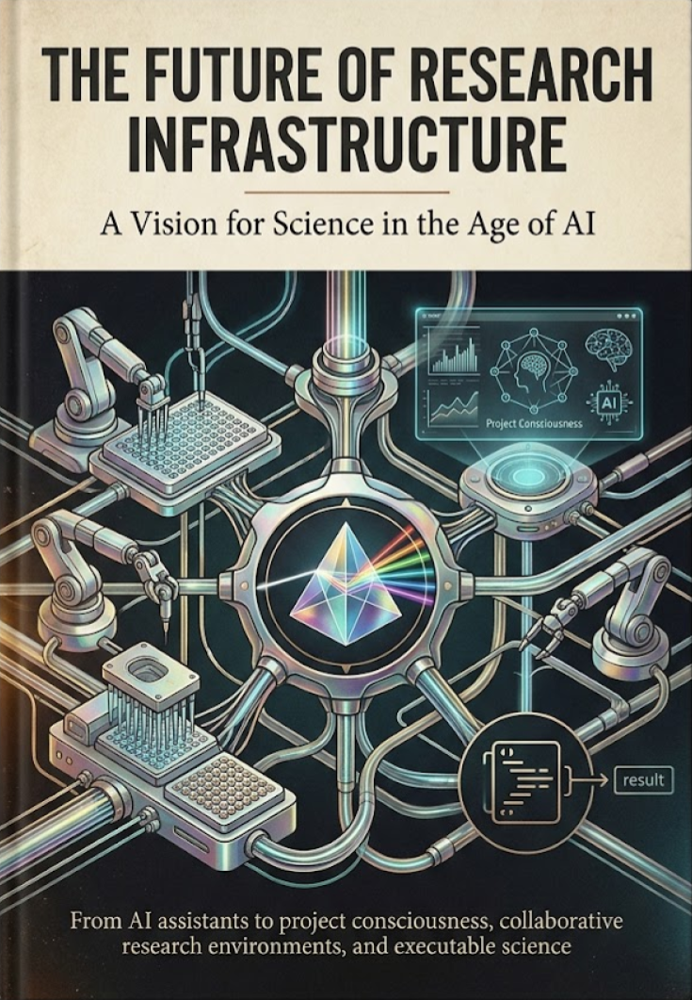
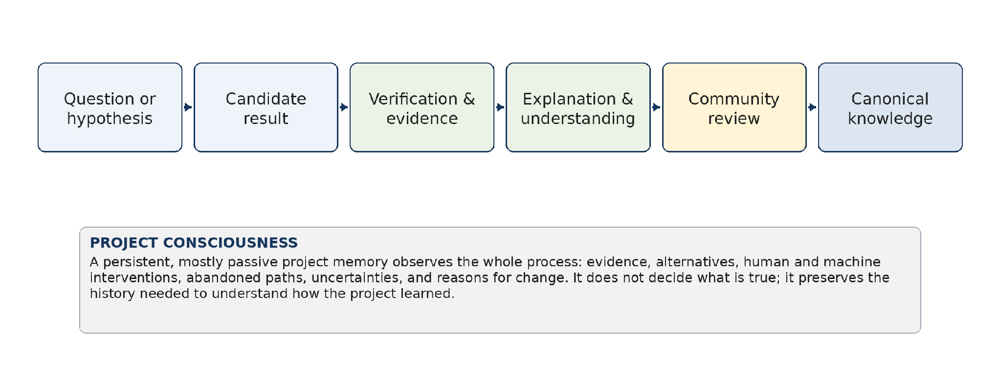
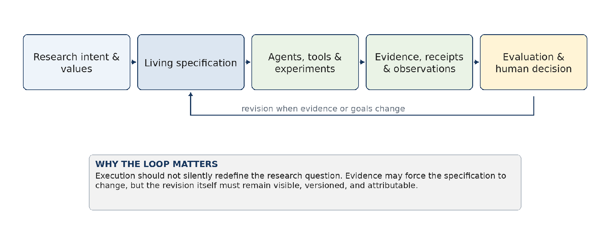
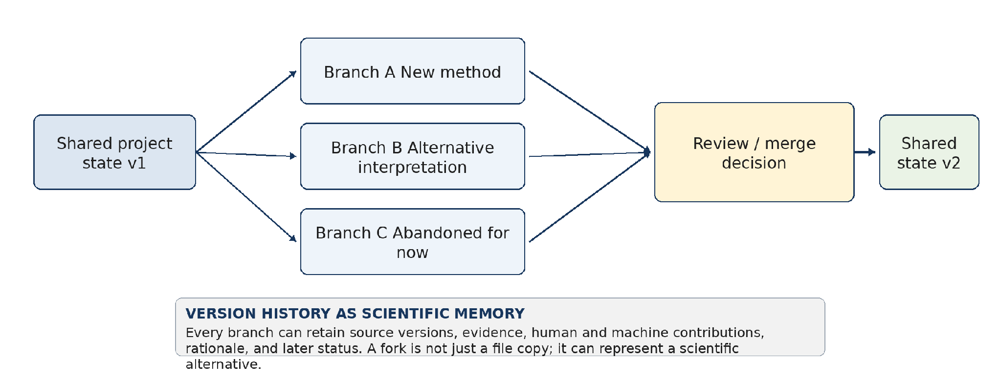
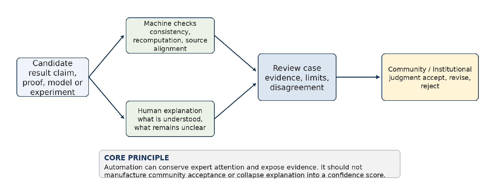
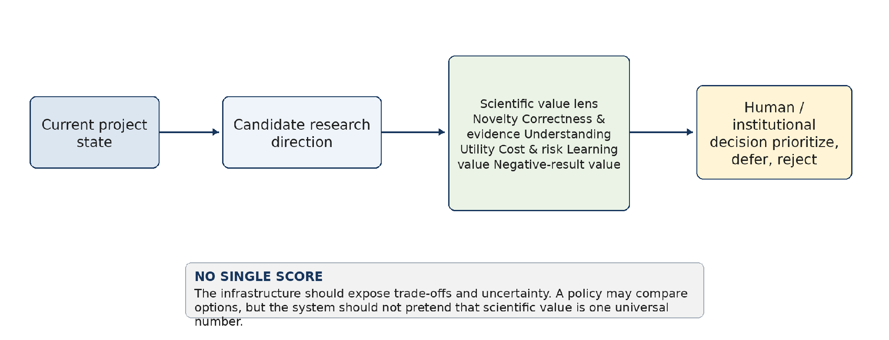
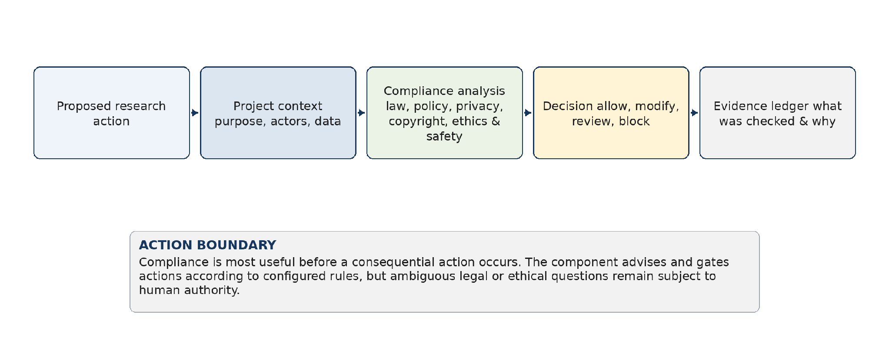
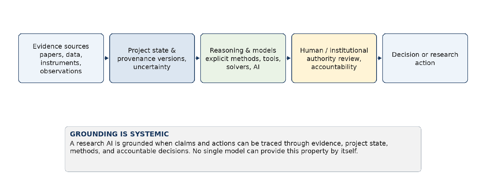
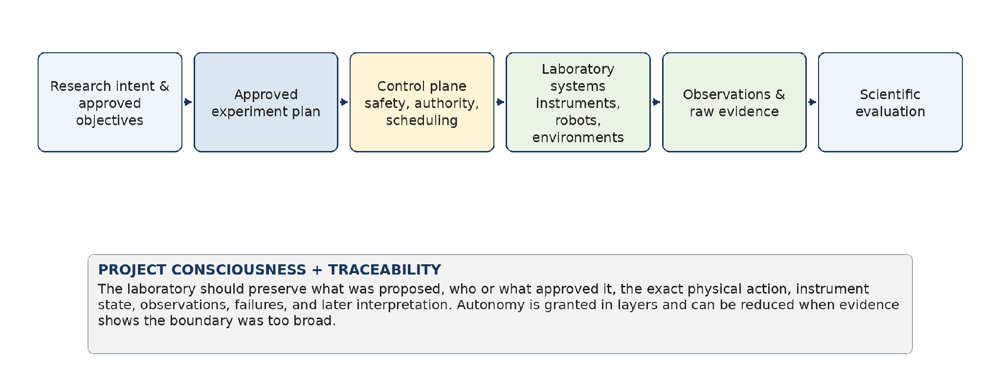

From output abundance to project consciousness, collaborative research environments, and executable science
Axiologic Research
Revision 3 — August 2026
This is Revision 3 of Axiologic Research's vision for research infrastructure in the age of AI. It preserves the central argument of the previous manuscript, but reorganises it so that the future practice of science—not a catalogue of technologies—is the main subject. The revision also integrates Terence Tao's 2026 essay Mathematics in the Age of AI as an explicit intellectual dialogue. Where the two views agree, the common ground is stated clearly. Where this book qualifies or extends Tao's position, the disagreement is kept visible because those differences identify useful research questions rather than editorial problems to be hidden.
The practical starting point remains Axiologic Research's work in the Horizon Europe ACHILLES project, where a first generation of an integrated environment for researchers has been explored together with specification-driven workflows, collaboration, and an early compliance-oriented copilot. That work is evidence that parts of the vision can be implemented, not a claim that the required infrastructure already exists. In 2026, what we have is still a small fraction of what will be needed when AI systems can produce scientific artefacts faster than researchers and institutions can verify, understand, compare, govern, and absorb them.
Tao's essay provides a particularly useful way to frame the problem. He temporarily sets aside the argument about exactly when AI will become capable of serious research-level mathematics and asks a simpler conditional question: if such tools become capable, what is mathematical research actually for? His answer is that a candidate proof is only the beginning. It must be checked, explained, digested by a community, accepted, and eventually integrated into the canonical knowledge of the field. Cheap production does not make these later stages obsolete; it makes their scarcity more visible (Tao, 2026).
This book is in broad agreement and generalises the diagnosis beyond mathematics. A candidate scientific result is not yet scientific knowledge. Data may be real while the interpretation is wrong. Code may run while the experiment is poorly designed. A manuscript may be fluent while its contribution is trivial or its evidence weak. Even a formally verified statement may fail to answer the scientific question researchers thought they had asked. The AI era therefore shifts attention from output generation toward evidence, understanding, review, institutional memory, responsible action, and the slow integration of results into shared practice.
The agreement is deliberately not presented as complete. Tao proposes that a formally verified proof that no human can properly explain should be treated as incomplete for publication. We accept the requirement for human understanding when a result asks for scientific authority, while also arguing for a provisional layer in which independently verified but not-yet-understood results can be preserved and studied without being treated as canonical knowledge. Tao emphasises human authorship and the continuing necessity of human referees; we agree on responsibility and communal acceptance, while arguing that detailed machine contribution should also become part of the scientific record and that human oversight may increasingly operate through standards, sampling, escalation, and authority boundaries. Tao is cautious about automating canonicalisation; we are somewhat more optimistic that AI can assist by comparing formulations, exposing dependencies, generating alternative explanations, and maintaining living maps of a field, while leaving final social acceptance to scientific communities.
The current Axiologic technology lines are therefore presented as experimental prerequisites for roles the future infrastructure must support, not as a feature list or a final architecture. Project-centred workspaces, controlled agent deployment, reusable capabilities, explicit process representations, provenance mechanisms, and neuro-symbolic execution experiments matter because they investigate recurring needs: preserving scientific state, bounding authority, making actions inspectable, keeping models replaceable, supporting customisation, and connecting claims to evidence. The concrete implementations may change. The responsibilities will remain.
The resulting book is a vision and a research map. It begins with how science is done today—through papers, meetings, notebooks, code, datasets, instruments, peer review, informal explanations, and the memories of experienced people—and asks what must change when AI becomes a persistent participant in that work. The answer is not one universal Research IDE. It is a family of research infrastructures able to help individuals, laboratories, institutions, and research-driven companies retain scientific judgment under conditions of machine-generated abundance.
All rights reserved.
KDP publishing rights held by Outfinity SRL (Iași, Romania).
Available for free on Axiologic website (www.axiologic.net).
This work was created under the umbrella of Axiologic Research as part of two interconnected research programs, one dedicated to Artificial Intelligence and the other to Outfinitism, both led by Sînică Alboaie. To explore the details of how these two programs intersect and build upon each other, we invite readers to visit the Outfinity Venture Studio page at www.outfinity.ch.
While Artificial Intelligence language models were used to assist with text generation, the foundational philosophy, thematic structure, and analytical approach derive exclusively from the author's decades of dedicated study of social phenomena, social technologies, and genuine hard technologies resulting from various European and self funded research projects. Recently, within the Achilles research project, we have been deeply studying AI generated literature and its automated verification using neuro symbolic approaches; all the free books made available to the public are part of the suite of works we use to test and popularise our latest ideas and technologies.
1 What Science Is For When Results Become Abundant 2 The Research Project as a Living System 3 From Scientific Intent to Executable Work 4 Memory, Versioning, and the Authorship of Scientific Work 5 Agents as Scientific Roles and Bounded Contributors 6 Evaluation, Digestion, and Community Acceptance 7 Choosing Direction in an Age of Result Abundance 8 Compliance, Disclosure, and Continuous Scientific Context 9 Grounded, Hybrid, and Inspectable Research Intelligence 10 When Research Infrastructure Reaches the Laboratory 11 A Research Programme for Scientific Infrastructure in the Age of AI —Conclusion: The Instrument We Do Not Yet Have
In brief. Tao's useful move is to stop arguing about the exact capability date and ask what scientific work should preserve if generation becomes cheap. The central risk is that visible outputs—papers, proofs, hypotheses, benchmarks—become easier to produce than the deeper values they once approximated. Future infrastructure must therefore encode purpose, judgment, and limits, not simply increase throughput.
The most useful way to discuss the future of research infrastructure is not to begin with another prediction about when an AI system will equal a scientist. Predictions of that kind mix several questions: which scientific field, which task, how much human scaffolding, what cost, what success rate, what standard of correctness, and what access to prior work. A system may be excellent at proposing proofs in one area and poor at designing a reliable physical experiment. It may solve a novel problem after hundreds of expensive attempts while a public demonstration reports only the successful run. It may write an impressive paper while depending on unreported human intervention.
Terence Tao handles this uncertainty with a disciplined thought experiment. His 2026 essay asks the reader to assume a reasonably strong version of the capability claim: AI tools will soon perform a reasonable share of research-level mathematical work with useful levels of quality, supervision, and cost. He does not ask the reader to celebrate that possibility or even to believe it. He simply conditions on it so that a different question can be examined: if the capability arrives, what goals and values should mathematical research preserve? (Tao, 2026).
This book adopts the same conditional stance for science more broadly. Suppose that AI systems become good enough to search literature, generate hypotheses, write software, design analyses, operate simulations, critique manuscripts, and control at least some laboratory procedures. The exact date and degree no longer matter for the argument. Even partial success can create an infrastructure problem because output can grow faster than human attention. A model does not need to become an autonomous scientist to overwhelm a laboratory with plausible hypotheses, a journal with polished manuscripts, or a company with alternative research plans.
This way of framing the problem is more conservative than the language of an approaching artificial scientist. It is also more demanding. It shifts attention from demonstrations to institutions. The question is no longer whether a model can produce one valuable result. It is whether a research organisation can receive thousands of machine-generated contributions without losing track of evidence, responsibility, scientific meaning, and the reasons one direction was chosen over another.
The distinction between capability and desirability is essential. A tool can be capable of producing a type of output that a community should not reward without limit. The ability to generate more papers does not imply that science needs more papers. The ability to produce more formally verified proofs does not imply that the central shortage is proof. The ability to search more combinations does not imply that the best research strategy is to search as many combinations as possible. Infrastructure has to reflect what research is for, not merely what machines can be made to produce.
Axiologic Research reached this conclusion through a more practical route. Work in ACHILLES and in the associated research environment showed that adding a copilot to an existing workspace solves only a small part of the problem. The difficult questions appear as soon as several agents work on the same project. What is the current project state? Which agent may change it? Which evidence is accepted? Which branch is exploratory? Which version of a rule was applied? Who approved the result? What remains uncertain? These are not interface details. They are the beginnings of an explicit scientific constitution for the project.
Tao's central insight is that mathematics has many goals that were historically correlated. Solving a difficult problem often created new methods, deepened understanding, trained students, formed communities, produced elegant work, and contributed to a cumulative body of knowledge. Because these outcomes tended to travel together, the community could use visible achievements such as theorem production or problem solving as rough proxies for the wider value of the work.
Science has relied on similar correlations. A successful experiment often produced a paper, a reusable method, a better instrument, new data, trained researchers, and a clearer picture of the world. An industrial research breakthrough could improve a product while also building organisational competence. A well-designed negative result could save other groups from repeating a dead end. A careful review could improve an entire field even if it produced no new dataset or patent.
The correlations were never perfect. Science has always contained fashionable but shallow work, results that could not be reproduced, elegant theories with little empirical contact, and important contributions that received little credit. Yet scarcity placed a natural limit on how much misalignment could be produced. Experiments were expensive, writing took time, and the social cost of publishing was high enough that many weak ideas disappeared before entering the public record.
AI changes the strength of these natural filters. It can make the visible proxy cheap while leaving the underlying value expensive. A paper-like object can be generated in minutes, while establishing whether it contains a meaningful contribution may still require days of expert attention. A list of hypotheses can be generated instantly, while determining which one deserves a laboratory run may remain the hard scientific choice. A proof can be made formally valid, while understanding why it works and how it connects to a field may remain slow.
This is the setting in which Goodhart's law becomes an infrastructure problem. When a measure becomes a target, the measure stops tracking the thing we cared about. AI systems are unusually effective at exploring the gap between an observable target and the more complex value behind it. They can optimize for benchmark success, publication-like style, citation density, novelty language, or a formal acceptance rule without automatically preserving understanding, usefulness, honesty, or scientific depth. Tao argues that the economic incentives around AI intensify the same effect because vendors benefit from visible, quotable achievements on the metrics communities already use (Tao, 2026).
The practical conclusion is not that metrics should disappear. Large research systems cannot operate without measurements. The conclusion is that no single metric should be allowed to stand in for the whole purpose of research. A future environment has to keep several values visible at once. It should distinguish novelty from significance, formal correctness from empirical adequacy, successful execution from scientific understanding, immediate utility from long-term theory building, and individual priority from contribution to a community.
This is one reason the future infrastructure cannot be a larger chat window. A chat system is optimized around producing a response to the current request. A research environment must maintain a changing set of goals, constraints, values, and unresolved tensions over time. It must remember that a result can be correct but unimportant, novel but unsafe, useful but poorly understood, or promising but not yet supported. It must also allow these judgments to be revised without erasing the history of how they were made.
In brief. A candidate result is only the start of a longer scientific process. Verification, explanation, community digestion, and canonicalisation remain distinct stages, and AI-driven abundance makes the bottlenecks between them more important. Research infrastructure should preserve these stages explicitly and make their
status visible rather than collapsing them into one generated answer.
The simplest picture of research is a question followed by an answer. That picture is useful for explaining science to children and dangerous for designing scientific automation. Between a candidate result and established knowledge lies a chain of work that is often more expensive than producing the candidate itself.
Tao reconstructs this chain for mathematical problem solving. A proposed proof must be verified. A verified proof must be explained well enough that mathematicians can understand it. The result must then be digested and accepted by the community. Finally, important results must be canonicalized: restated in the right generality, connected to neighbouring ideas, placed in textbooks and reference works, and made part of the standard toolkit of the field. What began as one arrow from an open problem to a solution becomes a pipeline of several distinct stages (Tao, 2026).
The same structure appears throughout science, although the names change. A biological hypothesis must be connected to observations and experiments. The experiment must be calibrated, reproduced where possible, and interpreted within a theory. A computational result must be tied to code, data, parameters, and assumptions. A clinical finding must survive statistical scrutiny, external validation, ethical review, and translation into practice. An industrial research result must become a reliable process or product before it changes the world.
Verification means different things in these domains. In mathematics it may mean a formal proof or expert checking. In empirical science it may mean instrument calibration, statistical validity, consistency with recorded observations, replication, or triangulation across methods. In qualitative research it may involve transparency of interpretation, source grounding, reflexivity, and serious engagement with alternative readings. A common infrastructure cannot impose one universal verifier, but it can make the verification status explicit.
Explanation is also more than polished prose. Tao observes that current AI writing can be smooth while spending many words on routine material and passing too quickly over the genuinely difficult step. Human exposition often contains useful friction: a carefully isolated lemma, a change of notation, a paragraph that reveals where the author struggled. That friction tells a reader where understanding was hard won. When an AI rewrites everything into the same effortless tone, it can erase information about difficulty even as it improves grammar.
A research environment should therefore preserve more than the final explanation. It should preserve the questions that resisted resolution, the alternatives that were tried, the evidence that changed the team's mind, and the places where experts still disagree. This is one of the main functions of Project Consciousness introduced later in the book. Its job is not to produce a flawless retrospective story. It is to keep enough of the real intellectual history that future researchers can see where the project genuinely learned.
Digestion is the stage at which an individual result becomes useful to others. A community must decide whether the result is trustworthy, how it relates to prior work, what it changes, and whether it should influence future research. Review, seminars, replication, criticism, reuse, and teaching all belong to this process. Digestion is slow because it requires the scarce resource that AI does not create automatically: qualified attention from people who know what the result means.
Canonicalization is slower still. A result may be published in the form in which it was discovered and later understood in a more natural form. Several separate results may turn out to be instances of one principle. An ugly first proof may be replaced by a conceptual proof. A method may become standard only after years of use. In engineering and medicine, canonicalization can mean stable standards, reference implementations, validated protocols, or accepted clinical practice. The point is not to freeze knowledge. It is to transform scattered outputs into a coherent structure that new researchers can learn and use.
The future infrastructure should support every stage without pretending that they are identical. A machine may be authorized to generate a candidate, a deterministic tool may verify a narrow property, an AI facilitator may help prepare an explanation, and a human community may decide whether the result is accepted. The same project state can connect these activities while preserving their different authority.

Figure 1. In the AI era, production is only the first stage of scientific progress.
Table 1. The scientific pipeline separates stages that current tools and institutions often collapse.
| Stage | What the research environment must preserve |
|---|---|
| Candidate production | The question, assumptions, tool use, source versions, costs, and the fact that the output is still a proposal. |
| What was checked, by which method, against which | |
| Verification and evidence | data or formalization, and what remains outside the check. |
| Explanation and understanding | The key ideas, difficult steps, unresolved opacity, and which people can explain the result. |
| Reviews, disagreement, replication, reuse, and the | |
| Community digestion | slow conversion of an individual result into shared understanding. |
| Connections to theory and practice, stable reference | |
| Canonicalization | forms, teaching materials, standards, and the authority that accepted them. |
Tao describes a transition from proof scarcity to proof abundance. If AI can produce proofs faster than they can be checked, explained, reviewed, and canonicalized, mathematics will suffer a form of proof indigestion. Institutions designed around scarce proofs will behave poorly when proofs become plentiful (Tao, 2026).
The wider scientific analogue is research abundance, although the abundance will not be uniform. Some fields may experience an abundance of hypotheses but a continuing scarcity of experiments. Others may produce a flood of analyses from a fixed dataset. Software research may generate many implementations while reliable evaluation remains expensive. Drug discovery may produce millions of candidate molecules while synthesis, toxicology, and clinical testing remain constrained by the physical world.
This unevenness matters. AI does not remove scarcity; it moves it. The scarce resource may become laboratory time, access to high-quality data, expert review, trusted samples, patient recruitment, regulatory attention, or the ability of a research team to understand its own work. A future system should make these bottlenecks visible rather than measuring productivity only by the number of generated artefacts.
Research abundance also changes the economics of error. When one paper is expensive to produce, a reviewer can assume that the authors invested substantial effort before submission. When a thousand polished manuscripts can be generated cheaply, that assumption no longer holds. Review systems that rely on volunteer labour can be overwhelmed even if only a small fraction of the submissions are wrong. The quality of the average output may improve while the total amount of low-value material grows beyond the capacity of the community to filter it.
The same problem appears inside organisations. A research company can ask dozens of agents to explore a problem in parallel. The result may be hundreds of reports, code branches, proposed experiments, and apparent contradictions. Without a shared memory and explicit evaluation, the organisation gains output and loses orientation. It may repeat work, promote attractive errors, or abandon a useful direction because no one remembers why it was paused.
The central design objective therefore becomes scientific metabolism: the capacity of a project or institution to transform raw research output into tested, understood, reusable knowledge. A healthy metabolism does not merely generate more. It decides what should be examined, allocates scarce verification effort, preserves negative results, integrates corrections, and discards or quarantines material that has not earned authority.
This language is intentionally different from a production pipeline. Scientific work contains loops. A failed replication may change the hypothesis. A reviewer may expose a missing control. A new theory may make an old negative result relevant. Canonical knowledge can be reopened when new evidence appears. Infrastructure should support these returns without presenting the history as a straight march toward success.
In brief. The book broadly agrees with Tao that explanation, human responsibility, community acceptance, and canonical knowledge remain central in an AI-rich future. The debate concerns degree and architecture: whether verified but not-yet-understood results deserve a provisional status, how far human oversight can move from low-level checking to governed escalation, and how much AI can assist the slow work of
canonicalisation without claiming social authority.
The strongest agreement concerns the location of the future bottleneck. The AI debate often treats generation as the centre of research because generation is easy to demonstrate. Tao's analysis shows that mathematical progress depends on later stages that are quieter and less rewarded: verification, exposition, review, digestion, and canonicalization. This book reaches the same conclusion from the perspective of infrastructure. The most important scientific systems may not be the systems that generate the largest number of results. They may be the systems that help a community decide which results deserve attention and why.
The book also agrees that tool use should be disclosed. An AI-generated contribution should not enter a paper as if it were produced entirely through unaided human reasoning. Disclosure is not a ritual confession. It gives reviewers information about possible failure modes, clarifies which steps can be reproduced, and makes responsibility explicit. Future environments should generate such disclosure from execution history rather than asking authors to reconstruct it from memory at the end.
The role of human responsibility is another point of agreement. A machine has no standing to accept its own output on behalf of a scientific community. A model can propose, calculate, check, and communicate. It cannot by fluency alone acquire the authority to publish a claim, expose confidential data, conduct a dangerous experiment, or define what a field should value. Those decisions belong to people and institutions, even when machines provide most of the underlying work.
The book also shares Tao's concern that education is not equivalent to correct output. A student who submits an AI-generated proof has not necessarily learned mathematics. A young scientist who asks an agent to design every experiment may never develop the judgment needed to recognize a bad one. Research infrastructure should therefore distinguish production mode from learning mode. In some settings the system should deliberately withhold automation, ask the researcher to explain a step, or expose the difficult parts rather than smoothing them away.
Finally, the book agrees that communities must define their own workflows rather than accepting whatever form a vendor makes convenient. Research values are domain-specific and institution-specific. A general AI platform may optimize for engagement, speed, or visible output. A scientific community may care more about uncertainty, reproducibility, attribution, negative results, or careful training. Infrastructure is the place where those values become operational.
The first debate concerns results that are verified but not yet understood. Tao proposes a strong publication rule: if the authors cannot give a clear expert-level account of their result, the result should not be published as a completed mathematical contribution. The warning is compelling. Formal verification is not a substitute for comprehension, attribution, or scientific integration.
The infrastructure proposed here adds an intermediate status. A verified but not-yet-understood result may be too important to discard and too immature to treat as accepted knowledge. It can be placed in a provisional registry with its proof object, provenance, limitations, and explicit lack of human understanding. Researchers can attempt to explain it, simplify it, connect it to theory, or find counterexamples to the formalization. The result has a stable identity but not full authority. This preserves a potentially valuable object without confusing verification with digestion.
The second debate concerns whether understanding must reside in one human mind. Modern science already contains projects that no individual can understand in every detail. Large experiments, complex software stacks, and interdisciplinary programmes distribute knowledge across teams. The relevant requirement may be a structured form of collective understanding: designated experts can explain the critical components, the interfaces among components are clear, and the project can answer challenges without appealing to an opaque system as the final authority.
Project Consciousness could support this distributed form. It can maintain a map of which claims are understood by which people, what explanations exist, where responsibility lies, and which dependencies remain opaque. This does not lower the standard of understanding. It makes the standard realistic for research systems larger than one person.
The third debate concerns authorship. Tao, following the Leiden Declaration, affirms human authorship and responsibility. This book agrees that an AI system should not be treated as a moral or legal author. Yet a simple statement that humans are the authors can also hide the actual production process. A future publication may contain a theorem proposed by one model, code written by another, experiments run by a robotic system, and an interpretation developed by a human team. The infrastructure should record these contributions in detail even if the formal author list remains human.
This distinction between authorship and contribution matters for accountability. It prevents a human from claiming unaided credit for machine work while also preventing responsibility from being displaced onto a tool. The project can say which agent performed which action, which human approved it, and which institution accepted the risk. Credit, provenance, and responsibility become related but not identical records.
The fourth debate concerns canonicalization. Tao regards it as the stage least amenable to optimization by AI, and the social part of that claim is difficult to dispute. A community must decide what deserves to become definitive. No model can grant that authority to itself. The book is more optimistic about the supporting work. AI systems may compare proofs, detect hidden equivalences, trace the evolution of concepts, produce explanations for different audiences, test generalizations, and maintain living reference works whose claims remain linked to evidence. They can help people canonicalize without becoming the community that confers canonical status.
The final debate concerns grounding. Tao describes generative AI as inherently ungrounded because it optimizes for the appearance of a satisfactory output rather than the property the output is meant to indicate. This is an accurate description of the risk posed by a standalone generative model. The book treats ungroundedness as a system design problem rather than an immutable property of every future AI research environment. A model can be connected to versioned sources, executable methods, formal checks, sensors, laboratory instruments, and human authority. The model remains capable of error, but the larger system can make unsupported fluency easier to detect and harder to convert into action.
Table 2. Tao's analysis and this book's extension are largely aligned, with several deliberate points of debate.
| Tao's proposition | Extension or qualification developed in this book |
|---|---|
| Assume meaningful AI capability and ask about goals and values. | Adopt the same conditional method for science, industrial research, and automated laboratories. |
| Tao's proposition | Extension or qualification developed in this book |
|---|---|
| A proof must be verified, explained, digested, | Generalize the chain to evidence, experiments, |
| accepted, and canonicalized. | interpretations, practice, and institutional memory. |
| A result no human can explain is incomplete for publication. | Agree for authoritative publication, while preserving verified but not-yet-understood results in a provisional research layer. |
| Authorship and responsibility remain human. | Keep human and institutional responsibility, while recording machine contribution at action-level precision. |
| Human referees cannot be replaced by automatic filters. | Agree that community acceptance is human; explore machine assistance, structured triage, and human governance of high-volume checking. |
| Agree that canonical authority is social; expect AI to | |
| Canonicalization is least amenable to AI. | assist comparison, explanation, dependency mapping, and living reference works. |
| Accept the risk at model level; investigate grounding | |
| Generative AI is ungrounded. | as a property of the whole system through evidence, execution, provenance, and authority. |
The argument now returns to infrastructure. If science cares about more than output, then the research environment must represent more than files and conversations. It needs a persistent scientific state containing questions, claims, evidence, experiments, interpretations, decisions, permissions, and unresolved uncertainty. It needs to know which stage of the scientific pipeline a result has reached and what would be required for the result to move further.
This state must survive model replacement. A research project cannot lose its identity each time a vendor releases a new model. Models should enter through bounded roles. One model may search literature, another may write code, another may critique a method, and a symbolic tool may verify a constraint. Their outputs become contributions to the project, not the project itself.
The environment also needs a memory that is more demanding than a summary. Project Consciousness is the name used in this book for a largely passive AI role that observes authorised activity, preserves the history of decisions, and helps the team recover context. It should remember abandoned hypotheses, unresolved disagreements, failed experiments, and the natural friction of hard work. It may later notice that a discarded idea has become relevant because new evidence or a new method changed the situation.
Evaluation must become continuous and evidence-centred. Automated systems can check references, computations, internal consistency, data availability, reporting standards, and known failure patterns. They can conserve expert attention by preparing a structured review case. They should not turn the absence of a detected problem into community acceptance. Human and institutional judgment remains a separate stage.
Direction intelligence must also avoid becoming a novelty score. Its role is to help researchers compare possible directions across several values: novelty, evidence, explanatory depth, utility, risk, learning value, and fit with the long-term programme. It should reveal uncertainty and disagreement rather than hide them behind one number.
Compliance and rights management must move into the same project state. The ethical or legal status of a research action depends on the actor, data, purpose, jurisdiction, consent, licence, and intended consequence. An agent should not be allowed to act first and produce a compliance explanation later. The infrastructure should evaluate relevant constraints before the consequential action, while escalating ambiguous cases to qualified people.
Versioning and provenance connect all these roles. A branch can preserve a rival hypothesis. A fork can support an independent analysis. A commit can bind a scientific change to the evidence and decision that caused it. Provenance can record the participation of people, models, tools, datasets, and institutions. History does not prove truth, but it makes claims easier to challenge and corrections easier to propagate.
The current Axiologic work provides pieces of this substrate. AssistOS and the ACHILLES IDE explore persistent project workspaces and collaborative interaction. WebMeet explores a room in which researchers and AI agents can discuss and build shared artefacts. Agent runtimes and reusable capability libraries explore specialised roles and bounded deployment. MRP-VM and SOP Lang circuit research explore inspectable execution and the separation between proposal and authority. OpenDSU explores controlled sharing and verifiable history across organisational boundaries. The point of naming these projects is not to present a finished stack. It is to show continuity between the vision and experiments that make parts of it concrete.
The rest of the book develops the infrastructure from the inside out. It begins with the research project as a living system, then examines executable intent, memory, specialised agents, evaluation, research direction, compliance, hybrid reasoning, and automated laboratories. The common question remains the one sharpened by Tao: when generation becomes abundant, what must an environment preserve so that research still produces understanding rather than merely output?
A research environment should begin with the project, not with the model. That choice sounds minor, but it reverses the architecture of most contemporary AI applications. A model-centric system asks what context must be assembled for the next inference. A project-centric system asks which scientific objects already exist, how their status changed, what remains unresolved and which capabilities are permitted to act on them. Models become replaceable workers inside a longer-lived environment. The project becomes the continuity mechanism.
The first generation of the ACHILLES IDE, in Axiologic's implementation line, provides a concrete engineering baseline for this shift because it is built on AssistOS rather than on a single chat interface. The environment already treats collaboration, visualisation, meetings, files and agent access as parts of one workspace. The research question is what must be added for that workspace to understand the structure of science itself. The answer cannot be one universal ontology. It is more plausibly a small set of stable scientific contracts combined with domain-specific packages.
A general-purpose copilot is an excellent interface for asking questions, editing text, writing code and invoking tools. It is not, by itself, a model of a research project. Most assistants are organised around a session or a user request. Context is assembled, a task is completed and the result is returned. Long-running memory can improve continuity, but scientific continuity has stronger requirements than conversational memory. A scientist needs to know which hypothesis was tested, which version of a dataset was used, which experimental branch failed, which evidence contradicted a claim, which decision superseded another, and which result is invalid because a dependency changed. These are relations among scientific objects, not simply facts about what the user previously said.
Research software is also mostly artefact-centred. A document editor manages documents. A notebook manages cells and outputs. A code repository manages files and revisions. A data platform manages datasets. A workflow engine manages jobs. A reference manager manages papers. A meeting system manages communication. Each tool is useful, but the scientific meaning that connects them often exists only in human interpretation. An AI agent crossing tool boundaries therefore faces the same integration burden repeatedly. It must infer which artefact is authoritative, whether two names refer to the same experiment, whether a figure is current, and whether a failed run should affect the project conclusion. This inference is expensive and error-prone when every task begins from raw files and conversation history.
The first missing primitive is persistent scientific state. The environment needs explicit objects for questions, hypotheses, claims, evidence, experiments, methods, artefacts, decisions, constraints and evaluations. The objects do not need to impose a rigid scientific ontology on every domain. A minimal common core can be extended by domain profiles. What matters is that the state has identity, versioning and links. If an agent says that
“claim C is weakened by experiment E”, the environment should be able to represent that relation directly.
If a later agent replaces E with a corrected run, dependent objects can be re-evaluated. Without this layer, the system may produce polished explanations while the underlying project remains semantically fragmented.
The second missing primitive is controlled action. A research agent should not have an undifferentiated ability to
“use tools”.
It needs a capability scope. A literature agent may search public corpora but not read a confidential dataset. A reproduction agent may execute code in a sandbox but not publish results. A meeting agent may draft decisions but not commit them as accepted project knowledge. A privacy agent may block a data transfer but should not rewrite a scientific claim. These boundaries are easier to enforce when the environment exposes typed actions and machine-readable authority rather than only natural-language instructions.
The third missing primitive is a distinction between proposal and acceptance. Scientific work contains many provisional statements. Brainstorming should be cheap. The environment can allow agents and humans to create candidate hypotheses, interpretations and plans with low friction. Those candidates should not silently become accepted knowledge. A state change can be treated as a research transaction: it starts from a known state version, proposes changes, records the actor and inputs, invokes any required checks, and commits only when the configured authority is satisfied. A transaction can still record a failed attempt. This gives the project replay, rollback, conflict detection and audit without forcing researchers to interact with database semantics.
Concurrency is the fourth missing capability. Agentic research is naturally parallel. One agent may search literature while another reproduces a result, a third designs an experiment and a fourth analyses a meeting transcript. They may all touch the same hypothesis. A conventional workflow engine often assumes a predefined graph, while a shared document model often assumes human conflict resolution after the fact. Research requires something between them: branchable state, explicit dependencies, optimistic concurrency, semantic conflicts and a way to compare competing research branches. The exact mechanism is a research hypothesis, but ignoring concurrency would make the architecture unrealistic.
The fifth gap is evaluation independence. A generic assistant can critique its own output, but self-critique is not equivalent to independent verification. Scientific projects benefit from different evaluators using different methods and evidence. A statistical check, a formal solver, a reproduction run and an LLM reviewer have different failure modes. The IDE should make evaluation composable and visible. A generated conclusion can carry multiple evaluations rather than one model confidence. The platform should also permit evaluators to disagree without forcing premature consensus. Disagreement is often a useful research state.
The sixth gap is temporal integrity. Research claims are made relative to a state of knowledge and a version of the project. Novelty assessment in 2026 is different from novelty assessment against a 2024 literature snapshot. A reproduction run may depend on an environment that later disappears. A model trained on future literature can contaminate a historical benchmark. A research environment therefore needs snapshots, versioned corpora where feasible, explicit retrieval times, environment capture and memory scopes. These are not advanced features for a future autonomous scientist; they are basic requirements for reproducible evaluation of current research agents.
The seventh gap is project-scale explainability.
“Why did the model answer this?” is not the only relevant question.
Researchers need to ask
“Why do we still believe this?”,
“What changed since last week?”,
“Which conclusions depend on this dataset?”,
“Why was this experiment prioritised?”,
“Which agent or human rejected this branch?”, and “What would need to change for us to revisit it?”.
These questions require explanations over state and provenance. They cannot be generated reliably from the latest chat alone. A project-level explanation should point to the objects, evidence and decisions that support it.
In brief. Project Consciousness is proposed as a mostly passive AI role that maintains the intellectual history of a research project. It observes authorised human and agent activity, preserves alternatives, abandoned directions, evidence, uncertainty, and reasons for change, and can later recover ideas whose relevance has returned. Its value depends on faithful memory and explicit uncertainty, not on retrospective storytelling or
autonomous authority.
A future research infrastructure may need something more continuous than a project database and more restrained than an autonomous project manager. We can call this virtual role the Project Consciousness. The term is deliberately metaphorical. It does not claim machine consciousness. It names a persistent AI function whose job is to observe the life of a research project, maintain a coherent account of what has happened, and help the group recover its own history. Most agents are active: they search, calculate, write, test, or propose. Project Consciousness is primarily passive. It listens to authorised events, notices state changes, and builds an evolving rationalisation of the project without pretending that the rationalisation is the project itself.
This role addresses a weakness that appears in almost every long research programme. The formal record contains the accepted results, while the real history also contains hesitation, discarded ideas, failed replications, temporary assumptions, arguments in meetings, unresolved doubts, and insights that were judged premature. Human teams remember some of this for a while. Then people leave, attention shifts, and the reasons behind earlier decisions decay. Conventional document search recovers text but often not the intellectual situation in which the text mattered. A project-aware AI could preserve that situation as a versioned interpretation linked to the underlying events.
The Project Consciousness should not merely summarize activity. A summary tends to compress away disagreement and dead ends. Its more valuable function is temporal reasoning over scientific intention. It can know that a hypothesis was abandoned because the available dataset could not distinguish two mechanisms, not because the hypothesis was refuted. It can know that a collaborator objected to a statistical assumption that was later reintroduced indirectly. It can remember that an experiment was postponed for budget reasons, that an idea was considered too speculative for a deliverable, or that a promising line was set aside when a key researcher became unavailable. Months later, when new data or new tools change those constraints, the system can surface the abandoned line as newly relevant.
Such a component would create a new kind of institutional memory. It would connect events that today belong to different channels: repository commits, notebook runs, meeting decisions, review comments, model outputs, literature changes, instrument logs, and human approvals. The goal is not to collapse them into one database schema. The goal is to maintain a navigable history of scientific meaning across them. A researcher should be able to ask not only 'what changed?' but 'why did we change our mind?', 'what alternatives were live at that moment?', 'what evidence would have changed the decision?', and 'which old questions have become answerable now?'.
The role is also important because future projects may contain dozens or hundreds of specialised agents. No individual human will inspect every intermediate action. An observing layer can detect that three agents repeatedly rediscovered the same failed path, that one line of evidence is being used by several conclusions, or that a new result silently invalidates assumptions elsewhere. It can provide context to active agents without giving them unrestricted access to the entire project. In this sense it becomes a bridge between memory and orchestration: it does not decide what the project should believe, but it helps other participants understand what the project has already lived through.
The Project Consciousness must itself be governed. A retrospective narrative generated by an AI can be wrong, overconfident, or seductively coherent. Its statements should therefore be linked back to events and artefacts, and competing interpretations of the history should be allowed. When it infers a reason that was never explicitly stated, that inference should remain marked as such. Some projects may permit the system to observe almost everything; others will require strict compartmentalisation because meeting conversations, personal notes, patient data, trade secrets, or partner information cannot be merged into one omniscient context. The architecture must support partial memory and explicit blind spots.
This virtual role also changes how we think about explainability. Explainability is usually discussed at the level of one model decision. Research needs explanation across time. Why did the project spend three months on a method? Why did a claim become accepted? Why was a contradictory paper discounted? Why did an automated laboratory stop exploring one region of parameter space? A coherent historical layer can make such questions answerable without requiring every scientist to read years of logs. The explanation is not a post-hoc story detached from evidence; it is a reconstruction built from versioned project events and therefore open to challenge.
If this idea proves useful, Project Consciousness may become one of the defining virtual components of future research infrastructure. It may materialise as a background agent, a versioned project narrative, a graph of decisions, a time-aware retrieval system, or a combination of these. Its interface may be almost invisible most of the time. What matters is the function: preserving continuity when the number of participants, agents, experiments and artefacts exceeds what unaided human memory can integrate.
The eighth gap is research-specific resource governance. Agentic systems can waste compute by repeatedly exploring low-value variations, retrying broken environments or performing expensive searches whose expected information gain is low. Existing schedulers optimise throughput or job completion, not scientific value. A research environment does not need a perfect
“resource economist”, but its orchestrator should expose budgets, stopping criteria, branch costs and results. Research hypothesis: resource allocation can be improved by combining scientific evaluation with operational metrics. The hypothesis must be compared with simpler quotas and human allocation; it should not be assumed.
Model replacement is another reason to separate scientific state from assistant memory. The useful lifetime of a research project can exceed the useful lifetime of a foundation model or an agent scaffold. A project started with one model may later migrate to another because of cost, availability, privacy or capability. If rationale and decisions exist only in model-specific memory, migration becomes a semantic reset. If they exist as explicit project objects with source links and provenance, a new agent can reconstruct context and its own understanding can be evaluated against the same state. This makes model competition compatible with scientific continuity.
Interoperability also matters at the level of institutions. A consortium should not need every partner to run the same vector database, workflow engine or LLM provider. A partner may expose a dataset through a controlled query service while another contributes a simulator and another contributes an evaluator. The research environment needs contracts that allow these capabilities to participate in one project without centralising everything. This suggests a service boundary around typed research objects and actions rather than around vendor-specific agent messages.
A final gap is the absence of a clear
“scientific source of truth”.
In software development, a repository and test suite provide imperfect but recognisable anchors. Research often has many competing sources of authority: the latest manuscript, a notebook, an internal spreadsheet, a meeting decision or the principal investigator’s memory. A research environment cannot solve scientific disagreement by decree, but it can make authority explicit. It can record that a dataset version is current, that a claim is provisional, that an experiment supersedes an earlier run, or that a decision was accepted by a named project role. This reduces accidental ambiguity without enforcing artificial consensus.
These gaps explain why the research environment should be an integration environment rather than another monolithic AI application. A new model can be plugged into a copilot. A new domain tool can be exposed through a tool adapter. A new evaluator can subscribe to state changes. A new privacy policy can constrain data movement. A new scientific domain can add object types and validators. The stable part is the contract around project state, execution, evidence and authority. This is the
“puzzle” property: components can be replaced because their responsibilities are explicit, not because every feature has been turned into a microservice.
Tao makes a subtle observation about mathematical exposition. Human-written work often retains what he calls a kind of natural friction. The author slows down around the hard step, changes notation, apologizes for an awkward construction, or explains why an apparently obvious route failed. Those irregularities help an expert reader identify where the real intellectual work occurred. A perfectly polished machine-generated text can remove not only typographical noise but also the signs that tell another person where to pay attention (Tao, 2026).
The same risk exists at the level of an entire research project. A clean final report usually conceals the hesitations, disagreements, discarded models, failed experiments, and changes of vocabulary through which the result became understandable. When AI systems can rewrite every intermediate document into smooth prose, they can make the project look more coherent than it was. The result is attractive but educationally poor. New collaborators see the conclusion without learning how the team learned to think about the problem.
Project Consciousness should therefore do more than summarize. It should preserve the epistemically useful friction of the project. It should know where a claim required repeated revision, where reviewers disagreed, where an experiment behaved differently from the model, and where a decision was made under uncertainty rather than compelled by evidence. These events are not imperfections to hide. They are signals about the structure of the problem.
This role can remain largely passive. It observes authorised activity, links artefacts to decisions, and creates a challengeable history. It should not continuously interrupt researchers with advice or convert every conversation into a formal record. Its value comes from selective attention: identifying moments where the meaning of the project changed and retaining enough evidence that the change can later be understood.
A useful project history would distinguish at least three kinds of narrative. The recorded history contains observable events: a branch was created, an experiment ran, a meeting occurred, a reviewer rejected a claim, a protocol changed. The interpreted history offers a provisional account of why those events mattered. The counterfactual history preserves serious alternatives that were not pursued and the reasons they were set aside. The first can be close to factual. The other two are reasoned reconstructions and should be labelled as such.
This distinction prevents rationalization from becoming institutional memory. Human teams naturally rewrite the past around the path that succeeded. An AI trained to produce coherent summaries may intensify that tendency. It can turn a contingent sequence into a story in which the final result appears inevitable. Project Consciousness should resist that temptation by showing uncertainty, conflicting interpretations, and missing evidence. Its task is not to make the project look wise. It is to help the project remain capable of learning.
The role also changes what it means for a team to understand a result. Tao's publication rule of thumb asks whether the authors can give a clear, expert-level talk about their result. This is a powerful standard because it prevents formal correctness from substituting for understanding. Yet research in large, interdisciplinary projects is rarely understood in full by one person. The statistician understands the inference model, the laboratory scientist understands the sample handling, the engineer understands the instrument, and the domain expert understands the biological or physical interpretation.
Future infrastructure may therefore need a map of distributed understanding. It should know which person or team can explain each critical dependency, which part is understood only through a machine-generated artefact, and where no qualified human can yet connect the pieces. The condition for scientific authority need not be that one individual can reproduce every detail. It may be that the project can assemble an accountable chain of human understanding and expose the gaps between its links.
A formally checked but not yet humanly understood result can then receive a precise provisional status. It is not discarded, because it may contain real value. It is not published as mature knowledge, because the project cannot yet explain its meaning, assumptions, or relation to the field. Project Consciousness can keep it visible in a protected queue, connect later work to it, and notify researchers when a new method or expert makes digestion possible.
This is one point where the present book goes slightly beyond Tao's immediate publication recommendation while preserving its purpose. The decisive distinction is not between keeping and deleting a result. It is between preservation and authority. An infrastructure capable of maintaining provisional knowledge can avoid both errors: prematurely canonizing an opaque result and losing a potentially important one because the community was not ready to understand it.
In brief. The future research environment may look familiar at the surface while becoming radically different underneath. Meetings, documents, diagrams, notebooks, and dashboards can become live interfaces into a shared scientific state in which agents work in parallel and their actions remain visible. The design challenge is not to replace human work with a new interface, but to make increasingly complex machine participation
controllable and intelligible.
The research environment should be familiar enough that a scientist can begin with existing habits. A project opens into documents, datasets, notebooks, visualisations, code, experiment runs, references, conversations and meetings. The general copilot is available everywhere but is not the only organising principle. The project itself is primary. A user can select a claim and ask for supporting evidence, select an experiment and ask for a reproduction, select a dataset and ask which conclusions depend on it, or select a meeting decision and inspect the work it triggered. This interaction pattern matters because it grounds language in project objects. The copilot becomes a conversational interface to the research environment rather than a separate conversational universe.
Documents should remain first-class because research is still communicated through proposals, protocols, reports and manuscripts. The difference is that the IDE can treat a document as both prose and a view over project state. An agent may extract candidate claims, citations, methods and unresolved questions. A reviewer may mark an assertion whose cited paper does not actually support it. A figure can link to the experiment run that generated it. A manuscript paragraph can become stale when the underlying claim changes. None of this requires replacing Word-like editing with a formal language. The formal structure lives underneath and is exposed only where it helps.
Notebooks and code environments become executable research surfaces rather than isolated technical tools. An agent can propose a new analysis, show the exact code and environment changes, execute them in a sandbox, compare outputs against a baseline and attach the result to an experiment object. A human can accept the result, request a reproduction with a different toolchain, or discard the branch. For domains that rely on simulators, the same interaction can apply to parameter studies and models. For physical laboratories, instrument integration should be treated as a later and higher-risk extension because actions may be irreversible and safety constraints are stronger.
Chat remains important, but it should not be the project database. A conversation is valuable for exploration, explanation and negotiation. The system can extract proposals from it, but the transition into project state should be visible. When a researcher says “we should probably test the low-temperature regime”, the copilot can create a candidate experiment plan and ask whether it should be added. When a team later agrees that a hypothesis is no longer credible, the meeting agent can propose a status change linked to the discussion. This separation preserves the speed of natural interaction without treating every utterance as an authoritative scientific statement.
Real-time collaborative interfaces deserve a larger role in this vision. In the current AssistOS line, WebMeet is integrated with the copilot and explores a meeting in which a group of researchers can speak with one another while AI participants join the same room. These AI participants can be organised as a RoboTeam (a configurable “robot team”): several specialised agents working in parallel on the project rather than one universal assistant. During the discussion they may search evidence, update a document, create a diagram, compare architectures, prepare an analysis, or challenge a claim. A human facilitator may direct the work, but an AI facilitator could also coordinate the session under explicit rules. The important point is that the meeting becomes an interface into the research project, not a separate communication channel whose useful content must later be reconstructed.
This pattern may become central to future research work because parallel agents create an interface problem. If ten agents can work at once, a scientist cannot control them through ten chat windows. The human needs a shared surface on which work becomes visible as it happens. A literature agent can place a source beside a claim. A statistical agent can expose a sensitivity analysis. A modelling agent can update a diagram. Another can propose a counterexample. Participants can interrupt, reject, redirect, or approve. The environment must show not only outputs but also roles, provenance, current authority, and what each agent is waiting for.
The shared object is therefore more important than the transcript. In ordinary videoconferencing, screen sharing makes one participant's application visible to the others. In a human-agent research room, the shared screen can become a manipulable project surface. Documents, figures, models, datasets, hypotheses, and experiment plans are common objects. An agent's contribution arrives as a visible proposal attached to an object. Human acceptance becomes part of the history. The distance between conversation and execution begins to disappear.
New forms of visualisation will be needed. Researchers may want to see which hypotheses are active, what evidence supports them, which agent is testing which branch, what remains uncertain, and where the current bottlenecks lie. The appropriate visual language will vary by discipline. A molecular biology team may need experiment and evidence views; a theoretical group may need argument and dependency structures; an industrial research group may need requirements, simulations, risk and manufacturing constraints. The infrastructure should therefore support composable views rather than impose one universal dashboard.
A meeting-centred interface also makes social authority visible. Science is not only computation. A principal investigator, statistician, laboratory technician, external reviewer, legal officer, and AI agent do not have interchangeable authority. Future interfaces should represent these differences without turning collaboration into bureaucracy. When a result is accepted, the environment can record who or what performed the check and who had authority to approve the transition. When an agent merely suggested a conclusion, the interface should not make that suggestion look like an institutional decision.
The larger hypothesis is that much research will move from sequential tool use toward sessions of coordinated attention. Humans will formulate goals, interpret surprising outcomes, negotiate assumptions, and decide what deserves commitment. Agents will work in the background and in parallel, bringing calculations and artefacts into the shared space. The most valuable interface may therefore resemble neither a conventional IDE nor a conventional video call. It may be a collaborative scientific room in which conversation, execution, visualisation, memory and governance coexist.
The interface should provide epistemic views that conventional project management tools do not. A claim view can show direct evidence, counterevidence, reproductions, confidence and downstream dependencies. A contradiction view can show where sources or experiments disagree. A branch view can compare competing hypotheses and their resource cost. A provenance view can reconstruct how a figure or conclusion was produced. A novelty view can show the strongest known prior art and the aspects believed to differ. An attention view can aggregate events that need human judgement. These views are not decorative dashboards; they are projections of Scientific Project State for specific research questions.
The environment should also be able to explain difficult parts of the project on demand. A Documentation or Tutorial Agent can generate a primer on a method used by another team, a walkthrough of a simulation, a glossary for a new collaborator, or a visual explanation of why an evaluator rejected a result. Such artefacts should carry a freshness marker and a state reference. If the project changes, the explanation can be regenerated. This allows the system to produce abundant educational material without confusing generated prose with the authoritative evidence record.
A useful interface needs explicit modes of commitment but should keep them lightweight. Brainstorming is one mode: anything can be proposed. Drafting is another: the system produces an artefact but does not change accepted state. Execution authorises reversible sandbox work. Acceptance changes the project’s scientific state. External action publishes, sends, purchases, submits or controls equipment and therefore deserves a higher authority threshold. The user should not need to think in access-control terminology; the interface can communicate these modes through familiar affordances. The underlying system, however, must know the difference.
A research environment can support proactive background work without becoming noisy. Literature scouts can monitor new papers against active hypotheses. Reproduction agents can rerun critical analyses when dependencies change. Privacy agents can check whether a planned data flow violates project rules. Evaluators can re-open a claim when contradictory evidence arrives. The user should see these actions as meaningful project events, not as a scrolling log of agent messages. Progressive disclosure is useful: a compact summary first, then evidence and trace, then low-level tool details if needed.
Multi-institution research adds another dimension. A project may contain shared claims backed by evidence that is accessible only to one partner. The IDE should support federated scientific objects: the shared project can know that an authorised evaluation exists without copying the protected dataset into a central environment. Depending on the use case, a computation can be sent to the data, an aggregate result can be returned, or a remote agent can expose only a bounded capability. The design space includes conventional access control, local inference, trusted execution, federated analysis and privacy-enhancing technologies. Which mechanism is appropriate is a deployment decision, not a universal architectural requirement.
Long-term speculation: ambient research assistance should be kept separate from near-term requirements. It is plausible that future researchers will use ambient assistants that continuously observe permitted project activity, prepare briefings and launch low-risk analyses automatically. It is also plausible that scientific projects will contain persistent agent teams that develop specialised procedural memory. Neither is necessary to justify the research environment now. The near-term system only needs enough persistence, modularity and governance that increasing autonomy can be added
In brief. WebMeet illustrates a possible shift from videoconference as communication to meeting as a scientific control surface. Researchers and a RoboTeam of specialised AI participants can discuss, create artefacts, inspect evidence, test alternatives, and update project state in the same environment. This makes scientific digestion part of the work itself rather than an after-the-fact reconstruction of what happened in calls and chats.
Tao's emphasis on the expert talk suggests that the future of scientific communication may be more conversational than the current paper-centred system assumes. A paper is indispensable, but a talk, seminar, or working meeting reveals something that a polished document often hides. Experts can interrupt, ask why a lemma is necessary, request the source of a claim, challenge an assumption, or ask the presenter to explain the same idea from another direction. Understanding is tested in interaction.
This gives a deeper purpose to WebMeet-like interfaces. In AssistOS, WebMeet is integrated with the copilot and allows a group of researchers to speak with one another while AI agents participate as a RoboTeam. The important idea is not videoconferencing with a chatbot attached. It is a shared scientific control surface in which discussion, artefacts, models, diagrams, evidence, and actions remain connected.
During a meeting, one agent can maintain the current argument map. Another can locate the exact source behind a contested statement. Another can run a calculation or compare a new proposal with the accepted specification. Another can draw the architecture that participants are describing and revise it as the conversation changes. A facilitator, human or artificial, can keep unresolved questions visible without forcing agreement. The participants can inspect what the agents are doing, stop them, redirect them, or ask them to justify an operation.
Such an interface matters because future research will be parallel. While people discuss one issue, agents may explore several branches, test alternatives, or prepare evidence. A linear chat window is poorly suited to this work. It mixes questions, results, corrections, and instructions in one stream. Researchers need views that show the active branches, the status of each claim, who or what is working on it, the evidence available, and the decisions awaiting human authority.
The meeting itself can become an evaluation event. A result that looks convincing in a document may fail when the responsible team is asked to explain it live. The environment can support this test without reducing it to surveillance. It can prepare the dependency map, identify the hardest transitions, and invite experts to probe them. It can record which questions were answered, which required follow-up, and which revealed a gap in understanding. The record becomes part of the project's digestion history rather than a transcript stored and forgotten.
This also creates new forms of scientific publication. A mature result might be accompanied by a structured expert discussion in which the authors explain the difficult steps and independent specialists challenge them. The document, executable artefacts, and conversation can reference the same claims and versions. Readers can move from a high-level explanation to the exact evidence or computation, then return to the discussion that established why the result matters.
The future research workplace may therefore be centred less on opening individual applications and more on convening a scientific situation. Researchers enter a shared space, bring the relevant project state into view, invite specialised agents, and work through an unresolved question. Documents and diagrams are not separate products of the meeting; they are live research objects. Actions performed by agents are not hidden background tasks; they are inspectable contributions to the common state.
This vision requires better visualization and control than current collaboration software provides. Parallel work must remain intelligible. Participants need to see when agents disagree, when two branches rely on incompatible assumptions, when a result is provisional, and when a consequential action requires approval. The interface must support both immersion and restraint: enough information to preserve control, but not so much operational detail that the scientific conversation disappears behind dashboards.
WebMeet is one current experiment in this direction. Its concrete design will evolve. The durable idea is that scientific understanding is produced socially, through explanation, objection, revision, and shared attention. Research infrastructure should not treat those activities as informal events outside the computational system. It should make them first-class parts of how a project converts machine-generated output into collective knowledge.
A typical day in such an environment can remain simple. The researcher opens the project and receives a briefing generated from state changes rather than from message volume. It reports that two new papers affect an active hypothesis, an overnight reproduction succeeded, another failed because of a dependency mismatch, one agent-generated branch was stopped after exceeding its budget, and one decision requires human input because novelty evaluators disagree. The researcher inspects only the disputed novelty comparison, requests a stronger prior-art search, edits the experiment plan and joins a WebMeet with collaborators. The system records the approved plan and schedules the run. The visible workflow is familiar; the difference is that background agency is connected to explicit scientific objects.
The interface should also make it easy to ask longitudinal questions.
“What changed since the last project review?” can be answered by comparing state versions. “Which assumptions are currently untested?” can be answered by traversing dependencies. “Which conclusions rely on a single paper?” can be answered from evidence links. “What did we stop working on and why?” can be answered from rejected branches and decisions.
These questions are difficult to answer reliably from a folder of files and chat transcripts, even for human team members. They are precisely the kind of questions a state-centred IDE should make routine.
The research environment should not force every researcher to inspect graphs. Most users will continue to prefer prose, tables and familiar visualisations. Scientific structure can remain latent until needed. A manuscript can render a claim graph only when a reviewer asks for dependency analysis. A project dashboard can show a compact confidence indicator while allowing an expert to drill into source-level evidence. The UI principle is progressive formalisation: natural work first, explicit structure where it improves action, reproducibility or understanding.
The product opportunity is therefore concrete. The visible interface can remain a web-based collaborative IDE with a strong copilot, while the research contribution sits underneath: project state, agent contracts, evaluators, provenance, trustworthy execution and scientific views. This creates a path from today’s assistant-centric interfaces to a research environment in which much routine work It is useful to think of the future environment in terms of virtual components rather than fixed software modules. A virtual component is a role that the infrastructure must reliably perform even though different implementations may realise it in different ways. One laboratory may combine several roles in one service; another may split them across local software, cloud services, institutional systems, and specialised agents. The book therefore describes responsibilities before products. What matters is that the research process can invoke these responsibilities with known boundaries and can preserve the evidence of what they did.
In brief. A useful architecture should begin from responsibilities rather than product names. Future research systems need virtual roles for memory, evidence, direction, compliance, agent coordination, explanation, execution, review, and laboratory control. These responsibilities may later materialise as agents, services, models, formal systems, interfaces, or institutional procedures, and several technical implementations may
legitimately coexist.
The first family of virtual components maintains the research workspace and the evolving state of the project. It gives persistent identities to questions, hypotheses, claims, datasets, experiments, decisions and artefacts, and it lets different user interfaces project that state in useful ways. This family includes the Project Consciousness described earlier, but the two should not be confused: project state records what exists; Project Consciousness builds a historically informed interpretation of how the project arrived there.
Another family performs scientific work through specialised agents. The important design choice is specialisation by responsibility rather than anthropomorphic role-play. An agent that verifies a citation, one that plans an experiment, one that checks a statistical assumption, and one that prepares a visual explanation need different permissions, context and evaluation. They may use the same underlying model or completely different technologies. The infrastructure should care about the contract of the role more than the brand of the model.
A third family evaluates and challenges. Peer review is one visible example, but the deeper need is for independent checks throughout the life of the project. Some checks are mechanical, some statistical, some formal, some literature-based, and some necessarily human. The infrastructure should be able to request the appropriate kind of challenge at consequential transitions without pretending that one universal scoring model can decide scientific quality.
A fourth family provides governance and contextual constraints. Privacy, copyright, institutional policy, ethics, data-use agreements, security boundaries, and regulation all influence what research agents may do. These constraints will rarely fit one fixed compliance engine. They need configurable representations, source links, and enforcement points that can travel with the project and with the actions performed on its behalf.
A fifth family concerns evidence, provenance, and durable memory. It binds claims to sources and transformations, records versions, and allows corrections to propagate. The implementation may use repositories, provenance models, content-addressed objects, secure data-sharing mechanisms, or future systems that do not yet exist. The conceptual role is stable even when the technology changes: scientific work must remain reconstructable after people, models and tools have been replaced.
The final family connects digital reasoning to physical action. In an automated laboratory, the same project state and governance mechanisms must eventually control instruments, schedules, samples, simulations, and experiment execution. Here the distinction between proposal and authority becomes materially important. A software agent that suggests an experiment and a controller that moves a robotic arm should not inhabit the same permission boundary.
The first responsibility is the Research Workspace. It owns human-facing interaction and projections of project state. Its job is not to contain scientific truth; it presents documents, chat, meetings, data, code, experiments, evidence graphs, agent activity and decisions in forms researchers can use. It should be plugin-friendly because different domains require different visualisations and tools. A structural-biology project may need molecular viewers; a verification project may need proof traces; a social-science project may need survey and statistical views. The workspace should ask the platform for typed project objects rather than embed domain logic in a single frontend.
The second responsibility is Scientific Project State and Provenance. This is the architectural backbone. A minimal implementation needs stable object identifiers, versions, actor identity, timestamps, provenance links, access metadata and relations among objects. The state should support provisional and accepted objects, competing branches and supersession. It must also preserve raw artefacts, because structured summaries cannot replace source data, code or documents. The representation does not need to be a single graph database. A practical system can combine an event store for state changes, a relational or graph index for relations, an object store for large artefacts and specialised search indices. The research question is how much structure provides real benefit before authoring overhead becomes counterproductive.
A useful Scientific Project State contains only objects that help action or evaluation. Questions represent what the project is trying to resolve. Hypotheses are testable candidate explanations or predictions. Claims are assertions that may be supported, contradicted or scoped. Evidence points to observations, sources, outputs or validated analyses. Methods describe procedures. Experiments bind methods to inputs, environments and expected observations. Decisions record authoritative changes in direction. Constraints represent budgets, policies or domain restrictions. Evaluations attach assessments without overwriting the object being assessed. Tasks and agent runs describe operational The third responsibility is Research Orchestration. Research is not a fixed pipeline. The orchestrator converts an intention into a plan, selects capabilities, manages branches, observes progress, enforces budgets and stopping conditions, requests evaluation, and escalates decisions. It should not be a scientific oracle. Its job is coordination. A simple task may use a fixed workflow; an exploratory task may use iterative planning or tree search. The architecture should permit several orchestration strategies under one contract so that their value can be compared experimentally. A complicated agent hierarchy should not be retained if a small library of explicit workflows performs as well.
The fourth responsibility is the Agent and Tool Runtime. This is where intentions become actions. It manages model calls, tool adapters, execution sandboxes, compute, data mounts, credentials, simulators and eventually laboratory interfaces. Every run should have an execution identity, inputs, environment metadata, resource consumption, outputs and logs. Tool calls should be typed and policy-checkable. The runtime also provides failure isolation. An agent that executes untrusted repository code should not inherit the same network and data permissions as the user’s browser session. Reproducibility is easier when execution capture is a runtime feature rather than an optional habit of each agent.
The fifth responsibility is Evidence and Scientific Evaluation. It receives objects or state transitions that require checking and routes them to appropriate evaluators. A citation check, a statistical test, a formal solver, a reproduction run, a novelty assessment and a domain expert model are different evaluators but can share a common envelope: target object, evaluation method, inputs, result, uncertainty, provenance and evaluator identity. The evaluation layer should preserve multiple assessments and their disagreements. It should never silently convert “one evaluator passed” into “the claim is true”. Acceptance policy belongs to the project and may require a human decision.
The sixth responsibility is Knowledge and Memory. External knowledge includes literature, patents, standards, databases and domain corpora. Project memory includes accepted and rejected hypotheses, past experiments, decisions and operational experience. Procedural memory includes reusable methods, prompts, scripts, agent harnesses or skills learned during projects. These categories should not be collapsed. External knowledge has source and temporal boundaries. Project memory is part of scientific provenance. Procedural memory can influence future behaviour and therefore creates contamination and governance risks. A procedure should be promoted only after evaluation, versioned, scoped to domains where it has evidence, and removable when regressions appear.
The seventh responsibility is Trust and Governance. It cuts across all other blocks. Identity and capability determine what an actor may do. Data classification and policy determine which models, tools and locations may process an artefact. Secrets management constrains credentials. Audit records consequential actions. Security controls isolate untrusted content and code. Privacy controls manage personal, confidential and partner-restricted information. Human authority rules determine which state changes or external actions require confirmation. Incident handling traces affected scientific objects when a tool, dataset or agent is later found to be compromised. Trust is therefore implemented as concrete controls around action, not as a textual principle.
The common interaction among these responsibilities is the research transaction. Suppose the user asks the system to test whether a new regularisation method improves robustness. The orchestrator creates a candidate plan. The runtime checks out the relevant code, builds an environment and executes experiments. The evaluation layer validates outputs and may request independent repetitions. The knowledge layer retrieves related methods. The novelty evaluator compares the observed contribution with prior work. Trust controls restrict datasets and external access. The workspace shows the proposed conclusion. Only then is the Scientific Project State updated with the accepted evidence and claim status. Each stage can be implemented by different tools without changing the semantic outline.
A transaction also gives the system a unit of failure. If the code does not run, the transaction can record an operational failure without changing the scientific claim. If the experiment runs but the statistical evaluator finds no support, the negative result becomes evidence. If prior art shows that the method is known, the novelty status changes while correctness may remain unaffected. If the dataset was used outside its permitted scope, the system can invalidate or quarantine dependent outputs. This separation is more useful than a binary “agent succeeded/failed” status because scientific and operational outcomes are different.
State transitions need clear semantics. A hypothesis can move from candidate to active, rejected, suspended or superseded. A claim can remain disputed rather than being forced into true or false. An experiment can be planned, running, completed, failed operationally, invalidated methodologically or superseded by a corrected run. Evidence can be supporting, contradicting, inconclusive or unavailable. These states should be extensible and domain-specific, but their transitions should be auditable. An agent may propose a transition; policy determines whether it can commit it.
Schema evolution is unavoidable. A multi-year programme will discover that its initial object model is incomplete. New domains will introduce new evidence types, relations and constraints. The platform should version schemas and allow compatibility mappings rather than rewriting every historical object. Old project packages should remain readable. Agents should detect when they encounter a type they do not understand and either use a generic representation or request an adapter. This is a mundane infrastructure problem with long-term scientific importance: a research record is useful only if future tools can interpret it.
Caching and indexing are implementation concerns but influence the architecture. A large project may contain millions of evidence links or external facts, and the IDE should not load them all into an agent context. Project state needs query interfaces that return task-relevant slices, with provenance and access rules preserved. Semantic retrieval can help, but exact identifiers, graph relations and structured filters are equally important. The state layer therefore acts as a context compiler: it
In brief. Concrete technologies should be judged by the scientific responsibility they make possible. The important questions are whether a component preserves state, exposes authority, supports substitution of models, keeps evidence traceable, and remains inspectable under change. This framing lets the infrastructure
evolve without confusing a current prototype with the long-term scientific requirement.
The architecture should expose explicit contracts. An agent capability manifest can state accepted input object types, produced output types, required tools, data sensitivity limits, expected cost class and evaluators required before commit. A tool adapter can describe its parameters, side effects and sandbox needs. An evaluator can declare what kinds of objects it can assess and what its result means. A workspace plugin can declare which project views it renders. These contracts make dynamic composition possible without requiring agents to infer the entire platform from prose documentation.
The architecture should also prefer deterministic mechanisms where they are adequate. Provenance capture should be automatic. Access control should be policy-enforced. Checksums and environment fingerprints should not be generated by a language model. Statistical tests should use tested libraries. A language model can interpret an ambiguous request, propose a plan or explain an outcome, but the final access decision or computation should use deterministic infrastructure wherever possible. This rule improves reliability and makes agent behaviour easier to evaluate.
Research hypothesis: explicit Scientific Project State will improve continuity, reproducibility and replaceability over simpler approaches such as shared folders plus retrieval-augmented chat. This is the most important hypothesis in the architecture and should be tested aggressively. If a rich state model creates large authoring and maintenance costs without improving outcomes, it should be simplified. The programme should search for the smallest semantic core that produces measurable benefit.
Table 3. A minimal scientific project state needs semantic objects beyond files and chat memory.
Term Meaning in the research environment Question What is the project trying to discover or decide, and how has the question changed?
Claim What proposition is currently asserted, with what status and dependencies?
Evidence Which observations, computations, sources or formal results support or contradict the claim?
Experiment Which protocol, inputs, environment, outputs and evaluation state define the experimental episode?
Decision Which human or machine authority changed project state, and on what basis?
Constraint Which scientific, legal, ethical, resource or safety boundary limits legitimate action?
The research environment category is therefore justified even before the more speculative evaluators are mature. Persistent scientific state, explicit provenance, controlled execution and attention management solve immediate problems created by current agents. They also create the substrate on which stronger ideas can be tested without embedding them permanently in the user interface. If a novelty evaluator fails, the project state remains useful. If one representation of claims proves too rigid, it can be replaced without replacing the workspace. The architecture should make research hypotheses replaceable in the same way that it makes models replaceable.
A useful test of the category is simple: can a researcher return to a project after six months, replace the model, reproduce an important decision, see which evidence has changed, and understand why the current state differs from the old one without reconstructing the story from chat transcripts? If the answer is no, the system is still an AI application around research rather than an integrated environment for research.
A persistent project state also changes the meaning of coordination. In a chat-centred system, coordination is conversational: one agent tells another what it believes has happened. In a state-centred system, coordination is transactional. A capability reads a versioned set of scientific objects, proposes a transformation, and either commits a new state under policy or leaves the previous state untouched. This makes conflicts observable. Two agents can attempt incompatible updates to the same hypothesis or dataset interpretation without one silently overwriting the other. The system can preserve both branches, request reconciliation, or apply a domain-specific merge rule. Research collaboration becomes safer because disagreement is represented before it is narrated away.
This transactional view deserves its own research programme. Scientific objects are not all amenable to the same consistency model. A checksum can be updated mechanically. A hypothesis can branch legitimately. An experiment may become invalid when one calibration record changes. A literature claim may need re-evaluation after a source correction. A compliance decision may depend on the policy version in force at the time of execution. The research environment therefore needs semantic invalidation rather than generic cache invalidation: it must know which downstream objects require recomputation, which require human reconsideration and which remain historically valid even though they would no longer be accepted today.
The same project state can become an attention model. As AI increases the number of active branches, researchers need to know where human judgement has the greatest expected value.
Unresolved contradictions, high-impact unverified claims, expensive planned experiments, policy ambiguities and results whose novelty depends on weak retrieval are not merely items in a to-do list. They are different classes of epistemic debt. A research environment can make that debt visible and route it to people or specialised evaluators according to cost and consequence. The objective is not to optimise a researcher as if science were a queueing problem; it is to prevent machine-generated abundance from hiding the few decisions that determine the direction of a project.
Persistent state also provides a better foundation for collaboration between institutions. Teams should be able to exchange a bounded research object with identities, provenance, rights, declared evidence and version references without exporting the entire internal workspace. One institution may accept an external dataset but not the interpretation attached to it. Another may accept a verified protocol but require local re-execution. This suggests that interoperability should occur at the level of typed scientific objects and receipts rather than through wholesale synchronisation of internal memories. Such boundaries become increasingly important when research companies combine proprietary knowledge with public science and when automated laboratories operate across organisational borders.
The architectural principle is continuity without forced consensus. The environment should preserve dependencies, alternatives and authority without forcing every discipline into one ontology or one method. Domain-specific schemas can still share a common lifecycle for source, candidate, evidence, validation, decision and version. That small common grammar may matter more than any particular interface: it lets models, evaluators, repositories and laboratory systems change while scientific history remains interpretable.
Specification-driven work became important to Axiologic Research because generative systems changed the economics of implementation before they changed the economics of intent. When code, analyses, diagrams, and reports can be produced rapidly, a weakly defined purpose no longer causes a small inefficiency. It can generate an entire forest of plausible work that is internally coherent and scientifically irrelevant. Research has always suffered from this risk, but AI increases both its speed and its invisibility.
A research specification should not be confused with a prediction of the result or with a bureaucratic document written before thinking begins. It is a living account of what the project is trying to understand, which values should guide the work, which assumptions are currently permitted, what kinds of evidence would matter, and who has authority to change the direction. It can preserve alternatives, unknowns, and exploratory branches. Its purpose is not to remove scientific freedom. It is to prevent accidental ambiguity from being mistaken for freedom.
This distinction becomes decisive when many agents participate. One agent may interpret the question, another search the literature, another write code, another design an experiment, and another evaluate the result. Without a shared account of intent, each can perform its local task well while the project drifts. The final output may look polished because every local transition was linguistically plausible. Yet nobody can identify the point at which the project stopped answering its original question.
The specification is therefore best understood as a scientific constitution for the project. A constitution does not decide every future case. It defines legitimate roles, values, procedures, limits, and ways of revising the rules. In the same way, a research specification should be strong enough to orient action and weak enough to admit discovery. It should remain visible after work begins, because execution is precisely when hidden interpretations become consequential.

Figure 2. Specification-driven research keeps purpose connected to execution and revision.
In brief. A research specification should preserve more than tasks and outputs. It should encode the question being asked, the values that matter, assumptions, evidence standards, authority boundaries, and the conditions under which the project is allowed to redefine its own goals. This turns specification-driven work into a defence against semantic drift when humans and multiple AI agents translate scientific intent into executable
activity.
Tao's argument makes clear why a specification cannot be reduced to an objective function. Mathematical research has historically pursued several values at once: correctness, understanding, explanatory power, elegance, generality, community formation, and the cumulative organization of knowledge. These values often moved together closely enough that solving a difficult problem could act as a rough proxy for wider progress. AI can weaken that correlation. It can optimize a visible target while leaving the less visible purpose behind.
The same danger appears in every research domain. A command such as
"find a novel hypothesis" is incomplete because novelty can be manufactured by combining remote ideas without producing a plausible mechanism or a discriminating experiment.
"Improve the model" can be satisfied by overfitting a benchmark. "Automate the review" can become a demand for a score rather than a process that helps experts understand evidence.
"Make the project compliant" can reward documentation that looks complete while the actual data use remains ethically or legally questionable.
A useful specification keeps several values visible at the same time. A project may care about truth, novelty, reproducibility, privacy, safety, interpretability, cost, learning value, clinical relevance, or long-term scientific usefulness. The relative importance of these dimensions can change as the project develops. Early exploration may tolerate uncertainty and prioritize information gain. Later stages may demand stronger reproducibility, safety, and explanation. The infrastructure should preserve the distinction instead of collapsing all values into one permanent score.
This is not an argument against measurement. Measures help a team compare alternatives and detect failure. The problem begins when a measure is allowed to stand in for the entire purpose of the work. A benchmark can test one ability without defining intelligence. A publication count can describe output without describing knowledge. A successful laboratory run can establish that an operation occurred without establishing that the scientific interpretation is correct. The specification should state what a measure is evidence for and what it is not allowed to decide.
Tao's reconstruction of mathematical work offers a practical model. The apparent goal of solving a problem unfolds into candidate production, verification, explanation, community digestion, acceptance, and eventual canonicalization. Each stage asks a different question and gives authority to a different kind of evidence. A research specification can perform the same decomposition in other fields.
"Discover a treatment" can unfold into biological plausibility, experimental evidence, safety, comparison with alternatives, manufacturability, clinical relevance, and institutional acceptance.
"Build a theory" can unfold into internal coherence, contact with observation, comparison with rivals, explanatory compression, and the ability to guide new work.
The decomposition prevents one success from silently authorizing another. An agent may generate a promising molecule without calling it a treatment. A formal checker may establish a property of a model without deciding that the model represents the world. A literature agent may report that it found no close precedent in a declared corpus without claiming universal novelty. A laboratory controller may execute an approved protocol without changing the scientific question. The specification defines these boundaries before local success creates pressure to overstate the result.
It should also preserve zones that are intentionally not optimized. Some scientific activities are valuable because they keep a question open. An exploratory observation period may avoid a narrow success metric so that unexpected phenomena are not filtered out. A training activity may value the development of judgment more than the speed of completion. A community discussion may need disagreement and time rather than throughput. The infrastructure should be able to state that an ambiguity is deliberate and must not be filled automatically.
A specification therefore contains more than goals. It contains prohibitions, unresolved questions, evidential thresholds, permitted approximations, and reasons for restraint. Some parts can be exact. Others will remain interpretive. The key is not to pretend that all statements have the same status. A hard safety boundary, a provisional methodological preference, an empirical assumption, and an open theoretical question should not enter the execution layer as if they were interchangeable instructions.
The specification must be versioned because the project's values and understanding can change. A new paper may remove a novelty claim while creating a valuable replication opportunity. An unexpected risk may narrow the permitted experiment space. A negative result may reveal that the original question was poorly formed. The system should show not only that the specification changed, but why the change was accepted and which earlier decisions should now be reconsidered.
The strongest test of specification-driven research is therefore not whether it produces more artefacts. It is whether it makes misalignment easier to see. Can a reviewer identify that an agent optimized a proxy? Can the team see which value was sacrificed by a decision? Can the system refuse to promote a technically successful result because the required evidence or explanation never appeared? When these questions are answerable, the specification is serving science rather than merely organizing tasks.
A future research environment will perform many translations. A human question becomes a plan. The plan becomes tasks for people, agents, software, or instruments. Their outputs become evidence objects. Evidence is interpreted as claims. Claims are evaluated and may become decisions, publications, product choices, or new experiments. The scientific risk is concentrated in these transitions because each can change meaning while preserving fluent language.
The translation from question to plan can narrow the problem prematurely. The translation from plan to tool call can select a convenient method rather than an appropriate one. The translation from tool output to evidence can omit failed runs or important uncertainty. The translation from evidence to claim can strengthen an association into a mechanism. The translation from claim to decision can ignore whether the community has understood or accepted the result. A final report can conceal every one of these shifts because it narrates the completed path as if it were inevitable.
Research infrastructure should make the transitions into first-class objects. The environment should preserve the original question, the operational interpretation, the selected method, the inputs and versions, the observed result, the proposed claim, the checks performed, and the authority that accepted the next step. This does not require every sentence to become formal. It requires enough structure that a researcher can ask where the meaning changed and receive a concrete answer.
This is where specification-driven work differs from ordinary project management. A task tracker can show that an analysis was completed. A scientific environment must show what the analysis was intended to establish, which evidence it used, what assumptions it inherited, and whether its result actually satisfies the research purpose. Completion is an operational property. Adequacy is a scientific judgment. The two should be connected without being conflated.
The environment should also separate provisional and committed objects. An agent's interpretation is a candidate. A generated protocol is a candidate. A statistical result from an unreviewed data transformation is a candidate. Candidates are useful because science advances through proposals, but they should not silently become project memory or accepted knowledge. Promotion should require the checks appropriate to the claim and should leave a record of what changed its status.
Failures should remain visible as part of the same chain. A search that exhausted its budget is not evidence that no literature exists. A solver that returned unknown is not evidence that a claim is false. A laboratory run that failed because of an instrument fault is not the same as a negative biological result. A reviewer who could not understand an argument has produced information about explanation, not necessarily about correctness. The specification gives these failures a place so that they do not disappear into a generic retry loop.
This layered record supports a more faithful form of explanation. Instead of asking an agent to generate a persuasive narrative after the fact, the system can reconstruct the path from purpose to operation and from operation to evidence. The explanation can identify which parts were deterministic, which were model-generated, which depended on human interpretation, which alternatives were considered, and which checks were not performed. A concise human account can then be written from an inspectable project history rather than invented from a final answer.
The Project Consciousness introduced earlier has a special role here. It can observe these transitions over time and notice recurring patterns of drift. It may see that the same assumption is repeatedly introduced during planning but never stated in the high-level purpose, or that one evaluator is being treated as authoritative outside its scope. It can preserve abandoned interpretations and surface them when new evidence changes the comparison. Its role is not to enforce one meaning, but to keep the history of meaning available.
Axiologic's first-generation research environment already provides a practical reason to care about this chain. Once collaboration, copilots, meetings, documents, and agent actions occupy one project space, the environment can begin to treat scientific intent as a persistent object rather than as a prompt that disappears after execution. The present implementations are preliminary. The durable requirement is the continuity of meaning across heterogeneous work.
In brief. Not every scientific idea should be formalised at the beginning. A stronger approach lets natural language, diagrams, procedures, code, and formal representations coexist, then increases precision where repeated work and risk justify it. Successful agent improvisations can gradually become qualified, reusable
capabilities whose scope, evidence, and failure conditions are explicit.
The phrase executable science can suggest that every scientific idea should be converted into code. That would be both impossible and undesirable. Novel research often begins precisely where the relevant concepts are unstable. A researcher may not yet know which variable matters, which distinction is real, or which theory deserves formal expression. Forcing complete formalization at this stage can replace discovery with the administration of an early mistake.
The more credible approach is progressive formalisation. The project begins by making high-level purpose, non-negotiable boundaries, and major uncertainties explicit. More detailed structure is introduced where repeated execution, coordination, risk, or verification makes it valuable. A literature review may initially require only a declared corpus and inclusion logic. A mature review capability may later expose claim types, evidence relations, contradiction checks, and reproducible search receipts. A laboratory idea may begin as an informal hypothesis and gradually acquire a protocol, safety constraints, machine instructions, and formal validation gates.
Different parts of the same project can therefore have different levels of executability. One statement may merely name the required human reviewer. Another may generate a deterministic workflow. Another may trigger a dynamic plan assembled by specialised agents under a budget. Another may be translated into a formal constraint or proof obligation. Another may remain a question for discussion. The infrastructure should preserve these differences instead of treating executability as a binary property.
Natural language remains essential because scientific meaning often exceeds the available formal vocabulary. The problem is not that researchers write in language. The problem is that current systems allow language to become operational without exposing how it was interpreted. A research environment can retain natural-language intent while recording the operational reading that was used for a specific action. When an alternative reading is plausible, the system can preserve both and ask for evidence or authority rather than choosing silently.
Formal and symbolic methods become valuable where the representation is stable enough to justify them. They can check consistency, execute deterministic transformations, enforce access rules, verify interfaces, propagate dependencies, or establish narrowly formulated mathematical properties. Neural models remain useful for interpretation, analogy, candidate generation, and communication. Humans remain necessary for purpose, theory choice, contested meaning, social acceptance, and responsibility. The infrastructure is hybrid because scientific work contains several kinds of problem, not because hybridity is fashionable.
The boundary of every guarantee should remain explicit. A solver can verify the formal statement it received; it cannot by itself establish that the statement faithfully captures the research question. A statistical package can compute a correct estimate while the study design remains inadequate. A model can summarize a paper accurately while the paper itself is wrong. A human can approve a result while the community later revises the standard. Executable science is trustworthy only when these boundaries remain visible.
Progressive formalisation also reduces maintenance costs. A project should not encode an entire discipline before it can automate one useful check. It should formalize the smallest stable fragment that creates genuine leverage, test the fragment against real work, and expand only when the evidence justifies the added complexity. This avoids the classical knowledge-engineering failure in which a grand ontology consumes the project before the research problem has stabilized.
The approach creates a valuable disagreement surface. Two teams can share the same high-level scientific purpose while formalizing different middle layers. Their plans can then be compared without pretending that one representation was inevitable. A model may propose a third interpretation. The project can examine which evidence each interpretation exposes or hides. Formalisation becomes a scientific experiment about representation rather than a one-way conversion from prose into supposed precision.
Tao's argument about understanding is especially relevant. A formally verified object can remain scientifically incomplete when researchers cannot explain why the representation is natural, where the difficult step lies, or how the result connects to prior knowledge. Progressive formalisation should therefore produce not only executable artefacts but also bridges back to human understanding. The strongest representation is not always the most formal one. It is the one that permits the necessary work while preserving the meaning that people must eventually digest.
AI agents are valuable partly because they improvise. They can read an unfamiliar document, propose a transformation, repair code, or combine tools in a way that was not planned in advance. Research infrastructure should preserve this creativity. It should not, however, confuse one successful interaction with a reusable scientific capability.
A response is situated. It belongs to one request, one context, one collection of sources, one model version, and one set of hidden assumptions. A capability makes a stronger claim. It says that a recognisable responsibility can be performed across a defined family of cases, with stated inputs, outputs, resources, permissions, evidence, failure modes, and authority. The distinction is similar to the distinction between one observation and a scientific law. Repetition is not yet generalisation.
This suggests a disciplined path from improvisation to infrastructure. A successful interaction first becomes evidence that a capability may be useful. The team then identifies the reusable responsibility rather than copying the whole transcript. It defines the situations in which the capability should and should not activate. It states what sources and tools it may use, which artefact it must produce, how the output will be checked, and what happens when the task exceeds scope. Only then can the procedure be evaluated on varied and negative cases.
Negative cases are essential. A review agent that can identify a methodological weakness in one paper may still be unsafe if it raises the same criticism whenever it encounters similar vocabulary. A literature agent that finds prior art may fail when terminology changes. A laboratory planner may generate a valid protocol for one instrument and a dangerous one for another. Qualification must test whether the capability knows its boundary, not merely whether it can succeed when the environment is favourable.
Capabilities should also be versioned. A new model, rubric, data source, or procedure may improve average performance while creating a serious regression in one domain. The project should be able to compare the active capability with a candidate, inspect the evidence for promotion, observe changes in cost and failure, and restore an earlier version. Adaptation without versioned qualification is only drift with an optimistic name.
The same logic applies to memory. A generated answer should not enter persistent project knowledge merely because it was useful once. A candidate method should not acquire execution authority merely because an agent wrote working code. A successful plan should not become the default until the project has evidence that it transfers. The infrastructure needs explicit transitions from provisional output to retained evidence and from retained evidence to a qualified reusable component.
This is the broader research role of Axiologic's experiments with agent capabilities, controlled deployment, MRP-VM, and SOP Lang circuits. The particular notations and runtimes may change. Their common question is whether recurrent machine improvisation can be turned into inspectable, testable, replaceable competence without granting the generator authority over its own promotion. They are prerequisites for future virtual components of a Research IDE, not a finished catalogue of features.
A qualified capability can remain partly neural. The objective is not to replace every model call with a rule. It is to surround the model with a stable responsibility, evidence expectations, permissions, and checks. In some domains, repeated work may gradually become more deterministic. In others, interpretation will remain generative. The infrastructure should make that boundary explicit and allow the implementation to change without changing the scientific contract.
The practical benefit is continuity. A project can upgrade a model without losing its definition of literature search, compliance review, experiment qualification, or claim verification. An institution can compare different implementations of the same responsibility. A partner can expose a capability without sharing its internal model or proprietary data. Researchers can see what the virtual component is entitled to do and what evidence supports its use.
The scientific test is not whether the capability produces fluent output. It is whether it improves the complete research process. Does it reduce repeated work? Does it preserve evidence? Does it abstain appropriately? Does it lower expert correction effort without hiding new failure modes? Does it remain useful on unseen cases? Does it make a project's reasoning more inspectable? These are stronger and more informative questions than whether an agent appears intelligent in a demonstration.
A specification becomes most valuable when it is shared. Human collaborators, AI agents, software services, reviewers, and laboratory systems should not each carry a private interpretation of the project. They need a common, versioned reference that states the current purpose and exposes where legitimate disagreement remains. Shared does not mean identical access. Different participants may see different data and have different authority, but the relations among their actions should remain interpretable.
The specification can organize delegation without pretending that the project has one mind. A human principal investigator may define the scientific direction. A domain agent may propose methods. A statistical service may validate one class of claims. A compliance component may constrain data movement. A laboratory controller may execute only approved instructions. A review process may challenge the resulting argument. The specification links these roles through responsibilities and evidence rather than through a hierarchy of anthropomorphic personalities.
This shared reference is also the basis for meaningful collaboration in WebMeet-like environments. During a research discussion, participants can inspect the same hypotheses, evidence, unresolved questions, and decision boundaries. An agent can create a diagram or run an analysis without silently changing the accepted plan. A facilitator can distinguish brainstorming from commitment. The meeting produces scientific state rather than only a transcript because relevant decisions are connected back to the specification and its versions.
Forks are legitimate. Two groups may interpret the same evidence differently or pursue incompatible models. The infrastructure should allow them to branch the specification, preserve shared sources, and record the assumptions that diverged. A later merge is a scientific decision, not a file-management operation. The project may combine compatible evidence while retaining disagreement about interpretation. This is how versioning and specification become one architecture of plural but accountable research.
The Project Consciousness can maintain the historical relation among these versions. It can explain why one value became more important, why an experiment was abandoned, which agent-generated plan was rejected, and what evidence would justify reopening a branch. It should not rewrite history around the winning path. Its value lies in preserving the evolution of intent, including uncertainty and roads not taken.
The specification should remain challengeable. An overly rigid project can automate a bad framing with great efficiency. Researchers need explicit mechanisms to question the objective, revise a boundary, contest a source, or suspend an automated route. A trustworthy environment makes such interventions easier to locate and explain. It does not treat the current specification as an oracle; it treats it as the best public account of the project's intent at this moment.
A useful specification survives failure. When an experiment produces an unexpected result, the system should be able to identify which assumption was violated, which evidence requirement remains unmet, which branch exceeded its budget, and whether the failure challenges the method or the question itself. The team can then revise the specification deliberately. A document that becomes irrelevant after the first failed run was only a prompt with better formatting.
Specification-driven research also creates an experimental surface for comparing human and machine strategies. Two agents and a human team can receive the same high-level purpose, boundaries, and evidence requirements while constructing different plans. Because the interpretation is partially shared, evaluators can distinguish planning quality from task misunderstanding. This makes the specification useful not only for execution but also for research on research agents.
The central hypothesis is modest. Specifications will not eliminate ambiguity. They can make ambiguity locatable. When an instruction is unclear, the system can preserve the uncertainty instead of choosing invisibly. When two interpretations produce different plans, the project can compare them. When an agent optimizes the wrong proxy, the misalignment can be traced to a particular transition. When a result is promoted, the evidence and authority can be identified.
In an age of abundant machine-generated work, this may become one of the most important functions of research infrastructure. The scarce resource will not be the ability to produce another plan. It will be the ability to preserve purpose while plans multiply. A living specification gives the project a memory of what it meant to do, a framework for deciding what counts as progress, and a stable surface on which humans and machines can disagree productively.
Table 4. A research specification is a living scientific constitution around exploration, not a prediction of the answer.
What the research environment must
Layer
preserve
The question, the wider values, the reason
| Scientific purpose | the work matters, and the aspects that must not be reduced to one metric. Current assumptions, alternatives, evidence |
|---|---|
| Living specification | expectations, authority boundaries, stopping conditions, and unresolved ambiguity. Tasks, people, agents, tools, data, |
| Executable plan | dependencies, resources, permissions, and reversible branches. What was executed, with which versions and |
| Evidence record | inputs, what was observed, what failed, and what uncertainty remains. Checks, explanations, disagreements, human |
| Evaluation and decision | judgment, approval, repair, rejection, or provisional retention. How intent and interpretation changed, which |
| Versioned history | paths were abandoned, and why earlier decisions may need reconsideration. |
In brief. Scientific projects already branch intellectually even when their tools do not record those branches well. Future versioning should represent alternative hypotheses, methods, interpretations, and human or machine contributions, not merely file snapshots. This creates a record from which teams can understand why
a path was taken, what was abandoned, and who or what contributed to each change.
Version control became indispensable in software because a complex artefact cannot be changed safely by many people and tools unless its history remains recoverable. Researchers have the same problem, but their object is larger than code. A scientific version can include a question, a literature boundary, a dataset, a protocol, a model, a notebook, an interpretation, a review state, and a decision about what the group currently believes.
Most projects already contain such versions without representing them explicitly. A spreadsheet is copied before a risky analysis. A method is changed after a meeting. A rejected explanation survives in one researcher's notebook. A paper is rewritten after review, but the reason for the change remains only in email. The project has evolved, yet its history is distributed across files and memory.
AI makes this informal arrangement fragile. Agents can create many branches in parallel and can alter code, prose, data transformations, and experiment plans faster than people can reconstruct the sequence. A generated report may contain a conclusion that was valid for an earlier dataset but no longer applies. A correction may reach the manuscript but not the model card or the experiment queue. The system needs to know not only which file is newest, but which scientific state each artefact belongs to.
The practical lesson from Git is powerful but incomplete. Commits, branches, forks, diffs, and immutable identifiers are excellent tools for preserving change. They do not know that one branch represents a rival hypothesis, that another is a sensitivity analysis, or that a merge was accepted because an experiment resolved a disagreement. The future research environment should keep the strength of ordinary version control while adding scientific meaning to the transitions.
A scientific commit should be able to say: this claim changed because a source was corrected; this protocol changed because a safety review found a risk; this branch was paused because the expected information value was too low; this interpretation was rejected by the team but retained for later comparison. The history then becomes part of the argument rather than a technical trace around it.
Branching is especially important because science does not progress through one clean line. Researchers often need incompatible analyses to coexist. A statistical choice may be disputed. Two theories may explain the same observations. An industrial team may compare a high-risk research direction with a conservative one. A laboratory may preserve an old protocol while testing a new one.
Conventional project tools encourage premature convergence. A shared document tends toward one current text. A dashboard tends toward one current score. A conversational assistant tends to summarize disagreement into a single answer. This is convenient for coordination and dangerous for inquiry. The losing branch may contain the idea that becomes valuable after new evidence appears.
The infrastructure should therefore allow a branch to carry its own assumptions, evidence, methods, costs, permissions, and review status. Branches can share common sources without pretending to share conclusions. A merge should be an explicit scientific event. It may combine compatible evidence, select one interpretation, or create a higher-level account that preserves both views. The reasons for the merge should remain visible.
Forks are also valuable. An independent team can reproduce an analysis without modifying the original project. A regulator can inspect a controlled copy under different policies. A company can allow a partner to test one part of a proprietary result without exposing the rest. A future model can learn from the differences among forks: which assumptions transferred, which failed, and what kinds of correction were repeatedly needed.
This is why versions and forks may become valuable training resources. A final paper shows where the project ended. A version graph shows how understanding changed. It contains failed hypotheses, reviewer objections, revised definitions, corrected data, and decisions about what not to pursue. These are precisely the signals that a system needs if it is to learn scientific judgment rather than imitate finished prose.
Using such histories for training creates obvious privacy and ownership problems. A version graph may contain confidential ideas, personal criticism, patient data, or evidence of mistakes that should not be exposed outside the project. The research environment must therefore treat learning permission as a separate right. The fact that a system can read a project for the purpose of assisting the current team does not imply that it may use the history to train a future model.

Figure 3. Scientific versioning preserves alternatives and contribution, not only files.
Tao's discussion of authorship is especially relevant here. He argues, together with the Leiden Declaration, that authorship, credit, and responsibility should remain with humans, and that AI use should be disclosed. The principle protects the social structure of research. A model cannot accept blame, defend a claim in a seminar, mentor a student, or bear legal and ethical responsibility for a dangerous decision (Tao, 2026).
At the same time, future projects need a more precise record than the statement that AI was used. A team may use one model for literature search, another for code generation, a symbolic solver for verification, and a robotic system for experiments. Human researchers may contribute in different ways: defining the question, choosing data, challenging an interpretation, approving a risk, or explaining the result. A single author list compresses these contributions into a form designed for a different technological era.
The book therefore distinguishes authorship from contribution and responsibility. Authorship remains a human and institutional convention. Contribution records describe what each participant, including each machine agent, actually did. Responsibility records identify who had authority to accept the action and who must answer for its consequences. These layers should be connected but not collapsed.
This distinction prevents two opposite forms of misrepresentation. A human should not be able to present a machine-produced result as unaided personal work. A human should also not be able to escape responsibility by claiming that the AI made the decision. The record can show that an agent generated a candidate, a verifier checked a property, a researcher interpreted the result, and a laboratory director approved the experiment.
The same structure can support fairer credit among people. Review, data curation, software maintenance, replication, and canonicalization are often less visible than the generation of a headline result. Tao argues that the AI era should reduce the cultural emphasis on being first and increase the value assigned to digestion work. A contribution graph can make such work visible. It can record who clarified a proof, discovered a missing control, integrated a result into a reference dataset, or prevented a false claim from being published.
The record should not become a surveillance system. Research requires private thought, informal criticism, and the freedom to make mistakes. Project governance must define which events are retained, who can inspect them, and how sensitive contributions are summarized. The goal is accountable continuity, not total observation.
In brief. Provenance must survive when research moves across teams, companies, infrastructures, and data-sharing boundaries. A project history should connect artefacts to sources, transformations, actors, rights, and decisions while preserving enough context to reconstruct meaning later. Such histories can support audit, onboarding, correction, and eventually learning from the process of science rather than only from final
publications.
Within one repository, Git can preserve a strong file history. Research often crosses boundaries that Git alone cannot manage. Data may come from a hospital, code from a university, a model from a vendor, and an experiment from a contract laboratory. Each organisation has its own identity, permissions, retention rules, and evidence systems. The scientific result depends on all of them.
Provenance is the structure that answers where an artefact came from, which activity transformed it, and which people, tools, or institutions participated. It should connect a claim to its sources, a figure to the computation that produced it, a model run to the data and configuration used, and a laboratory result to the sample, instrument, calibration, and protocol.
A future research environment should capture this information during work rather than reconstruct it after publication. The action that creates a result should also create the provenance needed to inspect it. A data transformation should identify its inputs and method. A model call should record the model version, relevant settings, and the project state supplied to it. An approval should identify the authority and the evidence considered.
This does not mean that every detail must be public. Confidential content can remain protected while selected commitments, identities, and receipts are shared. The important property is continuity: another authorised party can verify that the object being discussed is the object that was produced, that its history has not been silently replaced, and that the required authority approved the transition.
OpenDSU is relevant to this vision not because every research object should use one particular architecture, but because it explores a useful design principle: place identity, controlled access, version continuity, and provenance close to the data object rather than leaving them in unrelated services. A bounded research object can move between organisations without becoming an anonymous file detached from its history. Other technologies may implement the same role through different mechanisms.
The role is especially important for AI agents. An agent should not receive a broad account credential when it needs a temporary right to read one dataset for one purpose. Its authority should be narrow, time-limited, and tied to the project state. The resulting action should leave evidence that can be checked by the receiving system before the next consequential step occurs.
Cross-institution provenance also supports correction. If a dataset is withdrawn, the environment should be able to identify which analyses, papers, models, and decisions depend on it. If a software vulnerability is discovered, the affected experiment runs should be located. If a consent condition changes, future uses should be blocked without erasing the historical fact that earlier authorised uses occurred.
Versioning becomes scientifically important when it is interpreted by Project Consciousness. The raw history may contain thousands of commits, meeting transcripts, agent calls, and experiment records. A passive AI role can organize this material into a narrative of the project while keeping the underlying evidence available.
The narrative should remain explicitly provisional. It can say that a branch was probably abandoned because the expected cost increased, but it should distinguish that inference from a recorded decision. It can summarize a disagreement, but it should preserve the original positions. It can identify a turning point, but it should not rewrite the past so that the final result appears inevitable.
This matters because research teams forget. People leave, projects pause, and terminology changes. Six months later, a group may repeat an experiment because no one remembers that a similar attempt failed under a slightly different condition. A project consciousness can retrieve the old branch, explain why it was set aside, and ask whether the new context changes the decision.
The memory can also support onboarding. A new researcher does not need to read every message. The system can provide an account of the current question, accepted evidence, unresolved alternatives, and important historical decisions, with links to the underlying records. The newcomer can challenge the summary and request the original material where the rationale remains unclear.
At institutional scale, version histories can reveal patterns. Some methods may repeatedly cause corrections. Some review practices may detect errors early. Certain types of branch may produce valuable results after being revived. These patterns can inform future process design, provided that learning is governed and does not expose confidential projects or turn local habits into unquestioned rules.
The strongest opportunity is to train systems on scientific change rather than scientific finish. Published papers teach models what accepted language looks like. Version graphs can teach how claims are narrowed, how evidence defeats an attractive idea, how uncertainty is communicated, and how a field turns disagreement into a better question. This may be more valuable for research assistance than adding another corpus of polished conclusions.
In brief. Version control becomes scientifically useful only when it can represent changes of meaning as well as changes of files. Merging branches is a judgment about compatible interpretations, and the status of evidence can change as data, theories, or external knowledge evolve. Versioning supports traceability and
memory, but it does not itself establish truth, credibility, or legitimate authority.
A file diff can show that one sentence was replaced by another. It cannot show whether the team changed its mind, narrowed a claim, corrected an error, or merely improved style. Scientific versioning needs semantic diffs: descriptions of what changed in the meaning of the project.
Consider a study whose conclusion changes from "the treatment improves recovery" to "the treatment is associated with faster recovery in one subgroup under the recorded conditions." The textual edit is small. The epistemic change is large. Causality became association, the population narrowed, and the claim acquired explicit conditions. A useful environment should detect or request this interpretation and connect it to the evidence that forced the change.
The same need appears in theory. A concept may receive a new definition that invalidates earlier comparisons. A simulation may change its boundary conditions. A literature review may expand its time window and discover that the claimed novelty no longer holds. A compliance assessment may change because the project moved to another jurisdiction. The scientific state should identify which downstream objects are affected.
This is where versioning becomes active rather than archival. When a premise changes, the environment can mark dependent claims for reconsideration. It can rerun calculations whose inputs remain executable, request new review for affected sections, and prevent an agent from acting on a superseded state. The project history then supports correction at the speed at which AI produces change.
Software tools make merging look technical: combine two branches and resolve conflicts. Scientific merging is more difficult because two branches may disagree without touching the same line of text. They may use different populations, ontologies, statistical assumptions, or standards of evidence. A clean file merge can conceal an unresolved intellectual conflict.
The environment should therefore treat merge proposals as research objects. A proposal identifies what can be shared, what remains incompatible, what evidence favours one branch, and what new experiment could distinguish them. The team may accept one branch, retain both, or create a synthesis that changes the original question. The decision and its rationale become part of project memory.
AI can help prepare this comparison. It can align terminology, trace dependencies, and identify where conclusions diverge. It should not quietly harmonize the branches into a false consensus. The value of the merge service lies in making disagreement legible enough for people to decide what to do.
The same principle applies when results from different institutions are combined. A meta-analysis is not a large copy-and-paste operation. It depends on compatibility of populations, measurements, protocols, and assumptions. Cross-project merging needs explicit mappings and uncertainty about whether those mappings are valid.
Scientific truth claims are often discussed as if they exist outside time, but research objects have temporal status. A paper can be the best available evidence in 2026 and become unreliable after a correction in 2028. A model can be valid for the data distribution on which it was tested and fail after clinical or social conditions change. A legal permission can expire. A dataset can acquire a new restriction.
Future infrastructure should therefore distinguish historical validity from current authority. An old project state may remain authentic and reproducible while no longer being acceptable for a new decision. A reviewer should be able to ask what the team knew at the time, and a current system should be able to ask whether later evidence changes the conclusion.
Project Consciousness can help maintain this temporal view. It can revisit claims when dependencies change, notify the team that a once-abandoned idea has acquired new support, or mark a previously accepted method as contested. The goal is not perpetual instability. It is to prevent the convenience of one current version from erasing the fact that knowledge lives in time.
This temporal layer also improves attribution. Priority disputes often arise because public dates, private drafts, and independent discovery are difficult to reconstruct. A well-governed history can provide evidence of contribution without requiring every private thought to be published. It can distinguish simultaneous discovery from copying and show how an idea changed through collaboration.
A complete history can still lead to a false conclusion. Provenance shows origin and transformation; it does not establish empirical truth. A signed decision can be irresponsible. A reproducible computation can answer the wrong question. A transparent branch can contain a shared misconception.
The infrastructure should make this boundary explicit. Version control provides continuity. Provenance provides derivation. Review provides criticism. Formal verification establishes properties of a formal statement. Replication provides new empirical evidence. Community acceptance assigns social authority. None of these layers should borrow the name of another.
This separation is one of the strongest protections against false confidence. A dashboard should not display a single green status called verified. It should show what kind of verification occurred and what remained outside it. A result may have complete provenance, successful reproduction, unresolved methodological criticism, and no external replication. That complex state is more scientifically useful than one summary label.
Versioning also cannot decide how much history should be kept. Unlimited retention is costly and can violate privacy. Aggressive deletion destroys learning and accountability. Research is needed on semantic compression: how to preserve decision-relevant events, commitments, and alternative branches while removing redundant low-level detail. The answer will vary by domain and risk.
The larger point is simple. In the AI era, history is not administrative exhaust. It is part of the scientific object. A project that cannot reconstruct why it believes what it believes is not fully in control of its own automation. A project that preserves alternatives, contributions, provenance, and correction paths can use faster tools without allowing speed to erase understanding.
Table 5. Versioning, provenance, contribution, and scientific memory solve related but distinct problems.
| Layer | Primary role in future research infrastructure |
|---|---|
| Version control | Preserves immutable artefact history, branches, forks, comparisons, and recoverable change. |
| Scientific state | Explains what a version means for questions, claims, evidence, experiments, and decisions. |
| Attributes concrete actions to people, AI agents, tools, | |
| Contribution record | and institutions without confusing contribution with authorship. |
| Connects outputs to sources, transformations, | |
| Provenance | environments, permissions, and responsible actors across systems. |
| Turns authorised history into a challengeable account | |
| Project consciousness | of what happened, what was abandoned, and what remains unresolved. |
In brief. The useful unit of design is a scientific role, not the fictional image of an artificial colleague. Agents can search, transform, test, critique, coordinate, or monitor, but each role needs a clear scope and a human or institutional owner of consequential decisions. Machine contribution can become extensive without making
responsibility disappear.
The word agent encourages an image of a digital colleague with a name, a personality, and a broad job description. That image is useful for demonstrations and often harmful for infrastructure. It invites users to trust a character rather than inspect a capability. It also hides the fact that one apparent agent may be a changing composition of models, tools, memories, prompts, policies, and human approvals.
A research environment should define agents by the scientific role they are permitted to perform. A literature agent searches named sources and returns candidate evidence. A method agent checks a declared class of analyses. A planning agent proposes next steps. A compliance agent evaluates an intended action against configured rules. A laboratory agent translates an approved protocol into instrument operations. A project-consciousness agent observes the history of the project without acquiring authority to decide its direction.
The role is more stable than the implementation. A better model may replace an older model. A deterministic tool may replace a recurrent model call. A symbolic procedure may take over a task that was first handled by open-ended language generation. The user should continue to see the same responsibility, input, output, evidence, and authority boundary while the machinery improves below it.
This is why agents should be understood as virtual components of the future Research IDE. They are virtual in the same sense that memory management or version control is a function before it is a particular program. The component may materialize as one model, a team of models, a workflow, a formal solver, a human service, or a hybrid. Its identity comes from what it promises and what it is allowed to change.
The shift from personalities to roles also makes failure easier to interpret. "The agent was wrong" is too vague. Did the system retrieve the wrong evidence, misunderstand the question, choose an unsuitable method, execute a tool incorrectly, or exceed its authority? A role-based environment can localize the failure and decide which capability requires repair.
Tao argues that credit and responsibility should remain with humans in the mathematical community and should not be assigned to automated systems. The underlying reason is not nostalgia. Scientific authorship is a social commitment. An author is expected to understand the work, answer questions, correct errors, disclose conflicts, and accept consequences. Current AI systems cannot occupy that institutional position (Tao, 2026).
This book agrees. An agent should not become an author merely because it generated a large fraction of the text, code, proof, or analysis. Nor should an organisation use the agent as a way to diffuse responsibility. A human or institution that deploys an agent, accepts its contribution, and presents the resulting claim remains accountable for the decision to rely on it.
At the same time, future research infrastructure should not hide machine contribution behind a generic disclosure that "AI was used." Such a sentence becomes almost meaningless when agents participate throughout the project. One model may search the literature, another may propose hypotheses, a third may write code, a symbolic system may verify a constraint, and a laboratory controller may execute a protocol. The project needs an operational contribution record that identifies what each system did, which version was used, what inputs and permissions it received, and how its output was reviewed.
This is not an attempt to grant machines moral personhood. It is a way to preserve causality and accountability. When an error is found, the team needs to know whether it originated in a source, an interpretation, a model, a tool integration, a human decision, or a later rewrite. When a valuable method emerges, the record should show the human and machine work that produced it so that the method can be reproduced and improved. Attribution becomes more precise while authorship remains human.
The distinction also clarifies agent design. A research agent should be defined by a bounded role, not by a fictional personality. The literature agent is authorised to search named sources and return candidate evidence. The evaluation agent can challenge a claim under a declared method. The compliance agent can identify applicable rules and block actions under an accepted policy. The project consciousness can preserve history and propose forgotten alternatives. None of these roles owns the project or decides scientific truth.
Authority should be attached to actions and statuses. An agent may be authorised to create a draft, but not to approve it. It may run a simulation, but not declare the result empirically validated. It may recommend a laboratory action, but not execute it without a safety gate. It may mark a citation as potentially unsupported, but not reject a paper. These boundaries can be changed by the organisation, but they should never be implicit.
Tao's insistence on human referees provides a useful example. In high-volume environments, it may be impossible for experts to inspect every low-level operation manually. Yet removing human authority from review would turn community acceptance into an output of the same automation that generated the work. A better architecture lets machines perform much of the mechanical checking while people govern the standards, inspect the difficult cases, audit the system, and decide what status the result receives.
This is a modest point of emphasis rather than a disagreement about principle. The human role may move upward in abstraction. A scientist may no longer recompute every intermediate value but remains responsible for understanding the method, validating the controls, examining anomalies, and defending the conclusion. An editor may rely on automated evidence checks but remains responsible for the publication decision. An institution may delegate routine compliance actions but remains responsible for the policy and its consequences.
In brief. Multiple specialised agents can create a division of scientific labour that is easier to test and govern than one universal assistant. Their capabilities, inputs, outputs, authority, and evidence should be explicit, and they should work over a common project state without pretending to share one mind. A RoboTeam is therefore
a configurable organisation of bounded contributors, not a collective oracle.
A general copilot is valuable because ordinary research work is varied. The same researcher may search papers, write code, edit a protocol, prepare a figure, and plan a meeting in one afternoon. A flexible model can help across these transitions. The limitation appears when the copilot becomes the invisible planner, executor, evaluator, and narrator of its own work.
Future environments will likely contain specialised roles because scientific responsibilities have different evidence and failure modes. A retrieval role should expose its corpus, query strategy, and search boundary. A statistical role should identify the assumptions of the method it applies. A novelty role should distinguish absence of retrieved precedent from proof of novelty. A safety role should be able to block an operation regardless of the planner's confidence. An exposition role should improve communication without silently changing claims.
Specialisation does not require a large theatre of agents talking to one another. Many roles can remain dormant until the project state makes them relevant. The environment may instantiate a small team for one question, then release it. What matters is not the number of active agents but the separation of responsibilities and the ability to inspect their interaction.
A RoboTeam offers a useful social metaphor. It is a configurable team of AI participants invited into a shared research situation. Some members may be broad conversational assistants; others may be narrow tools. Researchers can see which role is speaking, which artefact it is changing, and what authority it has. The team exists around the project rather than around one model vendor.
The division of labour should remain legible. If a planning agent asks a literature agent to search for counterevidence, the request and result should be linked. If an evaluation agent challenges the planner's assumption, the disagreement should remain visible. If a human rejects both proposals, that decision becomes part of the project history. The environment should not compress the interaction into one polished answer.
This architecture helps with model replacement. A research organisation should be able to compare two implementations of the same role on the same project state. A new model can be introduced gradually, given low authority, and evaluated against the incumbent. The role contract remains stable while the implementation changes.
It also helps with pluralism. Different domains may require different role sets and different standards. A theoretical project may need proof and exposition roles. A clinical project needs privacy, ethics, safety, and evidence-monitoring roles. A humanities project may require agents that preserve interpretive plurality rather than force one conclusion. The common infrastructure supplies the grammar of delegation, not a universal theory of science.
A useful agent role can be described by three questions. What can it do? What may it change? What evidence must accompany its output? These questions are more important than the exact model or prompt.
Capability describes the bounded responsibility. It includes the inputs the role can accept, the kinds of output it can produce, the tools it can use, and the conditions under which it should abstain. A capability should be narrow enough to test and broad enough to remain reusable.
Authority describes the consequences the role may create. Reading a public source is different from changing a shared dataset. Creating a candidate protocol is different from sending commands to an instrument. Drafting a review is different from assigning a publication decision. Authority should be granted separately from capability because a system may be technically able to perform an action that the organisation has not authorised.
Evidence describes what the role must reveal. A retrieval result should include source identity and search scope. A computation should include inputs, environment, and method. A recommendation should identify the assumptions and alternatives considered. An action should leave a receipt. The evidence requirement turns an agent output into an inspectable project event.
These three elements form a simple constitution for delegation. The constitution can also state resource limits, privacy constraints, escalation paths, and stopping conditions. A role that lacks enough information should return a structured uncertainty rather than improvise. A role that encounters a prohibited action should stop even when the action would help complete the task.
The constitution should be versioned. Research projects evolve, and a role that was safe during exploration may become consequential during deployment. A literature agent may initially search public sources and later receive controlled access to private data. A laboratory agent may begin in simulation and later operate a physical system. Each change of authority should be explicit and justified by evidence.
Table 6. A research agent should be defined by a governed capability rather than by a personality or prompt.
| Term | Meaning in the research environment |
|---|---|
| A bounded scientific or operational responsibility with | |
| Capability | declared inputs, outputs, tools, abstention conditions, and tests. |
| Authority | The changes or consequences the role is permitted to create; it is granted separately from technical capability. |
| Evidence | The sources, traces, assumptions, checks, and receipts that must accompany the role's output or action. |
| Term | Meaning in the research environment |
|---|---|
| The authorised subset of project state supplied to the | |
| Project view | role, including relevant claims, artefacts, permissions, and versions. |
| Qualification | Evidence that an implementation performs the role reliably within a declared domain and risk envelope. |
Multi-agent systems are often described as societies of models. That language can obscure the practical coordination problem. Agents do not need to share one internal mind. They need a shared, governed view of the project objects relevant to their roles.
The common state contains questions, claims, evidence, specifications, decisions, permissions, and active branches. Each role receives a view appropriate to its task and authority. The literature agent may not need confidential laboratory data. The compliance agent may need metadata about a dataset without access to its contents. The project consciousness may need the history of decisions while sensitive participant information remains hidden.
This view-based architecture improves privacy and comprehension. Agents receive less irrelevant context and fewer opportunities to misuse data. Their outputs can be interpreted relative to the state they actually saw. When two agents disagree, the environment can determine whether they used different evidence, different models, or different assumptions.
A common state also allows asynchronous work. Agents can operate in parallel on separate branches, then return candidate changes. The environment can compare them, identify conflicts, and request human judgment where necessary. No agent should silently overwrite the state simply because it finished first.
The project state is not a total representation of scientific reality. It is an operational map. Important tacit knowledge remains in people, instruments, and communities. The map should make its own incompleteness visible and allow researchers to add context when the formal representation becomes misleading.
In brief. Explainability must move from explaining one answer to explaining what a project did, why it did it, and which evidence and agents affected the outcome. Current Axiologic experiments are relevant insofar as they explore prerequisites for this goal: controlled deployment, explicit processes, provenance, reusable capabilities, and replaceable models. The long-term objective is progressive stabilisation of successful
scientific work, not universal autonomy.
Most discussion of explainable AI focuses on why a model produced one output. Research agents create a larger problem. A project may be shaped by hundreds of actions across weeks: sources selected, branches abandoned, code generated, tests chosen, and claims rewritten. An explanation of the final sentence is inadequate if the important decision occurred much earlier.
Project-level explainability asks how a result came to occupy its current status. Which evidence entered the project? Which agent transformed it? Which alternatives were considered? Which validator accepted the output? Which human approved the transition? Which parts remain opaque? The answer is a structured history, not a retrospective story generated by the same model.
This is where Project Consciousness, versioning, and agent traces meet. The system can preserve a causal path from the final result to the relevant actions while omitting operational noise. It can show that a claim depends on a model-generated interpretation, a deterministic computation, and a human acceptance decision. It can also show that one critical step has no satisfactory explanation.
Tao's concern about natural friction applies here. An explanation should not make every step look equally easy. It should identify where uncertainty was high, where a tool failed, where humans disagreed, and where the argument required unusual care. These are the places where future reviewers and students are most likely to learn.
Axiologic's existing projects explore parts of this role-based infrastructure. AssistOS provides a persistent project-centred environment in which people, agents, and artefacts can share context. WebMeet explores a collaborative control surface for human and AI teams. AchillesAgentLib investigates reusable agent capabilities and orchestration. Ploinky explores deployment and isolation. MRP-VM and SOP Lang experiments ask whether parts of agent reasoning and execution can become more explicit, bounded, and inspectable.
These names should not be read as a feature list or a claim that one stack will define future research. They are experiments aimed at recurring prerequisites. A research environment needs persistent state. Agents need controlled deployment. Capabilities need stable contracts. Some operations need deterministic or symbolic structure. Generated procedures need testing and promotion before they acquire authority.
The concrete technologies may merge, change, or be replaced. Their research value lies in making the questions operational. Can an agent capability be tested independently of the model? Can a generated procedure be reused without repeating the original improvisation? Can a project move from one model provider to another without losing its history? Can an action be replayed and audited? Can a symbolic circuit expose the boundary between a proposal and an accepted result?
This positioning also guards against premature standardisation. The research programme should compare different implementations of the same virtual role. A project-consciousness service might use a language model, a knowledge graph, event sourcing, human annotations, or several of these. A review role might combine deterministic checks, retrieval, simulation, and expert input. The role remains stable enough for evaluation while the implementation remains open.
Many scientific tasks begin as open-ended interpretation and become more structured through repetition. The first attempt may require a powerful language model and substantial human guidance. After the organisation understands the pattern, parts of the task can become a reviewed procedure, a reusable skill, a symbolic rule, or a conventional program.
This process can be called progressive stabilisation. It does not assume that all intelligence will eventually become symbolic. It asks whether recurrent, high-consequence operations can acquire clearer contracts and stronger guarantees over time. The environment should record where the boundary between improvisation and stable execution currently lies.
A model may initially decide how to transform a document. Later, the accepted transformation becomes a tested capability. A model may initially propose how to check a policy. Later, the unambiguous part becomes a deterministic rule while the contested interpretation remains human. A model may initially design a data analysis. Later, the validated pipeline can be rerun without asking the model to rediscover it.
Progressive stabilisation creates institutional learning. The organisation does not merely accumulate chat histories. It converts successful patterns into explicit assets. Failed patterns remain available as warnings. The result is a research infrastructure that becomes more reliable because it learns which parts of its own work no longer require open-ended generation.
The wrong evaluation asks how autonomous the agents appear. The stronger evaluation asks whether the project becomes more scientifically capable and more governable.
A useful system should reduce the effort required to reconstruct a result. It should make errors easier to localize, not merely easier to explain after the fact. It should increase the proportion of claims whose evidence and status are clear. It should help experts focus on consequential uncertainty. It should preserve alternative directions and prevent unauthorised action. It should support model replacement and institutional learning.
Human capability also matters. Researchers should become better able to understand and challenge the work, not gradually dependent on outputs they cannot defend. Junior scientists should learn from the project history and its difficult steps. Meetings should produce shared understanding rather than more generated documentation. The environment should reward explanation, review, and integration as well as novelty.
Agentic science is successful when delegation remains reversible, attributable, and bounded. The goal is not the largest possible population of agents. It is a research organisation that can use machine labour extensively without losing the ability to know what happened, why it matters, and who is responsible.
In brief. AI can generate more scientific claims than expert communities can inspect manually. Verification should therefore become continuous and evidence-centred, using automation to perform repeatable checks and to route scarce human attention toward ambiguity, disagreement, and high-impact decisions. The objective
is not automatic acceptance, but a better allocation of scientific scrutiny.
Peer review is often described as a gate placed between a manuscript and publication. That image is already incomplete for human science and becomes more misleading when AI can generate large numbers of polished results. Evaluation is not one decision. It is a collection of different questions whose answers carry different kinds of authority.
A system can check that a cited paper contains the attributed claim. It can rerun a computation. It can inspect whether sample counts are consistent across a manuscript. It can compare a protocol with reporting standards. It can search for earlier work. It can identify an unsupported causal sentence. None of these checks alone determines whether the research is important, whether the experiment was well conceived, or whether the interpretation should be accepted by a field.
Tao makes the same distinction in mathematics. A proof may be formally correct and still fail to become useful knowledge because no human understands it well enough to explain, challenge, or connect it to the subject. Verification is one stage in a longer process that includes exposition, digestion, acceptance, and canonicalization (Tao, 2026).
The general scientific version is even broader. A statistical analysis can be correct relative to its data and still support a misleading conclusion. A laboratory result can be faithfully recorded while depending on a calibration error. A simulation can be reproducible while modelling the wrong mechanism. A review system must therefore state what it established and what remained outside its scope.
This is why the future environment should not produce a generic status called verified. It should produce a structured review case. The case contains the target claims, the evidence examined, the checks performed, their results, the unresolved issues, the disagreements among methods or reviewers, and the authority required for a decision. Human-readable review prose can be generated from this structure, but the prose is not the primary record.
AI can make candidate research abundant. It cannot make qualified attention abundant at the same rate. Expert attention is slow because expertise is built through years of learning and because serious review requires the reviewer to reconstruct another person's problem. Even a correct result can be expensive to understand.
Tao describes the risk as proof indigestion. Proofs can accumulate faster than they can be verified; verified proofs can accumulate faster than they can be explained; well-written proofs can overwhelm volunteer referees; and published results can exceed the community's capacity to incorporate them into definitive theory. The bottleneck moves downstream (Tao, 2026).
The same movement occurs in empirical fields. A journal may receive more AI-assisted papers than reviewers can read. A company may generate more experiment plans than its laboratory can execute. A clinical team may receive more model-generated treatment hypotheses than ethics and safety experts can assess. The system's success at generating options can reduce the quality of the overall research process if attention is allocated badly.
Evaluation infrastructure should therefore be designed as attention infrastructure. Its purpose is not to replace expert judgment but to reserve it for the questions where expertise matters. Mechanical checks should be performed before a human reviewer receives the case. Sources and computations should be made easy to inspect. Obvious inconsistencies should be separated from interpretive disagreements. The reviewer should see why the system selected a particular issue and what evidence supports the concern.
This triage function must be evaluated carefully. An automatic filter can conserve attention and can also hide an important result. A system that rejects unconventional language may suppress genuine novelty. A system trained on past review decisions may reproduce the conservatism of a field. The review case should therefore preserve the basis of the filter and provide routes for appeal, sampling, and audit.
Expert attention also deserves credit. Review, replication, data curation, explanatory writing, and canonicalization are not secondary services around real science. They are the processes by which individual output becomes collective progress. Research institutions may need to change promotion, funding, and recognition systems so that this work becomes visible. Infrastructure can help by recording contribution, but the cultural decision remains human.
Traditional peer review usually begins after the research is written as a paper. By that stage, many decisions are difficult to change. Data may have been collected under an avoidable weakness. A missing control may require repeating an expensive experiment. The connection between a claim and its computational evidence may already be hard to reconstruct.
A Research IDE can move part of review earlier. The project can be checked while it evolves. A protocol can be inspected before execution. A model comparison can be tested while results are generated. A citation can be bound to the exact claim it supports. A correction can invalidate dependent conclusions automatically. Review becomes a continuous layer of the project rather than a last-minute imitation of a journal referee.
Continuous review should not mean constant interruption. Most checks can remain passive and become visible when risk or uncertainty crosses a threshold. The environment can distinguish exploratory work from work intended for publication or action. Early exploration may tolerate rough notes and provisional evidence. A transition into an authoritative state can require stronger tests, human explanation, and explicit approval.
The review case can also persist across revisions. When authors respond to criticism, the system can show which claims changed, which evidence was added, and which issues remain unresolved. A reviewer need not reread the entire project as if it were new. When a source is later corrected or retracted, the same case can be reopened.
This creates the possibility of post-publication review that is less chaotic than public commentary. New replications, counterexamples, or alternative analyses can attach to the same claim identities. The status of a result can change without erasing the historical fact that it was once accepted. Scientific knowledge becomes maintainable.
The approach is particularly valuable for AI-generated work because it separates generation from evaluation. The model that proposes a result should not be the only model that judges it. Independent methods, different data, formal checks, and human reviewers can examine the candidate. The environment preserves the boundaries so that a fluent self-critique does not masquerade as independent verification.

Figure 4. Evaluation becomes a scientific digestion loop rather than a single gate.
In brief. A result that passes mechanical checks can still be poorly understood or scientifically unimportant.
Explanation, expert comprehension, debate, and gradual community uptake form a separate digestion process.
The infrastructure should support that process with multiple explanations, visible uncertainties, and
connections to the evidence and project history from which the result emerged.
Tao proposes a demanding rule of thumb: authors should be able to give a clear expert-level talk about their result, with correct attribution, before the result is treated as complete for publication. The rule turns understanding from a vague ideal into an observable capability (Tao, 2026).
Research infrastructure can support such a test without reducing it to a performance score. A project can maintain several explanations for different audiences. It can identify the key step, the main assumption, the strongest counterargument, and the reason the result matters. It can ask the human team to explain the result without reading generated prose. It can record which questions exposed uncertainty.
WebMeet, described earlier as a shared scientific control surface, could become one setting for this process. Researchers and AI agents can discuss the project in real time. A facilitator can ask one participant to explain a claim, another agent to show the supporting evidence, and a critic to challenge the weakest step. Diagrams and documents can be created during the conversation. The meeting becomes part of scientific digestion rather than merely a communication channel.
The system should not convert the talk into a crude pass-fail examination. Some research is genuinely distributed. One person may understand the biological mechanism, another the statistics, and another the instrument. The relevant question is whether the team can provide a coherent account of the interfaces and can respond responsibly when challenged. Project Consciousness can maintain an understanding map showing where expertise exists and where the project depends on an opaque component.
A result that cannot yet be explained can remain in a provisional state. The environment can preserve it, invite attempts at simplification, and prevent it from being silently promoted. This is the friendly difference from a strict publication-only rule: incomprehensible output is not discarded, but it is not allowed to acquire the same authority as digested knowledge.
Tao does not believe human referees can be removed from mathematical publication. This book agrees with the principle behind that claim. Acceptance is a social act. A community decides what counts as a contribution, whether the attribution is fair, whether the exposition is adequate, and how much uncertainty it is willing to tolerate. An automatic system cannot make that decision simply by applying past patterns.
There is room for debate about how the human role is implemented. In a high-volume formal domain, no individual referee may be able to inspect every low-level step. A proof assistant, reproducibility system, or specialized verifier may carry much of the checking burden. Humans can govern the formalization standards, inspect critical interfaces, audit samples, review exceptions, and retain authority over publication. The work remains human-governed even when it is not manually repeated in full by one person.
This distinction will become important in empirical automation. A laboratory may run thousands of routine measurements under validated protocols. Human review of every raw step would be impossible and unnecessary. People should define the safety and evidence requirements, approve the system, inspect anomalies, and accept scientific conclusions. Machines can execute and verify the routine layer.
The boundary should be explicit. A system may be authorized to certify that a computation was reproduced, but not to decide that a new clinical claim is ready for practice. It may be authorized to reject a manuscript with missing mandatory artefacts, but not to reject an unconventional theory because it does not resemble past work. Authority should follow the nature of the judgment.
Peer review is only one part of digestion. A result becomes useful when other researchers can build on it, teach it, compare it with alternatives, and know its limits. Seminars, replication studies, reference datasets, standards, textbooks, and review articles all contribute. Much of this work happens after publication and is poorly connected to the original project state.
Future infrastructure could maintain living scientific maps. A claim can be linked to supporting and contradicting evidence, implementations, replications, explanatory notes, and later generalizations. A new researcher can see not only that the result was published, but how the field currently uses it and where confidence has changed.
AI can assist this process. It can cluster related results, compare definitions, trace dependencies, and create candidate syntheses. It can produce explanations for different backgrounds and identify places where textbooks disagree. This is where the book is somewhat more optimistic than Tao about AI and canonicalization. The machine should not decide what becomes canonical, but it can reduce the labour required for a community to reach that decision.
Negative and partial results deserve a place in the same map. Under an output-abundant regime, hiding failure is especially wasteful. A failed experiment can prevent thousands of agents from exploring the same dead end. A partial proof can expose a useful lemma. A rejected hypothesis can become relevant after a method changes. Digestion includes learning what not to believe and why.
The project-level review case can therefore outlive the paper. It becomes an epistemic object that records the changing relation between a claim and its community. This is not a universal reputation score. It is a structured history of evidence, criticism, use, and authority.
In brief. Automated review can become another opaque source of authority unless its evidence, scope, and limits are inspectable. Different claims deserve different depths of review, and the review process should improve work before it merely assigns a verdict. Community judgment remains a social and scientific act that
cannot be compressed safely into a popularity metric or a single model score.
Automating part of evaluation creates a new object that also requires evaluation: the evaluator. A citation checker may work well in biomedicine and fail in mathematics, where a citation can point to a theorem used in a highly transformed form. A reproducibility tool may rerun code successfully while missing that the data were selected after looking at the outcome. A novelty service may retrieve related papers yet overlook a result expressed in another vocabulary.
The research environment should therefore preserve evaluator versions, test cases, known limitations, and calibration evidence. A review issue should identify which evaluator produced it and how reliable that evaluator has been on comparable cases. When an evaluator changes, the system can rerun a sample of earlier review cases to detect regressions.
Reviewers should also be able to challenge the evaluator. A human can mark that an issue is irrelevant, that the system misunderstood a source, or that an apparently minor inconsistency reveals a deeper problem. These corrections should improve the service only through a governed process. A single frustrated reviewer should not silently retrain the global system.
Adversarial evaluation is particularly important. AI-generated manuscripts may contain hidden instructions, strategically misleading citations, fabricated data structures, or fluent arguments designed to satisfy automatic filters. A future review environment should treat submissions as untrusted input. The component that reads a paper should not automatically receive authority to change policy, access confidential material, or approve the paper.
Controlled test corpora can help. Researchers can create manuscript variants with known citation errors, inconsistent sample counts, missing baselines, altered figures, unsupported causal claims, or subtle changes in definitions. The system's ability to detect the mutation can be measured separately from the quality of its final prose. Such tests make review research falsifiable.
Not every research object deserves the same assurance cost. A private exploratory note can remain provisional. A public claim that may influence clinical practice requires more. A safety-critical command to a laboratory robot may require independent validation before execution. A theorem intended as a building block for many later proofs may justify formal verification even when a minor lemma would not.
The environment should allocate review effort according to consequence, reversibility, novelty, uncertainty, and dependency. A claim that many other conclusions rely on deserves attention even if it appears routine. A surprising result deserves stronger attempts at disconfirmation. An irreversible physical action deserves safety checks that cannot be bypassed by a high confidence score.
This allocation is itself a research problem. If the system always sends unconventional work to expensive review, it may slow genuine breakthroughs. If it reserves deep review only for high-profile claims, it may miss a small error that propagates widely. Policies should be visible, compared, and revised in response to evidence.
The notion of a review budget is useful. A project can state how much human time, computation, external replication, or laboratory effort it is willing to spend before changing a result's status. When the budget ends, the system should report what remains unchecked. It should not convert exhaustion into acceptance.
The most valuable review often changes the question. A critic may notice that the original hypothesis combines two mechanisms that should be separated. A reviewer may suggest a control that turns an ambiguous experiment into a decisive one. A replication failure may reveal a boundary condition rather than simply disprove the result.
A persistent review case allows these contributions to become part of the project's reasoning history. The reviewer is not only a gatekeeper. The reviewer becomes a contributor to the evolving scientific object. This supports the cultural shift Tao calls for: away from a theorem or result economy centred only on generation and toward recognition of the labour that makes results understandable and reusable.
AI can participate productively in this creative side of review. It can generate counterexamples, alternative mechanisms, robustness checks, and clearer formulations. These are candidates, not verdicts. Their value lies in expanding the space that the human team can inspect.
The interface should make constructive criticism easier to act on. Instead of a long list of comments detached from the project, each issue can point to the affected claim, evidence, method, or decision. The team can branch the project to test a proposed correction. The result of that branch can return to the review case. Review becomes executable where execution is possible and conversational where judgment remains necessary.
Once review becomes machine-assisted and continuous, it is tempting to aggregate all signals into a reputation score. That would reproduce the Goodhart problem at the level of scientific authority. Citation counts, reviewer votes, replication status, formal verification, and practical use measure different things.
A field can be enthusiastic and wrong. A result can be correct and initially ignored. A controversial method can be valuable because it exposes assumptions rather than because it wins consensus.
The infrastructure should represent acceptance as a set of scoped statements. One journal accepted the paper under a particular review process. One laboratory reproduced a result under specified conditions. One standards body adopted a method for a defined use. One community regards a theorem as part of the standard toolkit. These statements can coexist and change over time.
This scoped approach also supports minority views. A dissenting review does not disappear because the paper was published. A later failure can attach to the accepted claim without rewriting history. A result can be canonical in one subfield and disputed in another. The project and the wider scientific map remain plural.
The ultimate purpose of this structure is not more metadata. It is better collective memory. Communities should be able to see how a claim earned authority, what objections remain, and what kind of evidence would change the current view. Under output abundance, that capacity may matter more than the ability to produce another summary of the literature.
The most dangerous automated reviewer is one that produces confident prose without exposing its basis. It creates the appearance of expert judgment while hiding whether the system checked the relevant evidence. The future service should do the opposite. It should make its work narrower and more inspectable.
A citation verifier should say which source span it examined. A statistical checker should identify the test and assumptions. A reproducibility service should state which environment was rerun and what could not be recovered. A novelty search should disclose the corpus and time boundary. A method critic should identify the theory or standard it applied. Where several interpretations are plausible, the disagreement should remain visible.
Human reviewers should be able to override machine recommendations, but the override should also leave a reason. Over time, the institution can learn where automated checks are useful and where they produce noise. The service itself becomes subject to review.
The central success measure is not similarity to human review text. It is whether the infrastructure reduces correction cost, exposes hidden weaknesses, helps reviewers use their time well, and improves the community's ability to digest important work. A system that writes eloquent criticism but does not change these outcomes has automated the appearance of review rather than its scientific function.
Table 7. Evaluation contains several distinct functions whose outputs should not be collapsed into one score.
| Function | Appropriate role in the research environment |
|---|---|
| Locate missing artefacts, inconsistent references, | |
| Integrity checking | unavailable data, and broken computational dependencies. |
| Evidence checking | Test whether sources, observations, figures, and computations support the target claims. |
| Method checking | Apply domain-specific standards and expose assumptions, limits, and deviations. |
| Explanation checking | Ask whether the human team can identify the key idea, difficult step, attribution, and scope of the result. |
| Community review | Preserve criticism, disagreement, replication, and editorial decisions under human or institutional authority. |
| Connect accepted results to theory, practice, | |
| Canonicalization support | teaching, and later revisions without granting canonical status automatically. |
In brief. When AI can propose unusual combinations at scale, novelty stops being a sufficient proxy for research value. Direction decisions must also consider evidence, usefulness, understanding, risk, learning value, and the cost of testing. The infrastructure should make these dimensions visible without pretending that
one universal score can decide what a community ought to pursue.
Research institutions have learned to reward novelty because new results were scarce and because originality often correlated with other values. A genuinely new result could open a field, create a method, or explain a phenomenon. In that environment, asking whether a contribution was new was a reasonable shortcut for asking whether it mattered.
AI weakens the shortcut. A system can produce an endless stream of unfamiliar combinations, new terminology, unusual conjectures, and technically distinct implementations. Most of them may be novel in a literal sense. Few will justify the attention required to understand and test them. Novelty becomes abundant before significance does.
Tao's warning about Goodhart's law applies directly. If a community optimizes the visible proxy, AI will find outputs that satisfy the proxy while separating it from the wider purpose. A novelty score can be maximized by changing vocabulary, combining distant topics superficially, or searching poorly explored corners that nobody had reason to explore. The result may be hard to compare with prior work and still contribute little to understanding (Tao, 2026).
The response is not to abandon novelty assessment. Researchers need to know whether a claim is already established, whether a method is a genuine departure, and whether an investment duplicates known work. The response is to treat novelty as one dimension in a larger decision.
A future research environment should ask what kind of novelty is present. Is there a new fact, a new mechanism, a new explanation, a new method, a new application, a new synthesis, or a new failure boundary? Does the result change what can be done or merely how it is described? Does it reduce uncertainty? Does it connect previously separate fields in a way that survives technical scrutiny? These questions are harder than nearest-neighbour search and more useful.
The virtual component called NOVA in Axiologic's research programme should be understood as a direction-intelligence role, not as an oracle that assigns a final score. Its job is to help a researcher or organisation have a better conversation about value.
That conversation begins with evidence. The system must document the literature and data it searched, the time boundary, the terminology used, and the sources it could not access. It should distinguish no related work found from no related work exists. It should preserve close neighbours and apparent contradictions rather than selecting only the comparison that makes the candidate look strongest.
The next question is significance. A small technical improvement can be highly significant if it removes a bottleneck, makes a method reliable, or enables a new experiment. A dramatic claim can be insignificant if it changes no explanation and supports no further work. Significance is relational: it depends on what the field or organisation is trying to achieve.
Understanding is another dimension. Some results matter because they reveal a mechanism, simplify a theory, or show why a family of observations belongs together. Such work may not win a benchmark and may not produce immediate application. It can still be the foundation on which later applications become possible. Tao's emphasis on canonicalization points to this slow value. A result becomes powerful when it can be integrated into the way a field thinks.
Utility matters too, but utility should be stated for a declared purpose. A method may be useful for one industrial process and irrelevant to another. A dataset may be valuable for training and unsafe for deployment. A negative result may have no product value while saving a research programme from years of wasted effort.
The environment should also represent cost, risk, reversibility, and learning value. A low-cost experiment that sharply separates two theories may deserve priority over a glamorous but ambiguous project. A risky direction may be justified if it opens a large possibility and can be explored safely in simulation. A project that trains a new team or creates reusable infrastructure may be valuable even if its immediate result is modest.
These dimensions should not be collapsed into one number. A number can support comparison under a declared policy, but the underlying trade-offs must remain visible. Different institutions can make different choices from the same evidence. A public research funder, a pharmaceutical company, and a doctoral student have different time horizons and responsibilities.

Figure 5. Direction intelligence should keep several scientific values visible at once.
Table 8. Direction intelligence should keep scientific values distinct even when an organisation later applies a policy to compare them.
Question the service should help researchers
Dimension
examine
What is genuinely new within a documented corpus,
Novelty
time boundary, and conceptual comparison?
How strongly is the candidate supported, and what
Evidence
would disconfirm it?
Does it reveal a mechanism, simplify a theory, or
Understanding
connect previously separate knowledge?
For whom, for what purpose, and over what time
Utility
horizon could it matter?
What capability, data, method, or human expertise
Learning value
would the work create even if the main hypothesis fails?
What resources and consequences are involved, how Risk and cost reversible are the actions, and which uncertainties dominate?
Does the direction improve review, teaching, shared
Community value
infrastructure, or the ability of others to build on the work?
A candidate result looks backward as well as forward. It asks what was established and how it compares with prior work. A research direction asks what should happen next. The two decisions require different reasoning.
A result can be correct and still not justify further investment. The problem may be solved well enough. The remaining gains may be too small. The new method may be expensive to validate. Conversely, an inconclusive result can reveal a valuable direction because it exposes a hidden variable, a new measurement need, or a contradiction that current theory cannot explain.
Direction intelligence should therefore model the frontier as a set of unresolved structures rather than a list of papers. It can identify missing experiments, competing mechanisms, incompatible definitions, unexplained outliers, and capabilities that would unlock several projects. It can connect a local decision to the long-term research programme.
This is where Project Consciousness becomes essential. The current candidate cannot be evaluated only against the public literature. It must also be evaluated against the project's own history. A direction may have been tried before and abandoned for a reason. A new dataset may remove that reason. An earlier negative result may suggest a more precise question. The infrastructure should help the team see these relations.
The system can also preserve counterfactual branches. It can ask what the project would look like if a key assumption were false, if a different population were studied, or if the expensive experiment were delayed. These branches are not predictions of the future. They are structured ways to examine dependence on choices.
In brief. Good research direction depends on memory of what was tried, why it failed, and which uncertainties remain. AI can help maintain living maps of a field, compare candidate directions, recover abandoned ideas when conditions change, and show trade-offs among competing values. It should advise direction and canonicalisation while leaving the final prioritisation and acceptance to accountable human institutions.
Human research groups often remember only the path that survived. Failed ideas remain in private notebooks or disappear when a researcher leaves. The final paper presents a clean story because the history is difficult to communicate and because publication rewards the result rather than the search.
Tao points out that authors can help communities digest a result by describing insights, false starts, and the story of the work. Such material reveals how the field thinks and where the hard step lies (Tao, 2026). Project Consciousness can preserve this material before it is polished away.
An abandoned direction should carry a reason and a context. It may have failed because evidence contradicted it, because the required instrument did not exist, because the cost was too high, because the team lacked expertise, or because another project was more urgent. These reasons have different implications. A contradicted hypothesis should not be casually revived. A technically blocked direction may become valuable when technology changes.
The system can periodically compare abandoned branches with new evidence and capabilities. It may notice that a method developed elsewhere now makes an old experiment feasible, or that a new theory explains a previous anomaly. The suggestion remains a proposal. The value lies in connecting time-separated parts of the project that no person may still remember together.
This memory also prevents duplicated failure. In an organisation with many agents, the same attractive idea may be rediscovered repeatedly. A search service should find not only successful prior work but internal negative results and reasons for rejection. Access controls are essential, but within the authorised scope, failure should be reusable knowledge.
The historical record can improve strategic honesty. Organisations often rationalize decisions after the fact. A project that succeeds is described as visionary; a project that fails is described as obviously flawed. A challengeable history shows what was actually known and which trade-offs were accepted. This makes later learning more credible.
The main direction problem of the AI era is not lack of ideas. It is selection under unequal costs. A model can produce a hundred hypotheses in the time required to prepare one biological sample. A simulation can explore thousands of parameter settings while a field experiment requires a season. A software agent can generate many architectures while a security evaluation remains slow.
The environment should make this asymmetry explicit. Candidate generation is a cheap front end to a more expensive chain. Each candidate consumes future resources if it enters verification, explanation, review, or laboratory execution. Direction intelligence should estimate which next action is most likely to change the project state, not which candidate sounds most exciting.
Value of information is a useful concept. An experiment is valuable when its possible outcomes would change a decision. A cheap experiment that distinguishes two major branches may be more valuable than a precise measurement that confirms what the project already assumes. The AI can help estimate these effects, but the assumptions behind the estimate should remain visible.
The same reasoning applies to review. A claim on which many other results depend may deserve verification before a novel but isolated result. A source with uncertain reliability may justify an independent check. A proposed formal proof may deserve human exposition effort if it could become a reusable method. Direction intelligence allocates epistemic work, not only experiments.
Industrial research adds portfolio constraints. A company may need a mix of short-term validation, medium-term product research, and long-term exploration. Optimizing only near-term utility can destroy the capacity for future discovery. Optimizing only novelty can produce an impressive but unusable portfolio. The infrastructure should help decision-makers see how projects interact and where shared capabilities create leverage.
A system that decides what research should be done would concentrate extraordinary power. Its training data and value model would shape the future of knowledge. Even a technically accurate system could narrow science toward what is easy to measure, popular in the literature, or profitable to its owner.
The proper role is advisory and contestable. The service assembles evidence, identifies alternatives, estimates consequences, and reveals uncertainty. People and institutions decide which values matter and which risks are acceptable. The decision and rationale become part of project state.
Different users need different levels of assistance. An individual researcher may want help finding overlooked connections. A funding organisation may need a portfolio view. A research company may need to allocate laboratory capacity. A public institution may need to consider social value and fairness. The same evidence can support different policies without pretending that one policy is scientifically mandatory.
The service should also expose disagreement among its own methods. A literature-based model may see a direction as crowded, while a mechanism-based analysis sees an unresolved gap. An economic model may predict high utility, while an ethics service identifies unacceptable risk. The environment should not average these into false clarity. It should present the conflict as a decision object.
A direction recommendation should have a shelf life. New evidence, costs, regulations, or capabilities can change it. Project Consciousness can revisit the recommendation and explain why the priority changed. This temporal accountability is especially important when AI systems influence major investments.
Tao argues that canonicalization is the slowest and most valuable stage of mathematical progress. A result becomes definitive when it is connected to its neighbours, placed in its natural generality, and absorbed into the standard toolkit. This work is least amenable to pure optimization because it requires broad, deliberative consensus (Tao, 2026).
Direction intelligence can support this process without claiming authority over it. A living research map can show how results depend on one another, where several formulations express the same idea, which methods have become reusable, and which parts of a field remain fragmented. It can identify that a once-novel technique is now infrastructure and that research attention should move to a different bottleneck.
The map should include teaching and explanation. A theory that cannot be communicated to the next generation is not fully integrated. AI can generate candidate tutorials and visualizations, compare them with expert explanations, and help maintain references as knowledge changes. Human communities decide which accounts are faithful and useful.
Canonicalization can also occur inside organisations. A research company may turn one successful project into a validated capability, a standard protocol, a shared dataset, or a reusable agent skill. The transformation should preserve the evidence and limitations of the original work. Otherwise the organisation converts local success into a rule that may fail elsewhere.
The same infrastructure can show where canonicalization should not occur. Some results remain context-dependent. Some methods are controversial. Some evidence is too weak. A living map can preserve plurality rather than forcing every branch into one official theory.
The future system will still need metrics. The practical question is how to use them without allowing them to become the purpose of research.
One safeguard is multidimensionality. Novelty, evidence, explanatory depth, utility, learning value, risk, cost, and community relevance remain separate. A policy can weigh them for one decision, but the raw dimensions remain available for challenge.
Another safeguard is provenance. Every score should identify the evidence and assumptions that produced it. A novelty estimate should show the searched corpus. A utility estimate should name the beneficiary and time horizon. A risk estimate should identify the scenario and uncertainty. Unsupported precision should be treated as a warning.
A further safeguard is counter-metrics. If a system rewards publication rate, it should also monitor retractions, correction effort, review load, and the ability of teams to explain their work. If it rewards successful experiments, it should preserve negative results and measure whether the experiment changed a decision. If it rewards novelty, it should examine reuse and canonicalization over time.
The strongest safeguard is institutional pluralism. Different communities should be able to define and debate their own values. No vendor should quietly determine the objective function of science through the defaults of a platform. Research infrastructure should make values configurable, visible, and revisable.
The goal is not a perfect ranking of research. Such a ranking would be neither possible nor desirable. The goal is a better decision process: more evidence, less forgotten context, clearer trade-offs, and a record that allows future researchers to understand why a direction was chosen. Under result abundance, orientation becomes a scientific capability in its own right.
In brief. In AI-intensive research, compliance cannot be a form completed after the interesting work is done.
The relevant object is the evolving project: its purpose, actors, data, models, jurisdictions, evidence, and proposed actions. Disclosure of machine participation becomes part of the scientific object because later reviewers need to know what was generated, checked, transformed, and approved by whom or what.
Compliance is often treated as a document produced before work begins or after a product is complete. AI-assisted research makes that model increasingly unrealistic. Normative choices occur inside the process: which data an agent reads, which model receives it, whether material is copied, whether a result can be shared, whether a laboratory action is safe, and whether a human approval is required.
A future research environment therefore needs compliance as continuous context. The system should know enough about the intended action, the project, the actors, the data, the jurisdiction, and the current policy to identify when a decision has normative consequences. It should help researchers recognize the issue at the moment when the action can still be changed.
This does not imply an automated lawyer. Law, ethics, institutional policy, scientific norms, licences, contracts, and community expectations contain ambiguity and conflict. A compliance component can retrieve and organize relevant sources, apply rules whose interpretation has already been accepted, generate evidence, and block clearly prohibited actions. It should preserve uncertainty and escalate questions that require expert judgment.

Figure 6. Compliance is most useful at the boundary of a proposed action.
The virtual component is best understood as a context compiler and action gate. It compiles a concrete research situation into a structured case: who proposes what action, for which purpose, using which data and tools, under which rights and obligations. The case can then be evaluated by configured policies, human reviewers, or both.
Conventional governance often treats a model, dataset, or deployed system as the object under review. Automated research requires a wider object. A scientific claim may depend on several models, a changing dataset, generated code, external literature, human decisions, and laboratory procedures. Risk emerges from the composition and from how it changes over time.
The compliance case should therefore be attached to the project state. It can refer to the current purpose, accepted specification, data sources, participants, agent roles, intended recipients, and expected impact. When one of these changes, the relevant assessment can be reconsidered. A new data source may alter privacy obligations. A move from simulation to physical execution may introduce safety review. Publication may trigger copyright, confidentiality, or attribution requirements that were not relevant during private exploration.
This stateful approach prevents a common failure: a valid approval is reused after the context that justified it has changed. The environment should not assume that one consent, one licence, or one ethics decision applies forever. It should preserve the scope and version of the authority and identify which later actions fall outside it.
The same structure supports multiple institutions. A university, hospital, company, and external laboratory may participate in one project while applying different rules. The infrastructure need not force them into one policy. It should make the boundaries visible and support exchange of the evidence each party needs to make its own decision.
Tao places transparent disclosure of automated tools near the centre of his recommendations. The reason is practical as well as ethical. AI-assisted work can make review more demanding, and reviewers cannot evaluate a result fairly when they do not know which operations were delegated, which computational resources were used, or where a machine-generated component entered the argument. Disclosure helps the community allocate its attention and assign responsibility (Tao, 2026).
In future research infrastructures, disclosure should not be composed retrospectively from memory. It should be generated from the project history. Model calls, proof assistants, data transformations, external services, coding agents, and laboratory controllers can already leave structured records. The environment can turn the relevant subset into a human-readable statement while preserving deeper evidence for authorised audit.
The goal is not maximal exposure. A disclosure should be proportional to scientific significance. Autocomplete that changes no substantive content is different from an agent that proposes the central hypothesis. A grammar correction is different from a model-generated proof. A standard numerical library is different from an opaque external service that performs the key analysis. The infrastructure should help classify contributions rather than overwhelm readers with every technical event.
A useful disclosure explains the role of the tool, the part of the work it affected, the degree of human review, and any important limitation. It should also identify material computational resources where scale changes the interpretation of the achievement. A result obtained after one attempt and a result selected from ten thousand attempts are not equivalent evidence of research capability. Hidden scaffolding, retries, and selection can create a misleading impression of autonomy or reliability.
This connects compliance to scientific truthfulness. Regulations may require particular forms of transparency, but the deeper obligation exists even when no law demands it. A paper or product should not imply that an outcome was produced by a process different from the one actually used. Accurate disclosure protects attribution, reproducibility, safety, and the credibility of the institution.
The same principle applies inside a project. A researcher receiving an agent-generated artefact should know whether it is a direct extraction, a model inference, a deterministic computation, a formally checked result, or a speculative synthesis. These statuses determine what kind of review is appropriate. Concealing them behind a uniform interface makes the system easier to use and harder to trust.
Disclosure also has a negative form: the system should record when satisfactory attribution or reconstruction is impossible. Tao explicitly recommends stating when proper attribution cannot be achieved. A future environment should preserve uncertainty rather than invent a clean lineage. A source may be missing, a model may have been trained on unavailable data, or an old project may contain artefacts without reliable provenance. An honest gap is more useful than a false chain.
This is where compliance and Project Consciousness meet. The project consciousness can reconstruct how tools influenced a decision, while the compliance layer determines which parts must be disclosed to collaborators, reviewers, regulators, participants, or the public. The record remains one; the views differ according to purpose and permission.
In brief. Privacy, copyright, data rights, ethics, and safety depend on concrete actions rather than on abstract labels attached to a project. A virtual compliance role should compile context, advise, and sometimes gate actions under configured policies, while escalating ambiguity to legitimate human authority. Its success is
measured by useful, timely governance rather than by the number of rules it can enumerate.
Research data cannot be governed by a single label such as sensitive. The same dataset may be lawful to analyse for one purpose and unlawful to send to another service. A researcher may have the right to read a paper but not to redistribute its full text, train a model on it, or include large extracts in a generated output. A partner may allow a model to run near protected data while prohibiting the data from leaving its environment.
The compliance component should therefore reason about actions. Relevant verbs include retrieve, view, transform, combine, infer, train, quote, share, publish, retain, and delete. Each action has an actor, purpose, asset, recipient, location, and time. Rights and obligations attach to this context rather than to the file alone.
Privacy engineering can become part of planning. When an agent requests access to personal or confidential data, the environment can ask whether the task can be completed with a smaller data view, a pseudonymised representation, a local computation, a synthetic dataset, or an aggregate result. The objective is not merely to block. It is to find a scientifically useful path that respects the applicable constraints.
Copyright and licensing require similar care. Automated research systems can copy and recombine material at scales that are invisible to the user. A literature workflow should distinguish searching and extracting factual claims from reproducing protected expression. It should retain source identity and usage rights so that later publication does not inherit an unexamined copy.
The same principle extends to proprietary research. A company may want agents to compare internal results with public literature without exposing confidential claims to an external provider. The infrastructure should allow different execution locations and model choices while keeping the scientific role stable. Compliance becomes one reason why replaceable models and controlled deployment are prerequisites rather than optional engineering preferences.
A project can be legally permitted and scientifically or ethically irresponsible. It can expose participants to unnecessary risk, waste scarce samples, create dual-use knowledge, or automate decisions whose social consequences have not been considered. The compliance component should therefore support ethics and institutional policy alongside law.
Some constraints can be made operational. A laboratory action may require two-person approval. A dataset may not be used beyond a stated purpose. A model trained on participant data may not be exported. A publication may require review for dual-use implications. These rules can create gates and evidence requirements.
Other questions remain deliberative. Whether a risk is acceptable, whether a community has been treated fairly, or whether a potential benefit justifies an experiment cannot be resolved by a generic policy engine. The environment can assemble the context and preserve the reasons behind the decision. It should not hide a human judgment behind an automated green status.
Ethical review also changes over time. New evidence may reveal harm, new stakeholders may enter the project, or an initially exploratory study may move toward deployment. Continuous context allows the project to reopen the relevant decision rather than treat ethics as a form completed once.
A badly designed compliance system becomes an obstacle because it asks researchers to translate every action into bureaucratic language. A useful system should infer routine context from the project state, ask focused questions only when needed, and explain how a proposed action can be modified to become acceptable.
For example, the environment may identify that an external model cannot receive raw data but can receive a derived, de-identified representation. It may show that publication is possible after removing confidential fields and adding a tool-use disclosure. It may distinguish a low-risk simulation from a physical experiment that requires a new safety review. In this sense, compliance becomes design assistance.
The system should also expose trade-offs. A privacy-preserving method may reduce statistical power. A stricter access control may slow collaboration. A complete audit trail may conflict with data minimisation. The scientific and normative costs should be visible so that the project can make an informed decision rather than optimize one dimension invisibly.
Compliance evidence should be reusable. A project that has documented a data source, purpose, and security control should not repeat the same explanation for every agent call. The environment can preserve the approved context and apply it until a relevant condition changes. This turns governance into durable project knowledge.
The compliance role should distinguish advice, warning, approval, and hard prohibition. Advice suggests a safer or more transparent path. A warning identifies uncertainty or a possible conflict. Approval records that an authorised person or rule accepted the action within a scope. A hard prohibition blocks an operation whose risk exceeds the agent's authority.
These statuses should not be produced by one undifferentiated model confidence. A deterministic policy may support a hard gate when the condition is clear. A language model may help interpret a new regulation but should return alternatives and uncertainty. A human expert may approve a contested case. The record should show which mechanism produced the status.
Table 9. The Compliance Co-Pilot is a context compiler and action gate, not an autonomous legal authority.
| Term | Meaning in the research environment |
|---|---|
| A versioned description of the proposed action, actor, | |
| Context case | purpose, data, tools, recipients, jurisdiction, and project state. |
| A law, licence, ethics rule, institutional policy, contract, | |
| Normative source | scientific norm, or project-specific restriction with identity and version. |
| A reasoned and challengeable determination of which | |
| Applicability | sources and exceptions are relevant to the concrete action. |
| Control | A technical or procedural measure that changes, blocks, routes, limits, or documents the action. |
| Authority | The person, institution, or accepted rule permitted to approve, prohibit, or condition the action. |
| Evidence | The disclosure, provenance, approvals, tests, and receipts retained so the decision can be reviewed later. |
The component itself must be reviewable. Policy sources can become outdated, interpretations can be wrong, and generated controls can create unintended effects. Every consequential decision should point to the source, version, interpretation, and authority used. Organisations should be able to test policy changes against historical cases before deployment.
This is another area where the present book agrees with Tao's broader method. The important move is to make implicit values and practices explicit enough to discuss and improve. Compliance infrastructure is not successful when it produces more green checks. It is successful when researchers can see why an action is acceptable, what remains uncertain, and who has accepted responsibility.
In brief. Grounding is a property of the whole research system: claims should remain connected to evidence, versions, methods, tools, and accountable decisions. Formal verification can provide strong guarantees inside a precisely stated boundary, but it cannot by itself prove that the formal statement captures the scientific question or that empirical premises are true. The infrastructure must make these guarantee boundaries visible.
The word grounded is often used loosely. In ordinary discussion it can mean that a system cites sources, uses tools, receives sensor data, or speaks cautiously. None of these behaviours alone guarantees that its output is connected to the property it claims to describe.
Tao's criticism is sharper. Generative AI is ungrounded in the sense that it is optimized to produce the appearance of a satisfactory answer. It can therefore discover ways of satisfying a visible measure while missing the underlying value. A proof-like text may look convincing without being correct. A polished exposition may conceal the difficult step. A literature summary may sound comprehensive without searching the right corpus (Tao, 2026).
This book agrees that a standalone generative model has this structural weakness. Fluency is evidence of linguistic competence, not of empirical truth, methodological adequacy, or scientific value. A model can be wrong in a way that fits the style of being right.
The point of research infrastructure is to reduce the distance between appearance and property. A claim can be linked to source spans. A computation can be executed. A proof obligation can be checked. A laboratory result can be tied to the sample, instrument, and calibration. A policy can gate an action. A human authority can decide whether the evidence is adequate. Grounding becomes a property of the whole system.
This does not make the system infallible. Sources can be wrong, instruments can drift, formalizations can misrepresent the question, and humans can accept weak evidence. Grounding means that the path from output to evidence and authority is explicit enough to inspect and challenge. The system earns trust by exposing the route by which it may be wrong.
The agreement with Tao is practical: research communities should not mistake better language generation for better science. The current generation of models can optimize style, benchmark success, and apparent completeness. Infrastructure should assume that any visible target can be gamed, accidentally or deliberately.
The qualification is architectural. Ungroundedness need not remain the defining property of every AI-assisted research system. A neural model can be constrained by an environment that treats its output as a proposal, requires evidence for promotion, and gives stronger authority to deterministic or human checks where they are appropriate. The model remains generative; the system around it becomes grounded.
This distinction matters because some arguments about AI move too quickly from the limitations of one model class to conclusions about all future research automation. A language model does not need to contain the entire scientific method inside its weights. It can participate in a larger ecology of databases, formal systems, statistical tools, laboratory instruments, and human communities.
The reverse mistake is equally dangerous. Connecting a model to tools does not automatically make it trustworthy. A system can retrieve the wrong paper, execute the wrong code, or formalize the wrong claim. Tool use must leave provenance and expose the mapping from the scientific question to the operation performed.

Figure 7. Grounding is a property of the whole research system, not of one model.
The appeal of formal verification is clear. A proof assistant or solver can establish a property according to explicit rules. The result does not depend on whether the author is famous or whether the reviewer was tired. In domains where formalization is faithful, this is a major gain.
Tao nevertheless insists that a verified proof is not a complete contribution if no human understands it. The book agrees that verification cannot replace explanation and community digestion. It adds another boundary: a formal tool verifies the formal statement it received, not the correspondence between that statement and the original scientific question.
A language model may translate a natural-language requirement into a formal constraint. The solver can prove the constraint while the translation omitted an exception. A statistical package can calculate the correct p-value for a test that does not match the study design. A model checker can verify a software abstraction that leaves out the relevant physical failure. Strong verification increases the importance of tracing the formalization step.
The environment should therefore preserve several objects: the original claim, the operational interpretation, the formal statement, the assumptions, the tool result, and the human judgment about whether the mapping is adequate. A label such as formally checked should apply to the appropriate object, not spread automatically to the entire chain.
Formal systems remain central because they provide islands of strong assurance. A future Research IDE can use them selectively where the cost and domain justify it. Routine arithmetic, type consistency, access policy, deterministic transformations, and some mathematical proofs may be checked exactly. Open-ended interpretation, theory choice, significance, and ethics will remain less formal.
In brief. No single AI paradigm is likely to satisfy all research needs. Neural models, symbolic methods, formal solvers, databases, human judgment, and domain-specific tools should be composable without erasing their different guarantees. The architecture must remain customisable by discipline and institution, and its claims should be falsifiable through tests of traceability, cost, transfer, error localisation, and whether explicit structure
actually improves scientific control.
The debate between symbolic and neural AI is often framed as a competition between complete architectures. Scientific work suggests a division of labour instead.
Neural models are strong at reading language, finding analogies, proposing representations, generating candidate code, and communicating across vocabularies. They are useful where the problem is incomplete and the relevant concept has not yet been formalized.
Symbolic and deterministic systems are strong where identity, dependency, constraints, reproducibility, and explicit authority matter. They can preserve versions, execute rules, check interfaces, propagate corrections, and produce stable receipts. Formal solvers can establish narrow properties. Databases can retrieve exact records. Workflow engines can enforce order and permissions.
Humans and institutions contribute meaning, values, responsibility, and community acceptance. They decide which questions matter, whether a formalization is faithful, how much uncertainty is acceptable, and when a result should influence the world.
The hybrid architecture should not hide these roles behind one assistant persona. A user may experience one coherent interface, but the project state should record which component did what and which authority accepted the outcome. A neural proposal should not inherit the status of a formal proof. A symbolic check should not inherit the social authority of a community.
This is the research relevance of Axiologic's work on explicit process representations, MRP-VM, and SOP Lang circuits. The current experiments ask whether language-mediated tasks can be decomposed into versioned operations, dependencies, alternatives, and validations. The notation is not the central claim. The role is: an intermediate layer in which enough of the work becomes inspectable for different methods to cooperate without losing their distinct guarantees.
AchillesAgentLib and related agent infrastructure explore a complementary requirement. Scientific agents should be defined by capabilities, permissions, inputs, outputs, and qualification evidence rather than by names or personalities. A general model can occupy a narrow role inside a controlled harness. The same role can later be implemented by a different model or by a more deterministic procedure.
Ploinky and controlled deployment research address the execution boundary. A capable agent remains unsafe if it can access unrestricted files, secrets, networks, or laboratory controls. The environment should provide only the authority required for the task and should capture evidence of consequential actions.
These projects are prerequisites and experiments, not finished answers. They may be replaced by better technical mechanisms. The research question is whether the roles they expose - explicit execution, bounded capability, replaceable models, and traceable action - are necessary for trustworthy research at scale.
Most explainability tools ask why a model produced one output. A scientific project needs to answer a larger set of questions. Why did the team choose this hypothesis? Why was one source trusted? Why was a branch abandoned? Which experiment changed the plan? Why did the system accept one risk and reject another? What part of the result is understood by people, and what part remains opaque?
These questions cannot be answered from the final model output. They require project history, versions, contribution records, evidence links, and decision rationale. Explainability becomes a property of the research environment.
Project Consciousness is one possible virtual component for this role. It watches authorised activity, organizes the history, and produces challengeable explanations. It should distinguish recorded fact from inferred motive. It should preserve disagreement and uncertainty rather than smoothing them into one coherent story.
The concept also responds to Tao's concern about lost friction. An AI can identify where a project consumed unusual effort, where explanations changed repeatedly, or where human experts continued to ask questions. These signals can guide readers toward the difficult part of the work. The environment can improve readability without erasing the path by which understanding was achieved.
Project-level explainability supports accountability. When a failure occurs, the question is rarely only which model hallucinated. The failure may come from bad context, excessive authority, a skipped review gate, an outdated source, or a human override. A structured history makes these causes distinguishable.
It also supports institutional learning. A successful project contains reusable methods of collaboration, review, and experiment design. The organisation can learn from them without pretending that the final result alone captures the process.
Different sciences ground claims differently. A mathematical proof, an observational study, a randomized trial, an ethnographic interpretation, and an industrial stress test do not share one universal evidence rule. Even within one domain, institutions may disagree about acceptable uncertainty or required controls.
The infrastructure must therefore allow domain-specific methods, ontologies, policies, and authority paths. Customisation is not cosmetic. It determines what the system is allowed to call evidence and which operations can change project state.
A hospital may require privacy and clinical validation gates. A mathematics group may require formal proof for selected claims and expert exposition for publication. A materials laboratory may focus on calibration, sample lineage, and physical safety. A software-security team may require adversarial testing and reproducible builds.
The common layer should preserve identity, versions, provenance, permissions, and the distinction between proposal and authority. The domain layer defines what those objects mean. This balance allows infrastructure to be shared without forcing all science into one logic.
Customisation also creates governance risk. A weak institution could configure low evidence thresholds and still present the result through the same polished interface. The environment should expose the active policy and prevent one profile's acceptance status from being interpreted as universal. Trust depends on knowing which rules were applied.
The hybrid and inspectable approach should remain open to failure. Explicit representations may create more overhead than value. Researchers may ignore traces. The cost of maintaining scientific state may exceed the correction savings. Language models may become reliable enough that some symbolic layers are unnecessary. Conventional versioning and workflow discipline may deliver most of the benefit.
These outcomes would narrow the programme. They would not justify preserving a complex architecture for philosophical reasons. The relevant evidence is practical: can teams correct errors faster, reproduce work more reliably, change models without losing project identity, control agent actions, and understand why the project believes what it believes?
The strongest tests compare complete research episodes. One team uses ordinary AI assistants and fragmented tools. Another uses a structured environment. Evaluators measure not only final output quality but correction locality, provenance completeness, review effort, recovery of alternatives, resistance to misleading evidence, and onboarding of new researchers.
The direction gains credibility if explicit structure creates compounding value over time. A project history becomes easier to reuse. Qualified capabilities reduce repeated prompting. Review cases localize later corrections. Project Consciousness recovers forgotten knowledge. The environment's advantage should grow with sustained use, not only in a demonstration.
The long-term target is not a machine that claims to understand science. It is an infrastructure in which the relation among machine proposals, evidence, formal operations, human understanding, and institutional authority remains visible enough to govern.
The research environment becomes more consequential when its actions leave the computer. A literature agent can be wrong without breaking a robot. An automated laboratory can waste scarce material, damage equipment, create unsafe states or generate a false empirical record if its control architecture confuses a plausible plan with an authorised protocol. The extension from digital research to automated laboratories therefore clarifies the whole thesis: a research environment must separate scientific intent, operational authority, physical execution and evidence.
The external research landscape is moving in exactly this direction. The European Commission's RAISE programme now includes Automated Scientific Discovery calls that explicitly target closed-loop systems in existing laboratories. The work programme describes AI systems that plan, execute and analyse experiments while integrating instruments, robotics, data infrastructure and human oversight. Earlier autonomous materials laboratories have already shown that machine learning, robotics and active learning can close meaningful experimental loops. These achievements are important because they demonstrate feasibility, but they also reveal how bespoke current systems remain. A general research environment cannot assume that every laboratory shares one robot API, one safety model or one ontology of experiments.
The right abstraction is a control plane above heterogeneous laboratory systems. The research environment should hold the scientific project state, the experiment specification, the current evidence and the decision rights. A laboratory adapter should expose capabilities such as prepare sample, set temperature, acquire spectrum or move plate through typed contracts. A scheduler should reason about resource availability and dependencies. A safety layer should enforce hard interlocks that no research agent can override. A digital twin can provide a simulation surface for planning and failure analysis where it is trustworthy enough. The resulting architecture resembles an operating system more than a single autonomous scientist.

Figure 8. Automated laboratories require layered control rather than unrestricted AI action.
In brief. The abundance problem becomes more consequential when AI proposals can trigger physical action.
Hypotheses and protocols may be cheap, while experiments remain costly, slow, and sometimes dangerous.
An automated laboratory therefore needs an institutional architecture that separates proposal, approval, execution, observation, interpretation, memory, and safety instead of treating a plausible agent plan as
permission to act.
Tao's proof-abundance argument changes form when research reaches the physical world. Mathematical proofs can be generated and checked in computational environments. Laboratory science faces a different asymmetry. AI may create hypotheses, protocols, molecular designs, materials, or parameter combinations much faster than physical systems can test them. The new scarcity is not proposals. It is reliable contact with the world.
This difference makes the general argument stronger rather than weaker. A plausible hypothesis is not evidence. A simulated result is not a measurement. A protocol generated from literature is not a safe laboratory action. The infrastructure must preserve the boundaries between these objects because the volume of machine-generated candidates will make rhetorical distinctions insufficient.
In many domains, the physical bottleneck will remain substantial. Samples are limited, instruments are shared, experiments take time, and some outcomes cannot be accelerated without changing the phenomenon. Biological systems have their own rhythms. Long-term clinical effects cannot be compressed into a short benchmark. Environmental interventions may be irreversible. Research infrastructure should therefore optimize the selection and learning value of experiments, not merely their number.
The project consciousness can help by retaining why an experiment was chosen from the candidate set. It can show which alternatives were rejected, which uncertainty the experiment was intended to reduce, and what result would have changed the project's direction. Without this context, an automated laboratory can become a high-throughput producer of measurements whose scientific purpose is difficult to reconstruct.
A laboratory control plane should distinguish at least the candidate protocol, the approved protocol, the executable machine instruction, the observed execution, and the interpreted result. Each transition requires a different kind of validation. Scientific review asks whether the experiment can answer the question. Safety review asks whether it can be performed responsibly. Translation checks whether the machine instruction preserves the approved protocol. Instrument records show what actually occurred. Interpretation connects measurements back to the claim.
This layered view qualifies the temptation to build one autonomous laboratory scientist. The most trustworthy architecture may consist of several bounded systems whose disagreements remain visible. A planning agent can propose experiments. A safety mechanism can block prohibited actions. A scheduler can allocate resources. Instrument controllers can execute within hard limits. An evaluation service can compare observations with expected outcomes. Human researchers retain authority over the scientific objective and over consequential exceptions.
There is room for debate about how much low-level human review will remain necessary. In mature, repetitive domains, validated automation may safely execute large numbers of routine experiments while people supervise policies, anomalies, and changes of regime. In novel or high-risk work, direct human inspection may remain indispensable. The appropriate level of autonomy should be earned by evidence about the complete system, not inferred from the fluency of its planning model.
The abundance problem also affects negative results. When agents propose thousands of experiments, unsuccessful runs can disappear as operational noise. Yet they may be the most important evidence for avoiding repeated mistakes and calibrating future models. The environment should preserve failed and inconclusive experiments with enough context to distinguish informative failure from execution error.
This creates a direct link between automated laboratories and canonicalization. A field does not advance merely because a robot produced many measurements. Results must be compared across instruments and sites, integrated with prior theory, translated into reusable protocols, and eventually taught as reliable knowledge. AI can assist that process, but its success depends on provenance, shared standards, and human communities capable of judging what the measurements mean.
The future laboratory is therefore not simply a robot connected to a language model. It is a scientific institution in miniature. It has memory, roles, permissions, review, safety, versioned protocols, evidence boundaries, and mechanisms for learning from correction. The Research IDE becomes the control and interpretation environment that connects these layers without pretending that digital execution can replace empirical reality.
Experiment specifications become particularly important here. A protocol written for people often relies on tacit skill, local conventions and safety knowledge. An executable laboratory protocol needs explicit preconditions, materials, calibration state, instrument identities, tolerances, stopping conditions, quality checks and recovery procedures. It also needs to distinguish what the agent is allowed to optimise from what is fixed by scientific design. If the system may vary temperature but not reagent identity, that distinction must be machine-enforceable. If a parameter is exploratory, the resulting branch should be represented as a new experimental version rather than silently altering the canonical protocol.
The laboratory therefore exposes the need for several kinds of authority. Scientific authority concerns why an experiment is worth doing. Operational authority concerns whether the experiment may run on the available equipment. Safety authority concerns whether the action is physically permissible. Compliance authority concerns whether the data, materials, participants or dual-use implications permit the work. Financial authority concerns scarce resources. A research environment can integrate these decisions without pretending they are equivalent. Different gates can be owned by different people, institutions and deterministic systems.
Closed-loop discovery adds a further complication: the result of one experiment changes what should happen next. Active learning, Bayesian optimisation and other sequential design methods already choose experiments according to expected information or objective improvement. NOVA-like scientific-state evaluation adds another layer. The system can ask not only which experiment is likely to improve a numerical objective, but which uncertainty matters for novelty, mechanism, reproducibility or strategic direction. This combination is promising precisely because it can also fail. The benefit must be measured against simpler optimisation policies on real laboratory campaigns.
A useful automated laboratory should generate richer evidence than a human-written notebook entry. Every measurement can be linked to instrument state, calibration, sample identity, software version, environmental metadata, agent plan, protocol version and quality checks. Where sensors or instruments produce large streams, the research environment should preserve enough raw or signed reference material to support later audit without requiring every byte to remain in the active project state. Research objects and provenance standards become the bridge between high-volume laboratory data and claim-level scientific reasoning.
The version graph becomes physical as well. Suppose an agent proposes a new synthesis route after a failed batch. The new protocol should fork from the old one, preserve the failure evidence, record the reason for the change and identify which parts of the process are comparable. If the new route succeeds, the accepted project state may merge the new evidence while retaining the failed branch. This history is scientifically useful because automation tends to generate many more micro-decisions than a human laboratory notebook would record. Without structured compression, the trace becomes unusable. Without trace, autonomous experimentation becomes difficult to trust.
This is another reason why agent traces are not enough. A raw sequence of model messages and tool calls contains too much implementation detail and too little scientific meaning. The research environment should transform laboratory execution into state transitions: sample created, calibration accepted, experiment deviated from protocol, measurement failed quality control, replicate confirmed result, safety gate blocked action, hypothesis weakened. The full operational trace can remain available for forensic analysis, but scientific memory should store the semantic events that alter what the project believes or permits.
Compliance in a laboratory is also different from compliance in a document workflow. A biological experiment may involve biosafety constraints. A clinical or human-subject workflow may carry consent and data-protection conditions. A materials laboratory may use controlled substances. A dual-use project may restrict who can receive methods or results. A research environment should not hardcode all of these regimes into a universal kernel. It should allow domain and institutional policy packs to bind to instrument and data actions, with hard safety mechanisms remaining below the AI layer.
The same architecture is relevant to industrial research even when no robot is involved. A pharmaceutical team may coordinate simulation, literature, proprietary assays and external contract laboratories. A semiconductor team may combine design software, expensive fabrication steps and metrology. An AI company may run large-scale training experiments whose resource cost resembles physical laboratory work. The research environment's task is to make heterogeneous research resources addressable through common scientific state and governance, while preserving the domain-specific execution systems that already work.
Human oversight should also become more specific than a generic button labelled approve. The researcher may approve the scientific objective while a laboratory manager approves instrument use. A safety officer may define non-negotiable constraints. A data steward may approve export. A system can pre-authorise routine actions inside a bounded envelope and escalate deviations. The amount of human involvement can therefore change with risk and maturity without changing the core architecture. Autonomy becomes a property of a capability under a policy, not a global property of the laboratory.
The most ambitious future research companies may operate many such loops in parallel. Their scarce resource will not be only laboratory time. It will be the ability to determine which branches deserve to exist. Research direction, review and compliance become scheduling signals. A hypothesis with weak novelty may lose priority. A contradictory result may receive more replication budget. A compliance uncertainty may route the work to a local model or a different laboratory. A failed review check may block publication while allowing internal exploration. This is where the four early research programmes converge operationally.
Interoperability becomes unavoidable. Automated laboratories will be assembled from instruments with long lifetimes, vendor-specific APIs, scientific software, electronic laboratory notebooks, laboratory information management systems, robotics and newer agent interfaces. research environments should therefore prefer adapters and stable capability contracts over ownership of every device. Existing standards and domain protocols should be reused where possible. The new research problem is the semantic layer that relates those operations to questions, hypotheses, evidence and authority.
The architecture must also survive network and model failure. Safety-critical operations cannot depend on a remote language model remaining available. A laboratory should be able to enter a safe state if the research environment loses connectivity. Deterministic local controllers should own hard real-time and safety behaviour. High-level agents can propose and adapt plans within envelopes. This layered authority is not a compromise forced by weak AI; it is good systems engineering even if future models become dramatically more capable.
An automated laboratory also creates a powerful falsification environment for the research environment programme itself. Digital tasks can sometimes hide weak reasoning behind plausible prose. Physical experiments return stubborn evidence. If NOVA steers the laboratory toward unproductive novelty claims, the cost becomes measurable. If specification-driven protocols fail to transfer between instruments, the abstraction is wrong. If provenance is too expensive to capture, throughput drops. If compliance gates generate excessive false positives, researchers route around them. The laboratory turns architectural claims into operational hypotheses.
The long-term vision is therefore not a robotic facility run by a single omniscient agent. It is a layered scientific system in which human intent, AI planning, formal constraints, deterministic control, physical execution and empirical evidence remain separable. The research environment coordinates those layers and maintains the state that lets them learn from one another. A future laboratory may be highly autonomous, but its autonomy should be reconstructable as a sequence of authorised scientific state transitions.
Digital twins deserve careful placement in this architecture. A useful twin can predict instrument behaviour, resource conflicts or process states and allow an agent to test a protocol before physical execution. But a twin is itself a model with a validity envelope. The research environment should record which decisions relied on simulation, what calibration evidence supports the twin and where reality diverged from prediction. A high-fidelity twin can reduce cost and risk; an unqualified twin can turn simulated confidence into physical error. The same proposal-versus-authority distinction therefore applies to models of the laboratory itself.
Multi-laboratory research introduces another layer of versioning. Two sites may execute nominally identical protocols with different instruments, calibration procedures, operators and local policies. A research environment should preserve a shared protocol identity while representing site-specific adaptations explicitly. This allows cross-site reproducibility to be studied as a structured difference rather than a binary outcome. When a result replicates only under one instrument family or preparation method, the dependency becomes part of scientific knowledge instead of being buried in supplementary prose.
Automated experiment selection also needs negative-control discipline. An agent that optimises only for confirming progress can create self-reinforcing loops in which surprising failures are treated as noise. The scheduler should reserve capacity for controls, replication and deliberately discriminating tests when the scientific state warrants them. NOVA-like direction intelligence can propose such tests, but the policy for spending real laboratory resources must remain explicit. A system should be rewarded for eliminating an attractive but false branch when that saves months of future work.
The laboratory is therefore an unusually strong falsification environment for the research environment thesis. Project-state errors become visible because physical outputs do not conform. Weak provenance becomes visible when results cannot be compared across instruments. Poor compliance models encounter real material and data constraints. Bad novelty steering wastes expensive runs. Brittle agent plans meet equipment failures and asynchronous delays. If the architecture can remain understandable and useful under these pressures, its value for less physically constrained research becomes much more credible.
The near-term objective should not be a universal autonomous laboratory. It should be a portable supervisory layer that can integrate one or two real automated facilities, preserve their native safety systems and show measurable improvement in experiment traceability, recovery, resource allocation or scientific decision quality. That is a sufficiently ambitious research target. It also creates a path from today's digital ACHILLES IDE toward future closed-loop research without requiring the project to pretend that laboratory autonomy is already a solved software problem.
In brief. A system should not gain scientific authority merely by evaluating its own output. Laboratory evidence, data quality, protocol adherence, and interpretation need independent checks and escalation paths. This separation is especially important when automation controls instruments, because errors can become physical
facts before anyone notices that the original reasoning was wrong.
The infrastructure for evaluation is arguably more important than the infrastructure for generation. AI makes it easy to produce fluent explanations, plausible hypotheses and large numbers of experimental variants. Science advances only when some of those candidates survive contact with evidence and when the project can explain why. The research environment should therefore treat evaluation as a persistent object with methods, inputs, outputs, uncertainty and provenance. An evaluation is not a hidden score attached by the orchestrator; it is part of the scientific record.
The first level is source support. A citation evaluator checks that a source exists, that the cited passage is accessible, that it actually supports the claim, and that scope or qualification has not been lost. For numerical or tabular claims, the evaluator should locate the relevant data when possible. The output can distinguish direct support, partial support, contextual relevance, contradiction and unverifiable citation. This is a bounded task that current retrieval and language systems can assist with effectively, but source licensing, inaccessible supplementary material and ambiguous terminology still require uncertainty to be visible.
The second level is reproducibility. For computational research, the platform should capture code revision, data identifiers, dependency versions, parameters, random seeds, hardware-relevant metadata, execution logs and expected outputs. A Reproduction Agent then attempts to rebuild the environment and execute the procedure independently. Benchmarks such as CORE-Bench and PaperBench show both the value and the current difficulty of this task. A failed reproduction is not automatically a falsification of the scientific claim; the cause may be an incomplete environment or missing data. The result should therefore decompose operational failure, numerical mismatch and scientific disagreement.
The third level is methodological and statistical evaluation. A research result can be perfectly reproducible and still be poorly designed. Evaluators should be able to check obvious leakage, inappropriate train-test separation, missing controls, unstable estimates, underpowered comparisons, unsupported causal interpretation and inconsistencies between stated protocol and executed analysis. Domain-specific validators are preferable where available. In software verification, formal tools may validate invariants. In mathematics, a proof assistant or solver may verify part of an argument. In materials or chemistry, physical constraints and simulation checks can reject impossible candidates. The architecture should combine exact tools with model-based reviewers rather than pretending one evaluator covers all disciplines.
Contradiction is another first-class evaluation. The environment should distinguish evidence that fails to support a claim from evidence that actively supports an incompatible claim. A Contradiction Agent can search literature, project results and structured state for conflicts. When conflicts appear, the correct response is often not to choose a winner immediately but to create a research question: different populations, assumptions, measurement regimes or versions may explain the disagreement. This is one reason the Scientific Project State must support competing claims rather than a single truth value.
Novelty is more difficult because it is partly a property of the search process. A candidate can appear novel only because the relevant prior art was not retrieved. Language similarity is useful for retrieval but insufficient for judgement. A method can use different vocabulary and still be identical in substance; two papers can be textually similar but make different scientific contributions. Novelty also has granularity. The overall project may be known while one mechanism, dataset, proof, experimental regime or combination is new. The novelty service therefore needs to decompose the proposed contribution before it compares it.
A pragmatic novelty pipeline begins with candidate contribution decomposition. The system extracts claims, mechanisms, method choices, assumptions, datasets, target phenomena and reported advantages. It then constructs several retrieval queries: terminology and synonyms, citation neighbourhoods, ontology concepts, method structures and semantic representations. Search should include relevant paper and, where appropriate, patent corpora, with an explicit time boundary. The strongest antecedents are then compared element by element. The final output is not “novel: 0.83”. It is an evidence-backed assessment of what appears known, what appears different, which sources are closest and where search coverage is weak.
Temporal integrity is essential for evaluating the evaluator. Historical discovery tasks should freeze the literature available at the target date. Otherwise a model can retrieve the paper that later published the result and appear to “discover” it. Memory scopes must also be controlled: an agent that previously saw the target result should not reuse it in a held-out rediscovery benchmark. The same principle applies to procedural memories. Benchmark contamination is not only a foundation-model problem; it can enter through the research environment’s own long-term memory.
Novelty, correctness and significance should be separate dimensions. A false claim may be novel. A correct result may be entirely known. A technically novel modification may have no scientific significance. Conversely, reproducing a known result under a previously untested condition can be important without constituting a new theory. The IDE should avoid a single
“impact score” that collapses these concepts.
An evaluation portfolio is more informative: correctness evidence, reproducibility status, novelty assessment, uncertainty, expected utility and domain-expert judgement can coexist.
Current evidence justifies caution about autonomous novelty judgement. SciAgentArena reports difficulty with genuinely novel open-ended research, the shadow evaluations of open-ended AI research show poor judgement about what reaches a publishable bar, and a 2026 study of research-agent ideation found concentration around seed literature. These results do not prove that novelty evaluation is impossible. They imply that the research environment should expose novelty analysis as a documented, revisable decision-support process and should benchmark it separately from retrieval quality. The system should be rewarded for abstaining when coverage is poor.
A useful output vocabulary can be conservative.
“Likely known” means strong prior art matches the substantive contribution. “Incremental or compositional novelty” means the components are known but a specific combination, regime or application differs.
“Potentially novel” means no close antecedent was found within the documented search coverage.
“Unresolved” means the corpus or comparison is insufficient.
None of these labels replaces expert or legal novelty assessment. The value is that a researcher receives the comparison evidence early enough to redirect work before expensive experimentation or publication.
Novelty evaluation should also separate absence of evidence from evidence of absence. A search that finds no close paper in one database is weak evidence. A search that covers several relevant corpora, follows citation neighbourhoods, tests alternative terminology and still finds no substantive antecedent is stronger, but remains conditional on coverage. The system should record the search protocol and corpus snapshot so that the assessment can be repeated. This is particularly important for fast-moving fields, non-English literature and patent-heavy domains.
Significance assessment is even more context-dependent. A result can be scientifically important because it changes a theory, enables a new method, resolves a long-standing contradiction, makes an expensive process practical or opens access to a previously unavailable regime. These forms of significance cannot be reduced reliably to predicted citations. A Significance Reviewer can help articulate possible consequences and compare them with project goals, but human experts should retain authority. The useful automation is the structured argument: what changes if the result is accepted, which downstream questions become possible, and which assumptions are affected.
Evaluation diversity should be measured experimentally. Using three LLM reviewers with nearly identical prompts may create the appearance of consensus without independent evidence. Greater independence can come from different modalities: execution, formal verification, statistical tests, literature retrieval and human review. The IDE should record evaluator dependencies so that a committee of correlated models is not mistaken for five independent confirmations. Research hypothesis: heterogeneous evaluation portfolios will be more robust than homogeneous self-consistency at a comparable cost.
Evaluation should feed orchestration but not be fully controlled by it. A branch with repeated reproduction failures may be deprioritised. A hypothesis with converging independent evidence may receive more resources. A novelty finding that the core method is already known may redirect exploration toward a different contribution. Research hypothesis: such evaluation-aware orchestration improves scientific yield per unit of compute and human attention. The claim must be tested against simpler strategies such as fixed budgets and human scheduling because complex prioritisation can introduce hidden bias.
The platform should support adversarial review as a normal operation. A researcher can request the strongest case against a favoured hypothesis, an independent reproduction, a second novelty search using different retrieval strategies, or a statistical reanalysis under alternative assumptions. These actions should be cheap to request and explicit in state. They create a culture in which challenge is an operational feature rather than a social afterthought.
Evaluators also need evaluation. Novelty agents can be calibrated on historical cut-offs and expert-labelled comparisons; citation evaluators on supported and unsupported claim-source pairs; reproduction agents on reproducible and broken packages; statistical reviewers on injected flaws. Evaluator performance should be versioned in the agent manifest. Evaluation infrastructure is trustworthy only if it exposes the reliability of its evaluators.
In brief. Autonomy should be granted progressively to narrowly defined actions whose risks, reliability, and monitoring are understood. A system that performs well can receive broader authority; a failure can narrow that authority again. This turns autonomy from a philosophical label into an evidence-based operating policy for
complex scientific environments.
Trustworthy AI in a research environment should be defined operationally. The system needs to know who or what acted, what it was allowed to access, what it changed, which evidence supports the change, whether the action was reversible, and who has authority to accept it. These questions map directly to identity, capability, provenance, policy and human control. General statements about “alignment” are insufficient because research environments combine sensitive data, unpublished intellectual property, executable code, external services and potentially expensive or irreversible operations.
Identity is the first primitive. Humans, agents, model configurations, services and tools should have distinguishable identities and versions. A result should record more than “AI generated”. It should identify the agent role, model or model class, toolchain, prompt or procedure version where relevant, project state snapshot and input artefacts. This is necessary for debugging and for scientific interpretation. If a model update changes the outcome of an evaluator, the project should be able to identify which past judgements used the previous version.
Capability-scoped authority is the second primitive. An agent receives only the actions and data access needed for a task. The general copilot may be able to read broad project context but not execute arbitrary external code. A reproduction agent may execute within a sandbox but have no right to publish. A novelty agent may search external literature but not expose confidential claims to an unapproved service. A resource scheduler can terminate jobs but not alter scientific conclusions. These scopes should be machine-enforced. Natural-language prompts can describe intent, but they are not a security boundary.
Data classification and privacy-aware routing are the third primitive. Research projects may mix public literature, unpublished drafts, commercial secrets, personal data, clinical data and partner-specific information. The environment needs policy metadata on artefacts and derived objects. When an agent requests a model or tool, the runtime checks whether the data class permits that route. Some tasks can use public cloud models; others may require a private endpoint, local model, federated computation or a specialised privacy-enhancing mechanism. The architecture should not require one privacy technology everywhere. It should make the decision explicit and auditable. Collaboration and meeting memory require consent, retention policy and clear separation between raw transcript, generated summary and accepted state changes. A meeting agent should be able to forget or restrict material according to project policy. “Always-on memory” is a long-term speculation with substantial privacy cost, not a default requirement.
Security must treat retrieved content and tools as potentially hostile. Scientific agents open papers, repositories, notebooks, web pages and datasets that can contain prompt-injection text, malicious code or poisoned metadata. Tool invocation should happen through typed interfaces, sandboxing, network restrictions and secrets isolation. Retrieved text should not be able to grant itself permissions. Agents that analyse untrusted code should operate in disposable environments. Security testing should include data exfiltration attempts, prompt injection, malicious dependencies and contaminated retrieval corpora.
Provenance is both a scientific and a trust mechanism. When an agent produces a figure, the platform should know the code, data and run that created it. When a claim is based on a paper, the platform should retain the source and relevant span where licensing permits. When an evaluator rejects a result, its method and inputs should be visible. W3C PROV and research-object practices such as RO-Crate provide useful external models for interoperable provenance and packaging, although the research environment may need a smaller operational core. The objective is not metadata completeness for its own sake; it is the ability to trace consequential results.
Human control should be risk-sensitive rather than absolute. Requiring explicit approval for every agent action would destroy the productivity benefit. Allowing unrestricted autonomy would be unsafe and scientifically opaque. A practical policy distinguishes reversible, low-risk operations from consequential ones. Reading public literature, running a sandboxed local analysis or creating a draft can often proceed automatically. Committing a high-impact project conclusion, transferring restricted data, spending a large compute budget, submitting a paper, contacting an external party or controlling equipment may require explicit authority. The thresholds can vary by project and role.
The threat model should include accidental and adversarial failure. Accidental failure includes hallucinated tool parameters, wrong file versions, stale credentials, mistaken data classification and over-broad retrieval. Adversarial failure includes prompt injection, malicious code, poisoned datasets, compromised external tools, social engineering through collaboration channels and attempts to exfiltrate sensitive context. The response differs by threat: deterministic validation can prevent malformed parameters; sandboxing limits code; provenance helps detect poisoning; policy scopes limit exfiltration. Treating all failure as
“model hallucination” would miss most of the system-level risk.
Trustworthy operation also requires observability that does not become surveillance. Researchers need enough logs to reconstruct consequential actions, but project environments may contain sensitive personal behaviour and preliminary ideas. Audit should focus on actions, data flows and state changes rather than storing every internal token or speculative conversation indefinitely. Retention policies can differ by data class. This is particularly relevant for WebMeet and chat, where a permanent record of all informal discussion can discourage collaboration and create legal or privacy burdens.
Governance must remain configurable. A public computational project may allow broad autonomous execution. A clinical consortium may require local processing and explicit approval for many data operations. A laboratory may require safety interlocks before instrument control. The core platform should express policies and capability scopes without hard-coding one institution’s rules. Profiles can instantiate stricter defaults for regulated or sensitive domains.
Incident handling should operate on scientific dependencies. Suppose a dataset is later found to contain a processing error, a tool version is compromised, or an agent leaked information to an unauthorised service. The system should identify which experiments and claims depended on the affected element, mark them for review, revoke relevant capabilities and schedule targeted re-evaluation. This is more useful than treating the incident only as an infrastructure ticket because the scientific record has been affected. Explicit project state makes dependency-aware remediation possible.
Trust also depends on uncertainty and the ability to abstain. An agent that cannot access key prior art should not declare novelty. A privacy agent that cannot classify a dataset should escalate rather than guess. A reproduction agent should distinguish
“failed because environment is incomplete” from “scientific result did not reproduce”.
The interface should make these states visible without turning every uncertainty into a warning. Calibrated abstention is a useful capability to benchmark.
Privacy and reproducibility sometimes conflict. Reproducibility favours complete data and environment access; privacy may prohibit sharing them. The research environment should support graduated evidence. A partner can publish code and metadata while keeping sensitive data local, expose a remote reproduction capability, provide aggregate validation, or use synthetic fixtures for part of the workflow. The important requirement is that the limitation be explicit. A
“reproducible” badge should not hide the fact that external parties cannot inspect key inputs.
The broader principle is that autonomy should be earned by evidence. An agent begins with narrow scope. Reliable performance and acceptable failure modes justify wider scope. Regressions reduce authority. This mirrors how scientific instruments are qualified: trust is attached to tested behaviour under conditions, not to a personality label. The research environment can make this operational through agent lifecycle tests, policy scopes and audit. The result is more robust than attempting to decide once whether an AI system is
“aligned”.
Table 11. Automated laboratories require several control planes that should not be collapsed into one autonomous agent.
Term Meaning in the research environment Scientific control Chooses questions, hypotheses and the information value expected from the next experiment.
Operational Schedules resources, binds instrument capabilities and manages retries or control recovery.
Safety control Imposes hard physical and procedural constraints below the authority of open-ended agents.
Evidence capture Links measurements to sample, instrument, calibration, protocol, software and project state.
Closed-loop Transforms validated observations into a new scientific state that can justify or update block further work.
In brief. The programme is not a feature roadmap for one product. It starts from practical Axiologic and ACHILLES experience and asks which general scientific responsibilities still lack adequate infrastructure. The priority is to research the mechanisms that help communities digest abundant results, preserve project history,
and turn recurring successful work into inspectable capabilities.
The infrastructure described in this book cannot be produced by implementing a fixed list of components. The character of AI-assisted research is still changing, and many of the most important problems concern human practices that have never been represented explicitly. The programme must therefore proceed through experiments that can fail.
The central hypothesis is that research organisations will need a persistent environment capable of preserving scientific state, coordinating bounded agents, connecting claims to evidence, supporting collective understanding, and controlling action across digital and physical systems. The exact architecture is open. Some roles may be solved by better language models. Others may require symbolic methods, conventional software, secure computation, new interfaces, or institutional reform.
The programme should begin from the shift identified by Tao. If generation becomes abundant, the infrastructure must move attention toward verification, exposition, digestion, review, and canonicalization. The research question is not how to automate every stage. It is how to support each stage without confusing its authority with another.
Axiologic Research is not approaching this agenda from a blank page. Work in the ACHILLES project has produced a first-generation environment for researchers, based on AssistOS, with specification-driven workflows, collaboration, and a copilot direction that includes early compliance support. WebMeet explores real-time collaboration between people and a RoboTeam of agents. AchillesAgentLib investigates reusable agent capabilities. Ploinky explores controlled deployment. MRP-VM, SOP Lang circuits, and OpenDSU investigate explicit execution, provenance, and data continuity from different directions.
These projects should be interpreted as experimental continuity, not as the final infrastructure. They demonstrate that project-centred workspaces, controlled agents, explicit process objects, and provenance mechanisms can be built in partial form. More importantly, they reveal the gaps that appear when AI moves from occasional assistance to persistent participation.
The names are less important than the roles they probe. AssistOS asks how a research project can remain the stable object while models and tools change. WebMeet asks how people and agents can work in one shared situation. Agent infrastructure asks how delegation can be bounded and tested. Meta-rational and circuit experiments ask whether recurrent reasoning can become more inspectable. Provenance work asks how data and results can retain identity and history across organisations.
The free books available through the Axiologic website document these lines in greater technical detail. This book keeps them at the level required by the larger vision: prerequisites from which a more ambitious research infrastructure can be explored.
Tao's essay identifies a research agenda that is easy to overlook because it concerns the stages after generation. If proofs, hypotheses, analyses, and manuscripts become abundant, then verification, exposition, review, digestion, and canonicalization become central technical and institutional problems. Future research infrastructure should treat those stages as objects of research rather than as administrative overhead (Tao, 2026).
The first question is how to represent the status of a result without collapsing several dimensions into one score. Correctness, evidential support, clarity, novelty, usefulness, reproducibility, safety, attribution, and community acceptance are different properties. A system may help evaluate them, but the representation must preserve disagreement and uncertainty. Research is needed on epistemic types, claim-level evidence structures, and interfaces that let experts see why a status was assigned.
The second question is how to conserve expert attention. Automatic checks can remove obvious errors and prepare evidence, but they can also create false confidence or flood reviewers with low-value warnings. The objective should be attention routing: identify where expert judgment is most likely to change the result, explain why that point is difficult, and provide the material needed for a decision. Success should be measured by improved error detection and understanding, not by the percentage of review text generated automatically.
The third question is how to test human understanding in distributed projects. Tao's expert-talk criterion is compelling, but a modern scientific result may span several disciplines and systems. We need methods for determining whether an accountable group can explain the critical chain, whether each dependency has a qualified human owner, and whether the interfaces between specialties are understood. Project Consciousness offers one hypothesis: maintain a living map of who understands what, where explanations have been challenged, and which links remain machine-dependent.
The fourth question concerns provisional knowledge. Current publication systems offer few stable places for results that are formally checked or empirically suggestive but not yet digested. Such objects are either promoted too early, buried in private repositories, or lost. Research infrastructure could support explicit provisional states with identities, evidence, limitations, and paths to later review. The challenge is to preserve value without creating an unmanageable shadow literature.
The fifth question is canonicalization. Tao considers it the most valuable and least automatable stage. The present programme accepts its social nature but asks how AI can support it without deciding it. Systems can compare equivalent formulations, map dependencies, detect duplicated concepts, suggest unifying abstractions, generate explanations for different audiences, and maintain living reference structures. Experiments should measure whether these tools help experts create more coherent theories and standards, not merely more summaries.
The sixth question is how values change under optimization. Goodhart's law should be treated as an experimental problem in research automation. When a system is asked to maximize novelty, publication probability, benchmark performance, or number of verified claims, what forms of gaming or drift appear? Can multi-value specifications and independent evaluation detect them? Can a project retain exploratory freedom while preventing a metric from becoming the hidden purpose of the work?
The seventh question is how to make machine contribution and human responsibility coexist. We need contribution records that are precise enough for audit, reproduction, and attribution but do not imply machine authorship. We need authority models in which organisations can delegate operations without delegating accountability. We need empirical evidence about which forms of disclosure help reviewers and which become ritual noise.
In brief. Several research questions converge on the need for a stable scientific state that survives many human and machine interventions. Project Consciousness, living specifications, agent qualification, and evidence-centred review are different ways of controlling that state: remembering what happened, preserving intent, defining who may do what, and checking whether a change deserves stronger scientific status.
Project Consciousness is one of the more speculative components in the book and should be tested accordingly. The hypothesis is that a passive, project-level AI can preserve a useful account of decisions, alternatives, evidence, and understanding across long periods of human and agent work.
The first experiment is historical reconstruction. Given a real project with known milestones, can the system explain why a branch was abandoned and identify the evidence that changed the direction? Its account should be compared with participant interviews and the underlying artefacts. A persuasive narrative that lacks support counts as failure.
The second experiment is retrieval of abandoned value. Can the system identify a past idea that becomes relevant after new evidence, a changed constraint, or a new method? It should distinguish genuine revival from superficial similarity and explain why the old decision may no longer apply.
The third experiment is distributed understanding. Can the environment map which people can explain critical parts of a result, identify interfaces that no one owns, and help the team prepare an expert-level explanation? The goal is not to grade individuals. It is to reveal project-level gaps before publication or deployment.
The fourth experiment is memory without surveillance. Researchers must be able to control what is captured, who can inspect it, and how sensitive conversation is summarized. The component should preserve scientific continuity without creating a permanent behavioural record that changes how people think and speak.
The fifth experiment is resistance to rationalization. The system should preserve disagreement, uncertainty, and alternative interpretations rather than rewriting the project around the successful path. Evaluators can introduce known ambiguities and test whether the narrative states them honestly.
A Project Consciousness that cannot pass these tests should remain a limited archival assistant. The concept is valuable only if it improves collective learning without acquiring hidden authority over the meaning of the project.
Current software stores files, messages, code, datasets, and workflow runs. Future research infrastructure needs a representation of scientific state: questions, claims, evidence, experiments, assumptions, methods, decisions, permissions, and unresolved alternatives.
The representation must remain partial. No formal model can contain all tacit understanding or all possible interpretations. The research objective is to make the dependencies required for coordination and review explicit enough to use. A claim should know which evidence and assumptions it depends on. An experiment should know which question it addresses. A decision should know which alternatives were considered and who accepted it.
Experiments should measure correction locality. When one source changes, can the environment identify the claims and decisions that require reconsideration without invalidating the entire project? When a protocol changes, can it find the affected runs? When a legal interpretation changes, can it identify the actions that depended on it?
The representation should also support plurality. Competing theories and interpretations may coexist. The state must not force consensus merely because the underlying database prefers one value. Scientific disagreement is part of the object.
Specification-driven research should be evaluated as a response to Goodhart-style misalignment. The hypothesis is that explicit scientific purpose, value dimensions, evidence expectations, and authority boundaries make it easier to detect when an agent optimizes a proxy.
Experiments can assign systems objectives such as novelty, accuracy, speed, or publication likelihood and observe how they exploit gaps in the specification. A stronger specification should expose the divergence and require independent evidence. The goal is not to eliminate gaming universally but to make the project's values operationally visible.
The specification should generate useful downstream structures: plans, tests, review cases, disclosures, and laboratory gates. Yet it should preserve ambiguity rather than invent missing conditions. Evaluation should therefore measure unsupported additions and lost exceptions as well as execution success.
The most important question is whether specifications remain alive. Can the team revise them as understanding changes without erasing the history? Can Project Consciousness explain why the change occurred? Can agents recognize that an old plan no longer serves the new purpose?
The research programme should compare agent implementations through stable role contracts. A literature role, for example, can be implemented by different models and retrieval systems while receiving the same project question and returning the same kind of evidence object. This makes replacement and benchmarking scientifically meaningful.
Qualification should include not only task accuracy but failure behaviour, source coverage, cost, privacy, reproducibility, and human correction effort. A system that produces slightly fewer correct answers but abstains reliably and exposes its evidence may be better for high-consequence research.
Longitudinal experiments should measure progressive stabilisation. As a team learns a recurrent task, does the fraction of open-ended model work decline? Do validated skills, programs, or symbolic procedures replace repeated improvisation? Does the project become cheaper and more reliable without losing flexibility?
This research connects current Axiologic work on agent capabilities, controlled deployment, MRP-VM, and SOP Lang to the larger vision. The question is not whether one current runtime wins. It is whether a research organisation can turn successful machine improvisation into explicit, testable, replaceable competence.
Automated peer review should be evaluated as infrastructure for experts, not as an artificial reviewer that emits a verdict. The basic object is a review case linking claims, evidence, methods, issues, and responses. Machines can perform exact checks, locate sources, rerun computations, and generate candidate criticisms. Human reviewers retain authority over significance, interpretation, and acceptance.
Experiments should use papers and project artefacts with known faults. The system should be tested on citation mismatch, unsupported claims, inconsistent sample counts, missing baselines, statistical errors, contradictory definitions, incomplete artefacts, and misleading exposition. Detection, explanation, and final judgment should be scored separately.
Attention routing is the central metric. Does the system help experts find the consequential issue faster? Does it reduce routine work without creating new review burden? Does it preserve false negatives and uncertainty honestly? Does it reveal when a result is too opaque for an expert-level explanation?
The same infrastructure can support continuous review inside a project. Claims can be checked when they change, not only when a manuscript is submitted. Revisions can rerun affected tests. Reviewer disagreements can remain connected to the evidence. Publication becomes one milestone in an ongoing digestion process.
In brief. The remaining programme tests the vision at system level. Direction support must help choose among abundant options; compliance and provenance must survive institutional boundaries; WebMeet-like control surfaces must make parallel human–AI work understandable; automated laboratories must connect digital reasoning to physical action. Progress should be measured by scientific control, traceability, correction, and
learning—not by automation for its own sake.
When candidates become cheap, choosing what deserves pursuit becomes a scientific capability. The programme should test systems that compare novelty, significance, evidence, feasibility, cost, and learning value without collapsing them into one ranking.
A direction-support system should preserve the frontier of options and the reasons behind prioritization. It should identify what evidence would reverse the decision. It should bring abandoned branches back when context changes. It should not become an invisible portfolio manager whose learned score determines the agenda.
Canonicalization support is a longer-horizon direction. AI systems can help compare formulations, identify dependency structures, detect duplication, and generate explanations for different audiences. Human communities decide which concepts and presentations become definitive. Evaluation therefore requires expert panels and longitudinal study: does the tool help a field build clearer shared knowledge, or merely produce more synthetic text?
Future research often crosses organisations and legal contexts. The programme should develop stateful compliance cases, action-specific rights, and provenance that travels with research objects. The technical challenge is to preserve enough identity and evidence for audit while protecting confidential or personal information.
Experiments can test whether policy changes invalidate only affected actions, whether agents receive narrow permissions, whether disclosures can be generated accurately from project history, and whether data can be analysed across institutional boundaries without uncontrolled copying.
OpenDSU and related provenance-oriented approaches provide one current experimental base. The broader question is implementation-independent: can a research object retain version continuity, rights, and derivation as it moves among systems and organisations?
WebMeet-like environments should be studied as more than communication tools. The hypothesis is that a shared control surface can help human and AI teams build, inspect, and challenge research objects in real time.
Experiments should compare ordinary videoconferences, transcript-enhanced meetings, and agent-assisted scientific rooms. Measures can include the accuracy of shared understanding, time required to resolve an issue, number of hidden disagreements discovered, quality of resulting artefacts, and participant ability to explain decisions later.
The environment should also be evaluated for overload and social effects. Too many agents or dashboards can fragment attention. Permanent capture can inhibit exploration. Facilitation by AI can quietly steer the discussion. The interface succeeds only when it strengthens human deliberation and leaves authority visible.
Laboratories provide the strongest falsification environment because physical outcomes expose weak abstractions. The programme should begin with supervisory layers around existing automation rather than attempt a universal autonomous laboratory.
A credible prototype separates scientific planning, safety, operational scheduling, instrument execution, evidence capture, and interpretation. It preserves the approved protocol and the actual run. It records deviations and negative results. It allows humans to widen authority only after the system demonstrates reliable behaviour.
Evaluation should include abnormal conditions, model failure, network loss, conflicting sensors, and unsafe proposals. A system that works only when every component behaves normally is not a trustworthy laboratory infrastructure.
The programme needs several kinds of evidence. Local technical benchmarks test parsing, retrieval, provenance, permissions, and deterministic checks. End-to-end research tasks test whether the components cooperate. Longitudinal studies reveal whether memory, canonicalization, and institutional learning produce durable value.
The outcomes should include human measures. Can researchers explain the result? Can new team members reconstruct the project? Does review improve? Are important alternatives preserved? Does the environment strengthen or weaken the development of scientific judgment?
Table 12. The research programme should test durable roles rather than commit prematurely to one implementation.
| Research direction | Evidence that would make the direction credible |
|---|---|
| Accurate, challengeable reconstruction of decisions | |
| Project consciousness | and alternatives; useful revival of abandoned ideas; privacy-preserving memory. |
| Research direction | Evidence that would make the direction credible |
|---|---|
| Local correction propagation, explicit uncertainty, | |
| Scientific state | support for competing interpretations, and recovery across long projects. |
| Role-level qualification, bounded authority, clear | |
| Governed agents | contribution records, safe replacement, and reliable abstention. |
| Better expert attention allocation, stronger error | |
| Evaluation and digestion | detection, understandable review cases, and improved explanation. |
| Transparent multi-value comparison, preservation of | |
| Direction support | alternatives, and decisions that can be reconsidered when evidence changes. |
| Collaborative interfaces | More accurate shared understanding and better scientific artefacts without overload or hidden steering. |
| Safe layered autonomy, faithful protocol execution, | |
| Laboratory control | complete evidence capture, and robust behaviour under abnormal conditions. |
The strongest possible outcome is a new class of research institution in which humans and AI systems share an explicit, evolving model of the work. A more modest outcome would still matter: project-centred environments that make agentic research easier to inspect, reproduce, and govern. Some neuro-symbolic directions may succeed only in narrow domains. Some roles may remain primarily human. These are legitimate scientific results.
The programme should remain open to negative evidence. If Project Consciousness produces unreliable stories, constrain it. If symbolic representations create more maintenance than value, narrow their scope. If automated review increases workload, redesign the division of labour. If a collaborative interface harms discussion, preserve the human meeting. The vision is ambitious precisely because its components can be tested and rejected independently.
The final research question is institutional. Can science increase the rate of machine contribution without allowing output volume to define success? Tao's analysis suggests that the answer depends on whether communities make their values explicit and invest in the slow stages through which results become knowledge. The infrastructure proposed here is one attempt to make that investment technically possible.
CONCLUSION
The arrival of powerful research AI does not remove the old difficulties of science. It changes their relative scarcity. Candidate results, arguments, models, code, and experimental plans may become abundant. Evidence, expert attention, shared understanding, responsible judgment, and the ability to integrate a result into a living field remain scarce.
Terence Tao's Mathematics in the Age of AI gives this transition a precise form for mathematics. Rather than making another prediction about capability, he asks what mathematical research is for. The apparent objective of solving problems unfolds into a longer chain: generation, verification, exposition, community digestion, acceptance, and canonicalization. Once the chain is visible, it becomes clear why faster proof production can create indigestion rather than progress. The bottleneck moves downstream (Tao, 2026).
The argument of this book is that the same movement will occur throughout research, although the objects and authorities differ by domain. A computational result must still be connected to its assumptions and evidence. A laboratory proposal must survive contact with the physical world. A clinical result must satisfy ethical and regulatory conditions as well as statistical ones. An industrial innovation must become reliable, manufacturable, and governable. In every case, output generation is only the first stage of a social and technical process that turns a candidate into knowledge or responsible action.
This is why the future of scientific AI is an infrastructure question. A model can generate a response. A research infrastructure must preserve state across months and years, coordinate people and agents, constrain action, version artefacts, connect claims to evidence, disclose machine participation, support review, remember alternatives, and expose the points where human authority remains necessary. It must help a project know not only what it currently believes but how that belief was formed and what would cause it to change.
The concept of Project Consciousness is one proposal for meeting this need. It is not a synthetic principal investigator and should not become the owner of scientific judgment. It is a largely passive memory and interpretation layer that follows authorised activity, reconstructs the history of the project, preserves abandoned directions, and identifies gaps in the chain of understanding. Its narrative remains challengeable because the record, the interpretation, and the counterfactual alternatives are kept distinct.
Project Consciousness also allows us to extend Tao's requirement of human understanding to complex, distributed science. A major result may not fit inside one person's expertise. What matters is whether an accountable community can explain the critical chain, whether each dependency has qualified human understanding, and whether the interfaces between specialties have been tested. Infrastructure can make this distributed understanding visible without pretending that it can manufacture understanding by generating a fluent summary.
The book is in strong agreement with Tao on the central values. Correctness is not sufficient. Exposition is not decorative. Peer review is not an obstacle placed after discovery but part of the process by which individual work becomes collective knowledge. Human authorship and responsibility remain essential. Attribution and tool disclosure become more important, not less, when machines participate deeply. Canonicalization - the slow creation of the concepts, theories, reference works, and teaching materials through which a field understands itself - is more valuable than raw output volume.
The points of debate are constructive. A formally verified result that no human can yet explain should not receive mature scientific authority, but future infrastructure may preserve it in a provisional layer rather than treat it as worthless. Human referees should remain part of publication and community acceptance, while machine systems may perform a growing share of low-level checking under human-governed standards. Canonicalization remains a social achievement, but AI may assist comparison, dependency mapping, alternative exposition, and maintenance of living knowledge structures. Generative models are ungrounded when treated as standalone sources of truth, yet systems can create stronger grounding around them through evidence, instruments, executable methods, provenance, constraints, and accountable human decisions.
None of these qualifications supports a return to maximum autonomy. They support differentiated authority. Machines can generate broadly, search quickly, execute repeatable procedures, and help expose contradictions. Formal systems can certify narrow properties. Instruments can produce observations. Human researchers and institutions decide what questions deserve pursuit, what evidence is sufficient, what risks are acceptable, what a result means, and when it should enter the shared knowledge of a field.
The Research IDE described here is therefore not one application and not a catalogue of features. It is a family of environments organized around virtual components: project memory, specifications, specialised agents, evaluation, direction selection, compliance, provenance, collaborative control surfaces, and interfaces to automated laboratories. These components are virtual because their roles are more stable than their implementations. They may be realized by different models, symbolic systems, databases, secure execution mechanisms, human procedures, or institutional services.
Axiologic's current work - AssistOS, the ACHILLES IDE, WebMeet, agent infrastructure, experiments in meta-rational execution, executable representations, and provenance-oriented data sharing - should be read in this spirit. These are not the final architecture. They are practical probes into the prerequisites of a future research environment: persistent project state, controlled delegation, inspectable execution, replaceable models, contribution records, collaborative agent work, and the connection of claims to evidence. Their value lies in what they make possible to test.
Specification-driven work provides one such test. When generation becomes cheap, the difficult problem is to preserve intent. A research specification should not freeze exploration or reduce science to a metric. It should keep the project's purpose, values, evidence expectations, authority boundaries, and unresolved ambiguities visible while operational layers generate workflows and tests. The specification becomes a place where misalignment can be located rather than a promise that ambiguity has disappeared.
Versioning provides another test. Future research objects should preserve not only files but changes of meaning, alternative branches, human and machine contributions, and the reasons behind decisions. Forks and abandoned paths become scientific resources. They support attribution, correction, onboarding, and the training of systems on how knowledge changes rather than only on how final conclusions are written.
Collaborative interfaces provide a third. WebMeet suggests a future in which a research meeting becomes a shared scientific control surface. People and a RoboTeam of agents can speak, construct documents, draw diagrams, test alternatives, inspect evidence, and maintain a visible map of unresolved questions. The interface supports scientific digestion because a result can be challenged in real time and connected to the artefacts that justify it. The meeting is no longer outside the research system; it is one of the places where understanding is produced.
The automated laboratory provides the most consequential test. Here the difference between proposal and evidence becomes physical. An agent-generated protocol cannot be treated as an experiment merely because it is plausible. The environment must distinguish candidate, approval, execution, observation, and interpretation, with safety and authority at every transition. Autonomy should be earned by evidence about the complete system and reduced when failures reveal that the boundary was too broad.
The research programme that follows from this vision is falsifiable. Project Consciousness may produce persuasive rationalizations rather than useful memory. Agent specialisation may increase complexity without improving control. Neuro-symbolic representations may prove too costly outside restricted domains. Automated review may shift rather than reduce expert labour. Version histories may be too noisy or sensitive to become training material. WebMeet-like environments may distract researchers instead of helping them think. These are reasons to run careful experiments, not to disguise the programme as inevitable.
The success criterion is not maximal automation. It is a research system that remains capable of judgment as machine contribution grows. It should know when a result is only a candidate, when a search was incomplete, when evidence is missing, when an explanation has not been understood, and when authority belongs outside the machine. It should help communities convert abundance into knowledge without turning every value into a metric and every metric into a target.
Science has always depended on infrastructures that became nearly invisible once they matured: journals, laboratories, libraries, standards, peer review, professional communities, and the shared conventions of evidence. AI will stress these arrangements because it changes the speed and origin of scientific output. The response should not be to place a faster generator inside the old workflow and hope that the rest adapts.
The more promising response is to make the implicit architecture of research explicit enough to improve. We need infrastructures that value explanation as highly as generation, digestion as highly as publication, memory as highly as final reports, and responsible restraint as highly as autonomous action. Tao's essay clarifies why this shift is necessary. The task of this book is to show how it can become a programme of technical and institutional research.
The future scientific instrument is not an oracle. It is a governed environment in which humans, AI agents, formal systems, data, and laboratories can work together while evidence, uncertainty, contribution, understanding, and authority remain distinguishable. That is the infrastructure required for science to become faster without becoming shallower.
Tao, Terence. Mathematics in the Age of AI. arXiv:2608.16753v1 [math.HO], 17 August 2026. Essay based on the 2026 International Congress of Mathematicians lecture. https://arxiv.org/abs/2608.16753 European Commission CORDIS. ACHILLES - Human-Centred Machine Learning: Lighter, Clearer, Safer, Grant Agreement 101189689. The official project description identifies the ACHILLES IDE as a specification-oriented toolkit for efficient, compliant and trustworthy AI. https://cordis.europa.eu/project/id/101189689 Axiologic Research. Official research and technology overview, including ACHILLES, AssistOS and OpenDSU. https://www.axiologic.net/ Axiologic Research Editions. Free technology and executable-science books documenting the broader AssistOS, Agentic AI, MRP-VM, OpenDSU and related research programmes. https://www.axiologic.net/books.html Ploinky. Secure AI Agent Deployment & Development Platform. https://www.ploinky.com/ Lu, C. et al. Towards end-to-end automation of AI research. Nature, 2026. https://www.nature.com/articles/s41586-026-10265-5 Gottweis, J. et al. Accelerating scientific discovery with Co-Scientist. Nature, 2026. https://www.nature.com/articles/s41586-026-10644-y Ghareeb, A. E. et al. A multi-agent system for automating scientific discovery. Nature, 2026. https://www.nature.com/articles/s41586-026-10652-y European Commission. European AI in Science Strategy and RAISE: Resource for AI Science in Europe. https://research-and-innovation.ec.europa.eu/strategy/strategy-research-and-innovation/our-digital-future/european-ai-sci ence-strategy_en and https://research-and-innovation.ec.europa.eu/strategy/strategy-research-and-innovation/our-digital-future/european-ai-sci ence-strategy/raise-resource-ai-science-europe_en European Commission. Horizon Europe Work Programme 2026-2027, Horizontal Activities, including HORIZON-RAISE-2027-01-01 Automated Scientific Discovery. https://ec.europa.eu/info/funding-tenders/opportunities/docs/2021-2027/horizon/wp-call/2026-2027/wp-14-horizontal-activ ities_horizon-2026-2027_en.pdf NIST. Artificial Intelligence Risk Management Framework and AI Resource Center. The AI RMF 1.0 is under revision in 2026; the framework remains a useful source for context-dependent trustworthiness and TEVV. https://www.nist.gov/itl/ai-risk-management-framework European Commission. AI Act transparency guidance and enforcement information, 2026. https://digital-strategy.ec.europa.eu/en/policies/guidelines-ai-transparency-obligations and https://digital-strategy.ec.europa.eu/en/policies/regulatory-framework-ai W3C. PROV family of provenance specifications. https://www.w3.org/TR/prov-overview/ RO-Crate Community. RO-Crate Metadata Specification 1.3, Recommendation published 22 June 2026. https://www.researchobject.org/ro-crate/specification/1.3/index.html GitHub. Spec Kit - an open-source specification-driven development toolkit for AI coding agents. https://github.com/github/spec-kit and https://github.com/github/spec-kit/blob/main/spec-driven.md Git Project. Pro Git documentation on version control, commits and branching. https://git-scm.com/book/en/v2